absolute values of benchmarks per virtualisation (top view by benchmark)
time and other 'less is better` are shown inverted, so the view of charts is comaprable
-
J2DBENCH
-
java-1.8.0
-
m1
-
j2dbench.geom
-
geomMean
-
m2a
-
j2dbench.geom
-
geomMean
-
m2m
-
j2dbench.geom
-
geomMean
-
geomMean
-
java-11
-
m1
-
j2dbench.geom
-
geomMean
-
m2a
-
j2dbench.geom
-
geomMean
-
m2m
-
j2dbench.geom
-
geomMean
-
geomMean
-
java-17
-
m1
-
j2dbench.geom
-
geomMean
-
m2a
-
j2dbench.geom
-
geomMean
-
m2m
-
j2dbench.geom
-
geomMean
-
geomMean
-
java-21
-
m1
-
j2dbench.geom
-
geomMean
-
m2a
-
j2dbench.geom
-
geomMean
-
m2m
-
j2dbench.geom
-
geomMean
-
geomMean
-
geomMean
-
JMH
-
java-1.8.0
-
m1
-
geom
-
geomMean
-
m2a
-
geom
-
geomMean
-
m2m
-
geom
-
geomMean
-
geomMean
-
java-11
-
m1
-
geom
-
geomMean
-
m2a
-
geom
-
geomMean
-
m2m
-
geom
-
geomMean
-
geomMean
-
java-17
-
m1
-
geom
-
geomMean
-
m2a
-
geom
-
geomMean
-
m2m
-
geom
-
geomMean
-
geomMean
-
java-21
-
m1
-
geom
-
geomMean
-
m2a
-
geom
-
geomMean
-
m2m
-
geom
-
geomMean
-
geomMean
-
geomMean
-
RADARGUNs1
-
java-1.8.0
-
m1
-
BasicOperations.Put.Throughput=
-
BasicOperations.Get.Throughput=
-
geomMean
-
m2a
-
BasicOperations.Put.Throughput=
-
BasicOperations.Get.Throughput=
-
geomMean
-
m2m
-
BasicOperations.Put.Throughput=
-
BasicOperations.Get.Throughput=
-
geomMean
-
geomMean
-
java-11
-
m1
-
BasicOperations.Put.Throughput=
-
BasicOperations.Get.Throughput=
-
geomMean
-
m2a
-
BasicOperations.Put.Throughput=
-
BasicOperations.Get.Throughput=
-
geomMean
-
m2m
-
BasicOperations.Put.Throughput=
-
BasicOperations.Get.Throughput=
-
geomMean
-
geomMean
-
java-17
-
m1
-
BasicOperations.Put.Throughput=
-
BasicOperations.Get.Throughput=
-
geomMean
-
m2a
-
BasicOperations.Put.Throughput=
-
BasicOperations.Get.Throughput=
-
geomMean
-
m2m
-
BasicOperations.Put.Throughput=
-
BasicOperations.Get.Throughput=
-
geomMean
-
geomMean
-
java-21
-
m1
-
BasicOperations.Put.Throughput=
-
BasicOperations.Get.Throughput=
-
geomMean
-
m2a
-
BasicOperations.Put.Throughput=
-
BasicOperations.Get.Throughput=
-
geomMean
-
m2m
-
BasicOperations.Put.Throughput=
-
BasicOperations.Get.Throughput=
-
geomMean
-
geomMean
-
geomMean
-
RADARGUNs3
-
java-1.8.0
-
m1
-
BasicOperations.Put.Throughput=
-
BasicOperations.Get.Throughput=
-
geomMean
-
m2a
-
BasicOperations.Put.Throughput=
-
BasicOperations.Get.Throughput=
-
geomMean
-
m2m
-
BasicOperations.Put.Throughput=
-
BasicOperations.Get.Throughput=
-
geomMean
-
geomMean
-
java-11
-
m1
-
BasicOperations.Put.Throughput=
-
BasicOperations.Get.Throughput=
-
geomMean
-
m2a
-
BasicOperations.Put.Throughput=
-
BasicOperations.Get.Throughput=
-
geomMean
-
m2m
-
BasicOperations.Put.Throughput=
-
BasicOperations.Get.Throughput=
-
geomMean
-
geomMean
-
java-17
-
m1
-
BasicOperations.Put.Throughput=
-
BasicOperations.Get.Throughput=
-
geomMean
-
m2a
-
BasicOperations.Put.Throughput=
-
BasicOperations.Get.Throughput=
-
geomMean
-
m2m
-
BasicOperations.Put.Throughput=
-
BasicOperations.Get.Throughput=
-
geomMean
-
geomMean
-
java-21
-
m1
-
BasicOperations.Put.Throughput=
-
BasicOperations.Get.Throughput=
-
geomMean
-
m2a
-
BasicOperations.Put.Throughput=
-
BasicOperations.Get.Throughput=
-
geomMean
-
m2m
-
BasicOperations.Put.Throughput=
-
BasicOperations.Get.Throughput=
-
geomMean
-
geomMean
-
geomMean
-
SPECJBB
-
java-1.8.0
-
m1
-
jbb2015.result.metric.max-jOPS
-
jbb2015.result.metric.critical-jOPS
-
geomMean
-
m2a
-
jbb2015.result.metric.max-jOPS
-
jbb2015.result.metric.critical-jOPS
-
geomMean
-
m2m
-
jbb2015.result.metric.max-jOPS
-
jbb2015.result.metric.critical-jOPS
-
geomMean
-
geomMean
-
java-11
-
m1
-
jbb2015.result.metric.max-jOPS
-
jbb2015.result.metric.critical-jOPS
-
geomMean
-
m2a
-
jbb2015.result.metric.max-jOPS
-
jbb2015.result.metric.critical-jOPS
-
geomMean
-
m2m
-
jbb2015.result.metric.max-jOPS
-
jbb2015.result.metric.critical-jOPS
-
geomMean
-
geomMean
-
java-17
-
m1
-
jbb2015.result.metric.max-jOPS
-
jbb2015.result.metric.critical-jOPS
-
geomMean
-
m2a
-
jbb2015.result.metric.max-jOPS
-
jbb2015.result.metric.critical-jOPS
-
geomMean
-
m2m
-
jbb2015.result.metric.max-jOPS
-
jbb2015.result.metric.critical-jOPS
-
geomMean
-
geomMean
-
java-21
-
m1
-
jbb2015.result.metric.max-jOPS
-
jbb2015.result.metric.critical-jOPS
-
geomMean
-
m2a
-
jbb2015.result.metric.max-jOPS
-
jbb2015.result.metric.critical-jOPS
-
geomMean
-
m2m
-
jbb2015.result.metric.max-jOPS
-
jbb2015.result.metric.critical-jOPS
-
geomMean
-
geomMean
-
geomMean
-
geomMean of all (with all, thus wrong)
-
geomMean of all
J2DBENCH
java-1.8.0
all runs of one jdk are treated as INDIVIDUAL items
j2dbench.geom
J2DBENCH java-1.8.0 j2dbench.geom where all runs of one jdk are treated as INDIVIDUAL items
MIN 146406.0 container-results
MIN 141135.0 containers_in_container
MIN 93535.0 containers_in_vm_results
MIN 134580.0 local_results
MIN 86995.0 nestedVM_results
MIN 94417.0 vm_results
MAX 147641.0 container-results
MAX 142535.0 containers_in_container
MAX 96883.0 containers_in_vm_results
MAX 149444.0 local_results
MAX 91253.0 nestedVM_results
MAX 134147.0 vm_results
AVG 146823.76 container-results
AVG 141922.62 containers_in_container
AVG 95218.46808510639 containers_in_vm_results
AVG 140754.8 local_results
AVG 89707.96 nestedVM_results
AVG 121841.32 vm_results
MED 146722.0 container-results
MED 142053.0 containers_in_container
MED 95321.0 containers_in_vm_results
MED 137926.0 local_results
MED 89756.0 nestedVM_results
MED 132314.0 vm_results

geomMean of all keys (benchmark meassured relativre accuracy)
{'MIN': [146406.0, 141135.0, 93535.0, 134580.0, 86995.0, 94417.0], 'MAX': [147641.0, 142535.0, 96883.0, 149444.0, 91253.0, 134147.0], 'AVG': [146823.76, 141922.62, 95218.46808510639, 140754.8, 89707.96, 121841.32], 'MED': [146722.0, 142053.0, 95321.0, 137926.0, 89756.0, 132314.0]}
J2DBENCH java-1.8.0 geomMean where all runs of one jdk are treated as INDIVIDUAL items
MIN 146406.0 container-results
MIN 141135.0 containers_in_container
MIN 93535.0 containers_in_vm_results
MIN 134580.0 local_results
MIN 86995.0 nestedVM_results
MIN 94417.0 vm_results
MAX 147641.0 container-results
MAX 142535.0 containers_in_container
MAX 96883.0 containers_in_vm_results
MAX 149444.0 local_results
MAX 91253.0 nestedVM_results
MAX 134147.0 vm_results
AVG 146823.76 container-results
AVG 141922.62 containers_in_container
AVG 95218.46808510639 containers_in_vm_results
AVG 140754.8 local_results
AVG 89707.96 nestedVM_results
AVG 121841.32 vm_results
MED 146722.0 container-results
MED 142053.0 containers_in_container
MED 95321.0 containers_in_vm_results
MED 137926.0 local_results
MED 89756.0 nestedVM_results
MED 132314.0 vm_results

all runs of one jdk were made AVARAGE before processing
j2dbench.geom
J2DBENCH java-1.8.0 j2dbench.geom where all runs of one jdk were made AVARAGE before processing
MIN 146591.4 container-results
MIN 141253.4 containers_in_container
MIN 94749.8 containers_in_vm_results
MIN 136486.8 local_results
MIN 88688.8 nestedVM_results
MIN 95084.4 vm_results
MAX 147299.2 container-results
MAX 142234.0 containers_in_container
MAX 95625.4 containers_in_vm_results
MAX 149279.0 local_results
MAX 90536.2 nestedVM_results
MAX 133477.8 vm_results
AVG 146823.76 container-results
AVG 141922.62 containers_in_container
AVG 95219.62666666668 containers_in_vm_results
AVG 140754.8 local_results
AVG 89707.95999999999 nestedVM_results
AVG 121841.31999999999 vm_results
MED 146720.6 container-results
MED 142100.8 containers_in_container
MED 95338.66666666667 containers_in_vm_results
MED 137439.8 local_results
MED 89860.6 nestedVM_results
MED 132753.6 vm_results
geomMean of all keys (benchmark meassured relativre accuracy)
{'MIN': [146591.4, 141253.4, 94749.8, 136486.8, 88688.8, 95084.4], 'MAX': [147299.2, 142234.0, 95625.4, 149279.0, 90536.2, 133477.8], 'AVG': [146823.76, 141922.62, 95219.62666666668, 140754.8, 89707.95999999999, 121841.31999999999], 'MED': [146720.6, 142100.8, 95338.66666666667, 137439.8, 89860.6, 132753.6]}
J2DBENCH java-1.8.0 geomMean where all runs of one jdk were made AVARAGE before processing
MIN 146591.4 container-results
MIN 141253.4 containers_in_container
MIN 94749.8 containers_in_vm_results
MIN 136486.8 local_results
MIN 88688.8 nestedVM_results
MIN 95084.4 vm_results
MAX 147299.2 container-results
MAX 142234.0 containers_in_container
MAX 95625.4 containers_in_vm_results
MAX 149279.0 local_results
MAX 90536.2 nestedVM_results
MAX 133477.8 vm_results
AVG 146823.76 container-results
AVG 141922.62 containers_in_container
AVG 95219.62666666668 containers_in_vm_results
AVG 140754.8 local_results
AVG 89707.95999999999 nestedVM_results
AVG 121841.31999999999 vm_results
MED 146720.6 container-results
MED 142100.8 containers_in_container
MED 95338.66666666667 containers_in_vm_results
MED 137439.8 local_results
MED 89860.6 nestedVM_results
MED 132753.6 vm_results

all runs of one jdk were made MEDIAN before processing
j2dbench.geom
J2DBENCH java-1.8.0 j2dbench.geom where all runs of one jdk were made MEDIAN before processing
MIN 146552.0 container-results
MIN 141273.0 containers_in_container
MIN 94445.0 containers_in_vm_results
MIN 136016.0 local_results
MIN 89074.0 nestedVM_results
MIN 94446.0 vm_results
MAX 147289.0 container-results
MAX 142287.0 containers_in_container
MAX 95815.0 containers_in_vm_results
MAX 149273.0 local_results
MAX 90858.0 nestedVM_results
MAX 133717.0 vm_results
AVG 146807.4 container-results
AVG 141920.4 containers_in_container
AVG 95320.7 containers_in_vm_results
AVG 140868.1 local_results
AVG 89827.6 nestedVM_results
AVG 121986.5 vm_results
MED 146722.0 container-results
MED 142075.0 containers_in_container
MED 95443.0 containers_in_vm_results
MED 137865.0 local_results
MED 89756.0 nestedVM_results
MED 133327.0 vm_results

geomMean of all keys (benchmark meassured relativre accuracy)
{'MIN': [146552.0, 141273.0, 94445.0, 136016.0, 89074.0, 94446.0], 'MAX': [147289.0, 142287.0, 95815.0, 149273.0, 90858.0, 133717.0], 'AVG': [146807.4, 141920.4, 95320.7, 140868.1, 89827.6, 121986.5], 'MED': [146722.0, 142075.0, 95443.0, 137865.0, 89756.0, 133327.0]}
J2DBENCH java-1.8.0 geomMean where all runs of one jdk were made MEDIAN before processing
MIN 146552.0 container-results
MIN 141273.0 containers_in_container
MIN 94445.0 containers_in_vm_results
MIN 136016.0 local_results
MIN 89074.0 nestedVM_results
MIN 94446.0 vm_results
MAX 147289.0 container-results
MAX 142287.0 containers_in_container
MAX 95815.0 containers_in_vm_results
MAX 149273.0 local_results
MAX 90858.0 nestedVM_results
MAX 133717.0 vm_results
AVG 146807.4 container-results
AVG 141920.4 containers_in_container
AVG 95320.7 containers_in_vm_results
AVG 140868.1 local_results
AVG 89827.6 nestedVM_results
AVG 121986.5 vm_results
MED 146722.0 container-results
MED 142075.0 containers_in_container
MED 95443.0 containers_in_vm_results
MED 137865.0 local_results
MED 89756.0 nestedVM_results
MED 133327.0 vm_results

geomMean of all metrics from geomMean of all keys
{'MIN': [146516.4449574747, 141220.45350639068, 94241.85107137507, 135691.8378798464, 88247.9601617622, 94648.6329344724], 'MAX': [147409.6426149877, 142351.93956494966, 96106.2095754268, 149331.978984955, 90881.92736245273, 133780.31361472487], 'AVG': [146818.30646410614, 141921.87999614142, 95252.91953201854, 140792.55653782113, 89747.82228432485, 121889.69412502478], 'MED': [146721.53333184894, 142076.26532370652, 95367.54036568433, 137743.4301191372, 89790.85313110375, 132797.55252790696]}
J2DBENCH java-1.8.0 geomMean geomMean
MIN 146516.4449574747 container-results
MIN 141220.45350639068 containers_in_container
MIN 94241.85107137507 containers_in_vm_results
MIN 135691.8378798464 local_results
MIN 88247.9601617622 nestedVM_results
MIN 94648.6329344724 vm_results
MAX 147409.6426149877 container-results
MAX 142351.93956494966 containers_in_container
MAX 96106.2095754268 containers_in_vm_results
MAX 149331.978984955 local_results
MAX 90881.92736245273 nestedVM_results
MAX 133780.31361472487 vm_results
AVG 146818.30646410614 container-results
AVG 141921.87999614142 containers_in_container
AVG 95252.91953201854 containers_in_vm_results
AVG 140792.55653782113 local_results
AVG 89747.82228432485 nestedVM_results
AVG 121889.69412502478 vm_results
MED 146721.53333184894 container-results
MED 142076.26532370652 containers_in_container
MED 95367.54036568433 containers_in_vm_results
MED 137743.4301191372 local_results
MED 89790.85313110375 nestedVM_results
MED 132797.55252790696 vm_results

java-11
all runs of one jdk are treated as INDIVIDUAL items
j2dbench.geom
J2DBENCH java-11 j2dbench.geom where all runs of one jdk are treated as INDIVIDUAL items
MIN 143502.0 container-results
MIN 138660.0 containers_in_container
MIN 101050.0 containers_in_vm_results
MIN 146509.0 local_results
MIN 95517.0 nestedVM_results
MIN 102399.0 vm_results
MAX 144920.0 container-results
MAX 139902.0 containers_in_container
MAX 105220.0 containers_in_vm_results
MAX 150734.0 local_results
MAX 98551.0 nestedVM_results
MAX 147284.0 vm_results
AVG 144173.0909090909 container-results
AVG 139257.77358490566 containers_in_container
AVG 103696.25925925926 containers_in_vm_results
AVG 148703.6222222222 local_results
AVG 97489.93333333333 nestedVM_results
AVG 127862.44444444444 vm_results
MED 144002.0 container-results
MED 139100.0 containers_in_container
MED 103774.0 containers_in_vm_results
MED 149900.0 local_results
MED 97716.0 nestedVM_results
MED 146361.0 vm_results
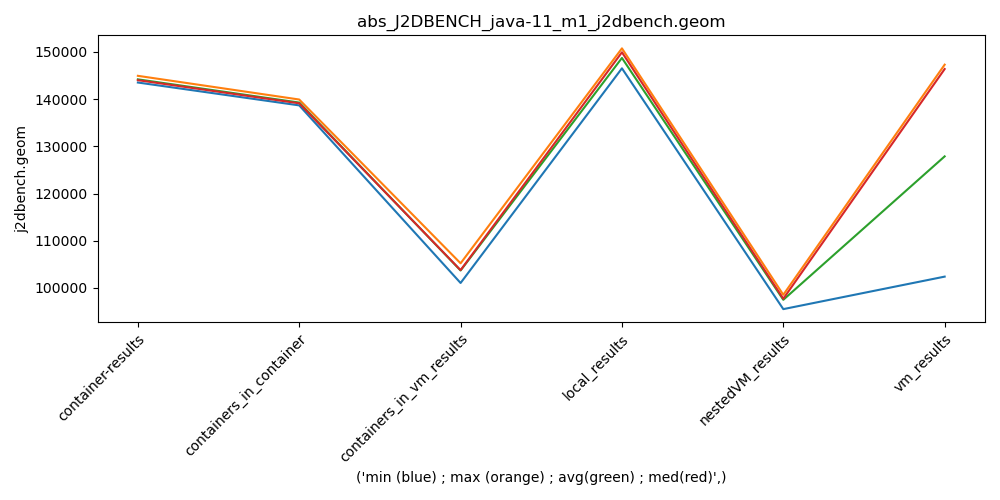
geomMean of all keys (benchmark meassured relativre accuracy)
{'MIN': [143502.0, 138660.0, 101050.0, 146509.0, 95517.0, 102399.0], 'MAX': [144920.0, 139902.0, 105220.0, 150734.0, 98551.0, 147284.0], 'AVG': [144173.0909090909, 139257.77358490566, 103696.25925925926, 148703.6222222222, 97489.93333333333, 127862.44444444444], 'MED': [144002.0, 139100.0, 103774.0, 149900.0, 97716.0, 146361.0]}
J2DBENCH java-11 geomMean where all runs of one jdk are treated as INDIVIDUAL items
MIN 143502.0 container-results
MIN 138660.0 containers_in_container
MIN 101050.0 containers_in_vm_results
MIN 146509.0 local_results
MIN 95517.0 nestedVM_results
MIN 102399.0 vm_results
MAX 144920.0 container-results
MAX 139902.0 containers_in_container
MAX 105220.0 containers_in_vm_results
MAX 150734.0 local_results
MAX 98551.0 nestedVM_results
MAX 147284.0 vm_results
AVG 144173.0909090909 container-results
AVG 139257.77358490566 containers_in_container
AVG 103696.25925925926 containers_in_vm_results
AVG 148703.6222222222 local_results
AVG 97489.93333333333 nestedVM_results
AVG 127862.44444444444 vm_results
MED 144002.0 container-results
MED 139100.0 containers_in_container
MED 103774.0 containers_in_vm_results
MED 149900.0 local_results
MED 97716.0 nestedVM_results
MED 146361.0 vm_results
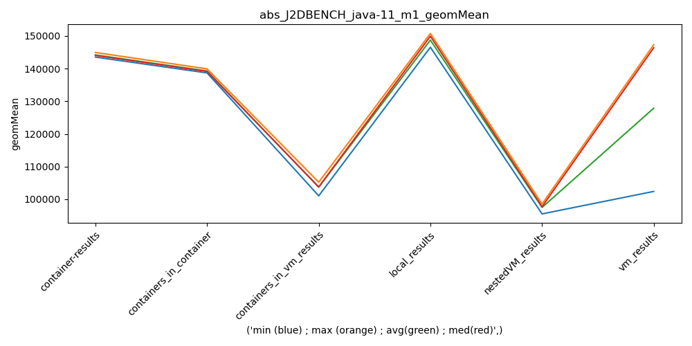
all runs of one jdk were made AVARAGE before processing
j2dbench.geom
J2DBENCH java-11 j2dbench.geom where all runs of one jdk were made AVARAGE before processing
MIN 143705.2 container-results
MIN 138820.0 containers_in_container
MIN 102801.2 containers_in_vm_results
MIN 146650.8 local_results
MIN 97081.8 nestedVM_results
MIN 103963.6 vm_results
MAX 144831.0 container-results
MAX 139751.2 containers_in_container
MAX 104542.0 containers_in_vm_results
MAX 150637.0 local_results
MAX 97991.8 nestedVM_results
MAX 147037.8 vm_results
AVG 144173.0909090909 container-results
AVG 139268.54545454544 containers_in_container
AVG 103688.03181818183 containers_in_vm_results
AVG 148703.62222222224 local_results
AVG 97489.93333333333 nestedVM_results
AVG 127862.44444444444 vm_results
MED 143948.4 container-results
MED 139065.6 containers_in_container
MED 103790.8 containers_in_vm_results
MED 149416.0 local_results
MED 97544.2 nestedVM_results
MED 146419.4 vm_results

geomMean of all keys (benchmark meassured relativre accuracy)
{'MIN': [143705.2, 138820.0, 102801.2, 146650.8, 97081.8, 103963.6], 'MAX': [144831.0, 139751.2, 104542.0, 150637.0, 97991.8, 147037.8], 'AVG': [144173.0909090909, 139268.54545454544, 103688.03181818183, 148703.62222222224, 97489.93333333333, 127862.44444444444], 'MED': [143948.4, 139065.6, 103790.8, 149416.0, 97544.2, 146419.4]}
J2DBENCH java-11 geomMean where all runs of one jdk were made AVARAGE before processing
MIN 143705.2 container-results
MIN 138820.0 containers_in_container
MIN 102801.2 containers_in_vm_results
MIN 146650.8 local_results
MIN 97081.8 nestedVM_results
MIN 103963.6 vm_results
MAX 144831.0 container-results
MAX 139751.2 containers_in_container
MAX 104542.0 containers_in_vm_results
MAX 150637.0 local_results
MAX 97991.8 nestedVM_results
MAX 147037.8 vm_results
AVG 144173.0909090909 container-results
AVG 139268.54545454544 containers_in_container
AVG 103688.03181818183 containers_in_vm_results
AVG 148703.62222222224 local_results
AVG 97489.93333333333 nestedVM_results
AVG 127862.44444444444 vm_results
MED 143948.4 container-results
MED 139065.6 containers_in_container
MED 103790.8 containers_in_vm_results
MED 149416.0 local_results
MED 97544.2 nestedVM_results
MED 146419.4 vm_results

all runs of one jdk were made MEDIAN before processing
j2dbench.geom
J2DBENCH java-11 j2dbench.geom where all runs of one jdk were made MEDIAN before processing
MIN 143751.0 container-results
MIN 138829.0 containers_in_container
MIN 102797.0 containers_in_vm_results
MIN 146578.0 local_results
MIN 96867.0 nestedVM_results
MIN 104005.0 vm_results
MAX 144826.0 container-results
MAX 139774.0 containers_in_container
MAX 104719.0 containers_in_vm_results
MAX 150697.0 local_results
MAX 98073.0 nestedVM_results
MAX 147141.0 vm_results
AVG 144193.0909090909 container-results
AVG 139271.72727272726 containers_in_container
AVG 103778.27272727272 containers_in_vm_results
AVG 148755.66666666666 local_results
AVG 97430.11111111111 nestedVM_results
AVG 127880.0 vm_results
MED 143992.0 container-results
MED 139100.0 containers_in_container
MED 103800.0 containers_in_vm_results
MED 149900.0 local_results
MED 97572.0 nestedVM_results
MED 146480.0 vm_results
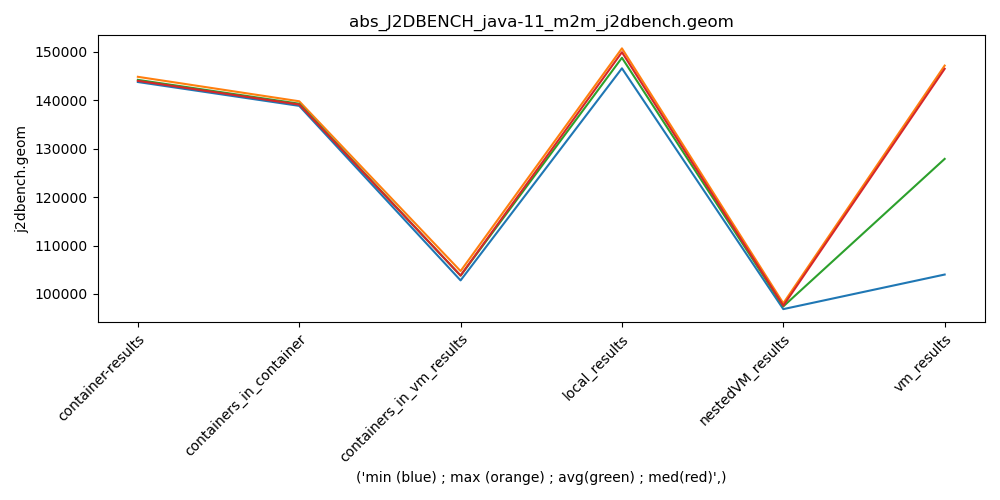
geomMean of all keys (benchmark meassured relativre accuracy)
{'MIN': [143751.0, 138829.0, 102797.0, 146578.0, 96867.0, 104005.0], 'MAX': [144826.0, 139774.0, 104719.0, 150697.0, 98073.0, 147141.0], 'AVG': [144193.0909090909, 139271.72727272726, 103778.27272727272, 148755.66666666666, 97430.11111111111, 127880.0], 'MED': [143992.0, 139100.0, 103800.0, 149900.0, 97572.0, 146480.0]}
J2DBENCH java-11 geomMean where all runs of one jdk were made MEDIAN before processing
MIN 143751.0 container-results
MIN 138829.0 containers_in_container
MIN 102797.0 containers_in_vm_results
MIN 146578.0 local_results
MIN 96867.0 nestedVM_results
MIN 104005.0 vm_results
MAX 144826.0 container-results
MAX 139774.0 containers_in_container
MAX 104719.0 containers_in_vm_results
MAX 150697.0 local_results
MAX 98073.0 nestedVM_results
MAX 147141.0 vm_results
AVG 144193.0909090909 container-results
AVG 139271.72727272726 containers_in_container
AVG 103778.27272727272 containers_in_vm_results
AVG 148755.66666666666 local_results
AVG 97430.11111111111 nestedVM_results
AVG 127880.0 vm_results
MED 143992.0 container-results
MED 139100.0 containers_in_container
MED 103800.0 containers_in_vm_results
MED 149900.0 local_results
MED 97572.0 nestedVM_results
MED 146480.0 vm_results
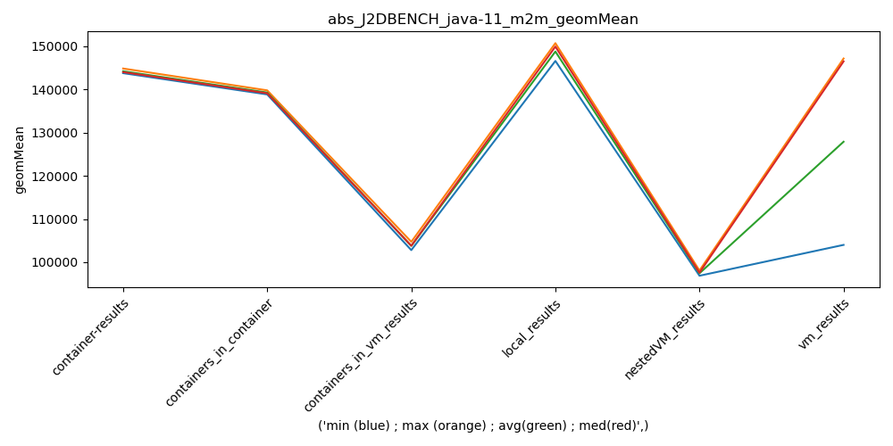
geomMean of all metrics from geomMean of all keys
{'MIN': [143652.69256318855, 138769.64494555347, 102212.72831592384, 146579.25523264773, 96486.10637684216, 103453.15689884726], 'MAX': [144858.99356475132, 139809.05091645953, 104826.60711754345, 150689.32803224502, 98204.95711809296, 147154.23204482588], 'AVG': [144179.75726750982, 139266.0153093932, 103720.84660219356, 148720.96834688398, 97469.98851249178, 127868.29602849623], 'MED': [143980.79811925505, 139088.53238795215, 103788.26610842296, 149738.4927158013, 97610.70430224763, 146420.12527288482]}
J2DBENCH java-11 geomMean geomMean
MIN 143652.69256318855 container-results
MIN 138769.64494555347 containers_in_container
MIN 102212.72831592384 containers_in_vm_results
MIN 146579.25523264773 local_results
MIN 96486.10637684216 nestedVM_results
MIN 103453.15689884726 vm_results
MAX 144858.99356475132 container-results
MAX 139809.05091645953 containers_in_container
MAX 104826.60711754345 containers_in_vm_results
MAX 150689.32803224502 local_results
MAX 98204.95711809296 nestedVM_results
MAX 147154.23204482588 vm_results
AVG 144179.75726750982 container-results
AVG 139266.0153093932 containers_in_container
AVG 103720.84660219356 containers_in_vm_results
AVG 148720.96834688398 local_results
AVG 97469.98851249178 nestedVM_results
AVG 127868.29602849623 vm_results
MED 143980.79811925505 container-results
MED 139088.53238795215 containers_in_container
MED 103788.26610842296 containers_in_vm_results
MED 149738.4927158013 local_results
MED 97610.70430224763 nestedVM_results
MED 146420.12527288482 vm_results

java-17
all runs of one jdk are treated as INDIVIDUAL items
j2dbench.geom
J2DBENCH java-17 j2dbench.geom where all runs of one jdk are treated as INDIVIDUAL items
MIN 139093.0 container-results
MIN 134146.0 containers_in_container
MIN 101552.0 containers_in_vm_results
MIN 142152.0 local_results
MIN 94244.0 nestedVM_results
MIN 102245.0 vm_results
MAX 140911.0 container-results
MAX 135110.0 containers_in_container
MAX 104160.0 containers_in_vm_results
MAX 147066.0 local_results
MAX 97559.0 nestedVM_results
MAX 143433.0 vm_results
AVG 139784.8409090909 container-results
AVG 134719.95555555556 containers_in_container
AVG 102904.97674418605 containers_in_vm_results
AVG 144727.0888888889 local_results
AVG 96350.04444444444 nestedVM_results
AVG 125011.47727272728 vm_results
MED 139497.0 container-results
MED 134806.0 containers_in_container
MED 102892.0 containers_in_vm_results
MED 146352.0 local_results
MED 96410.0 nestedVM_results
MED 142736.0 vm_results
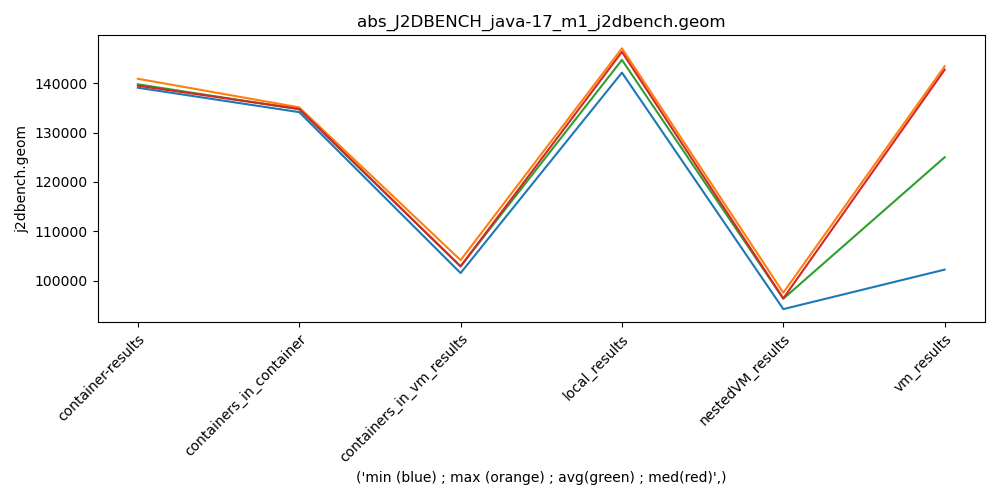
geomMean of all keys (benchmark meassured relativre accuracy)
{'MIN': [139093.0, 134146.0, 101552.0, 142152.0, 94244.0, 102245.0], 'MAX': [140911.0, 135110.0, 104160.0, 147066.0, 97559.0, 143433.0], 'AVG': [139784.8409090909, 134719.95555555556, 102904.97674418605, 144727.0888888889, 96350.04444444444, 125011.47727272728], 'MED': [139497.0, 134806.0, 102892.0, 146352.0, 96410.0, 142736.0]}
J2DBENCH java-17 geomMean where all runs of one jdk are treated as INDIVIDUAL items
MIN 139093.0 container-results
MIN 134146.0 containers_in_container
MIN 101552.0 containers_in_vm_results
MIN 142152.0 local_results
MIN 94244.0 nestedVM_results
MIN 102245.0 vm_results
MAX 140911.0 container-results
MAX 135110.0 containers_in_container
MAX 104160.0 containers_in_vm_results
MAX 147066.0 local_results
MAX 97559.0 nestedVM_results
MAX 143433.0 vm_results
AVG 139784.8409090909 container-results
AVG 134719.95555555556 containers_in_container
AVG 102904.97674418605 containers_in_vm_results
AVG 144727.0888888889 local_results
AVG 96350.04444444444 nestedVM_results
AVG 125011.47727272728 vm_results
MED 139497.0 container-results
MED 134806.0 containers_in_container
MED 102892.0 containers_in_vm_results
MED 146352.0 local_results
MED 96410.0 nestedVM_results
MED 142736.0 vm_results
all runs of one jdk were made AVARAGE before processing
j2dbench.geom
J2DBENCH java-17 j2dbench.geom where all runs of one jdk were made AVARAGE before processing
MIN 139277.4 container-results
MIN 134343.0 containers_in_container
MIN 102250.2 containers_in_vm_results
MIN 142322.2 local_results
MIN 95496.8 nestedVM_results
MIN 103125.0 vm_results
MAX 140521.6 container-results
MAX 134901.2 containers_in_container
MAX 103360.8 containers_in_vm_results
MAX 146701.6 local_results
MAX 96895.8 nestedVM_results
MAX 143096.4 vm_results
AVG 139787.12222222224 container-results
AVG 134719.95555555556 containers_in_container
AVG 102898.02222222222 containers_in_vm_results
AVG 144727.0888888889 local_results
AVG 96350.04444444444 nestedVM_results
AVG 125411.61111111111 vm_results
MED 139478.8 container-results
MED 134820.6 containers_in_container
MED 102990.0 containers_in_vm_results
MED 146502.4 local_results
MED 96455.6 nestedVM_results
MED 142898.4 vm_results

geomMean of all keys (benchmark meassured relativre accuracy)
{'MIN': [139277.4, 134343.0, 102250.2, 142322.2, 95496.8, 103125.0], 'MAX': [140521.6, 134901.2, 103360.8, 146701.6, 96895.8, 143096.4], 'AVG': [139787.12222222224, 134719.95555555556, 102898.02222222222, 144727.0888888889, 96350.04444444444, 125411.61111111111], 'MED': [139478.8, 134820.6, 102990.0, 146502.4, 96455.6, 142898.4]}
J2DBENCH java-17 geomMean where all runs of one jdk were made AVARAGE before processing
MIN 139277.4 container-results
MIN 134343.0 containers_in_container
MIN 102250.2 containers_in_vm_results
MIN 142322.2 local_results
MIN 95496.8 nestedVM_results
MIN 103125.0 vm_results
MAX 140521.6 container-results
MAX 134901.2 containers_in_container
MAX 103360.8 containers_in_vm_results
MAX 146701.6 local_results
MAX 96895.8 nestedVM_results
MAX 143096.4 vm_results
AVG 139787.12222222224 container-results
AVG 134719.95555555556 containers_in_container
AVG 102898.02222222222 containers_in_vm_results
AVG 144727.0888888889 local_results
AVG 96350.04444444444 nestedVM_results
AVG 125411.61111111111 vm_results
MED 139478.8 container-results
MED 134820.6 containers_in_container
MED 102990.0 containers_in_vm_results
MED 146502.4 local_results
MED 96455.6 nestedVM_results
MED 142898.4 vm_results
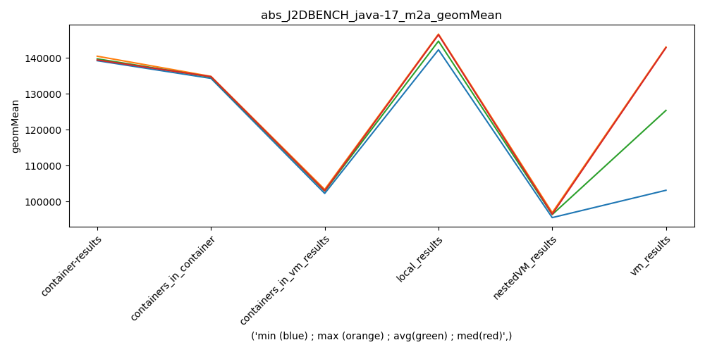
all runs of one jdk were made MEDIAN before processing
j2dbench.geom
J2DBENCH java-17 j2dbench.geom where all runs of one jdk were made MEDIAN before processing
MIN 139241.0 container-results
MIN 134336.0 containers_in_container
MIN 102519.0 containers_in_vm_results
MIN 142334.0 local_results
MIN 95698.0 nestedVM_results
MIN 103108.0 vm_results
MAX 140556.0 container-results
MAX 134917.0 containers_in_container
MAX 103631.0 containers_in_vm_results
MAX 146698.0 local_results
MAX 96893.0 nestedVM_results
MAX 143219.0 vm_results
AVG 139826.33333333334 container-results
AVG 134742.44444444444 containers_in_container
AVG 102943.22222222222 containers_in_vm_results
AVG 144713.0 local_results
AVG 96454.66666666667 nestedVM_results
AVG 125456.88888888889 vm_results
MED 139497.0 container-results
MED 134825.0 containers_in_container
MED 102839.0 containers_in_vm_results
MED 146465.0 local_results
MED 96410.0 nestedVM_results
MED 142863.0 vm_results

geomMean of all keys (benchmark meassured relativre accuracy)
{'MIN': [139241.0, 134336.0, 102519.0, 142334.0, 95698.0, 103108.0], 'MAX': [140556.0, 134917.0, 103631.0, 146698.0, 96893.0, 143219.0], 'AVG': [139826.33333333334, 134742.44444444444, 102943.22222222222, 144713.0, 96454.66666666667, 125456.88888888889], 'MED': [139497.0, 134825.0, 102839.0, 146465.0, 96410.0, 142863.0]}
J2DBENCH java-17 geomMean where all runs of one jdk were made MEDIAN before processing
MIN 139241.0 container-results
MIN 134336.0 containers_in_container
MIN 102519.0 containers_in_vm_results
MIN 142334.0 local_results
MIN 95698.0 nestedVM_results
MIN 103108.0 vm_results
MAX 140556.0 container-results
MAX 134917.0 containers_in_container
MAX 103631.0 containers_in_vm_results
MAX 146698.0 local_results
MAX 96893.0 nestedVM_results
MAX 143219.0 vm_results
AVG 139826.33333333334 container-results
AVG 134742.44444444444 containers_in_container
AVG 102943.22222222222 containers_in_vm_results
AVG 144713.0 local_results
AVG 96454.66666666667 nestedVM_results
AVG 125456.88888888889 vm_results
MED 139497.0 container-results
MED 134825.0 containers_in_container
MED 102839.0 containers_in_vm_results
MED 146465.0 local_results
MED 96410.0 nestedVM_results
MED 142863.0 vm_results
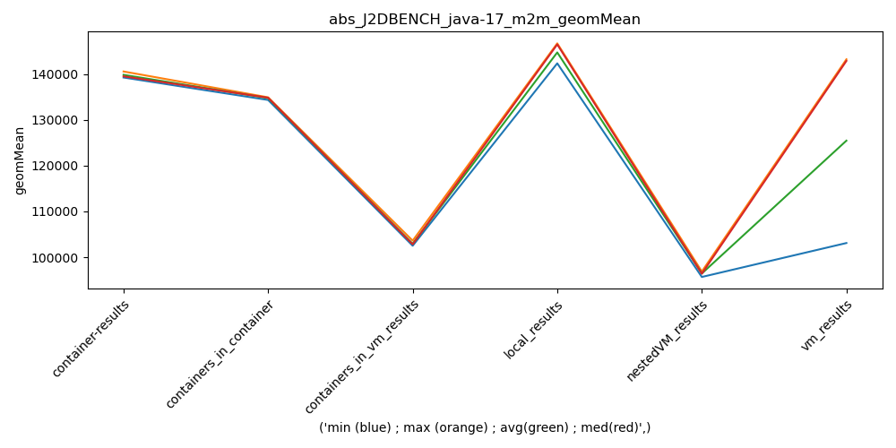
geomMean of all metrics from geomMean of all keys
{'MIN': [139203.77715363886, 134274.9689766326, 102106.2522923289, 142269.37569236849, 95144.08570005275, 102825.17750551629], 'MAX': [140662.75660004708, 134976.03329870477, 103716.73595724428, 146821.7652301103, 97115.42874780107, 143249.3991502031], 'AVG': [139799.43085773423, 134727.45143476993, 102915.4051444576, 144722.3924401926, 96384.90590339302, 125293.16577287963], 'MED': [139490.9330694773, 134817.19975541637, 102906.98099196874, 146439.78604143945, 96425.19760419754, 142832.44964436057]}
J2DBENCH java-17 geomMean geomMean
MIN 139203.77715363886 container-results
MIN 134274.9689766326 containers_in_container
MIN 102106.2522923289 containers_in_vm_results
MIN 142269.37569236849 local_results
MIN 95144.08570005275 nestedVM_results
MIN 102825.17750551629 vm_results
MAX 140662.75660004708 container-results
MAX 134976.03329870477 containers_in_container
MAX 103716.73595724428 containers_in_vm_results
MAX 146821.7652301103 local_results
MAX 97115.42874780107 nestedVM_results
MAX 143249.3991502031 vm_results
AVG 139799.43085773423 container-results
AVG 134727.45143476993 containers_in_container
AVG 102915.4051444576 containers_in_vm_results
AVG 144722.3924401926 local_results
AVG 96384.90590339302 nestedVM_results
AVG 125293.16577287963 vm_results
MED 139490.9330694773 container-results
MED 134817.19975541637 containers_in_container
MED 102906.98099196874 containers_in_vm_results
MED 146439.78604143945 local_results
MED 96425.19760419754 nestedVM_results
MED 142832.44964436057 vm_results
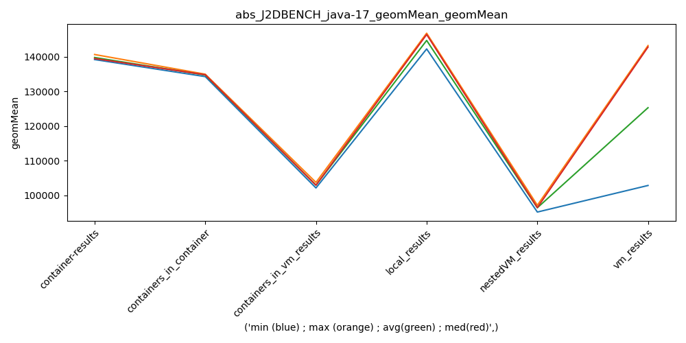
java-21
all runs of one jdk are treated as INDIVIDUAL items
j2dbench.geom
J2DBENCH java-21 j2dbench.geom where all runs of one jdk are treated as INDIVIDUAL items
MIN 135915.0 container-results
MIN 135729.0 containers_in_container
MIN 100244.0 containers_in_vm_results
MIN 138985.0 local_results
MIN 94769.0 nestedVM_results
MIN 102996.0 vm_results
MAX 139532.0 container-results
MAX 137451.0 containers_in_container
MAX 104890.0 containers_in_vm_results
MAX 142518.0 local_results
MAX 98099.0 nestedVM_results
MAX 105340.0 vm_results
AVG 137977.8 container-results
AVG 136730.08571428573 containers_in_container
AVG 103742.9705882353 containers_in_vm_results
AVG 141016.34285714285 local_results
AVG 96962.71428571429 nestedVM_results
AVG 104133.0 vm_results
MED 139115.0 container-results
MED 137256.0 containers_in_container
MED 103888.0 containers_in_vm_results
MED 142205.0 local_results
MED 96990.0 nestedVM_results
MED 104058.0 vm_results
geomMean of all keys (benchmark meassured relativre accuracy)
{'MIN': [135915.0, 135729.0, 100244.0, 138985.0, 94769.0, 102996.0], 'MAX': [139532.0, 137451.0, 104890.0, 142518.0, 98099.0, 105340.0], 'AVG': [137977.8, 136730.08571428573, 103742.9705882353, 141016.34285714285, 96962.71428571429, 104133.0], 'MED': [139115.0, 137256.0, 103888.0, 142205.0, 96990.0, 104058.0]}
J2DBENCH java-21 geomMean where all runs of one jdk are treated as INDIVIDUAL items
MIN 135915.0 container-results
MIN 135729.0 containers_in_container
MIN 100244.0 containers_in_vm_results
MIN 138985.0 local_results
MIN 94769.0 nestedVM_results
MIN 102996.0 vm_results
MAX 139532.0 container-results
MAX 137451.0 containers_in_container
MAX 104890.0 containers_in_vm_results
MAX 142518.0 local_results
MAX 98099.0 nestedVM_results
MAX 105340.0 vm_results
AVG 137977.8 container-results
AVG 136730.08571428573 containers_in_container
AVG 103742.9705882353 containers_in_vm_results
AVG 141016.34285714285 local_results
AVG 96962.71428571429 nestedVM_results
AVG 104133.0 vm_results
MED 139115.0 container-results
MED 137256.0 containers_in_container
MED 103888.0 containers_in_vm_results
MED 142205.0 local_results
MED 96990.0 nestedVM_results
MED 104058.0 vm_results
all runs of one jdk were made AVARAGE before processing
j2dbench.geom
J2DBENCH java-21 j2dbench.geom where all runs of one jdk were made AVARAGE before processing
MIN 136145.2 container-results
MIN 135812.6 containers_in_container
MIN 103210.2 containers_in_vm_results
MIN 139146.0 local_results
MIN 96151.0 nestedVM_results
MIN 103844.6 vm_results
MAX 139439.6 container-results
MAX 137366.4 containers_in_container
MAX 104194.6 containers_in_vm_results
MAX 142389.0 local_results
MAX 97331.2 nestedVM_results
MAX 104425.8 vm_results
AVG 137977.8 container-results
AVG 136730.08571428573 containers_in_container
AVG 103742.66428571429 containers_in_vm_results
AVG 141016.34285714285 local_results
AVG 96962.71428571429 nestedVM_results
AVG 104133.0 vm_results
MED 139202.8 container-results
MED 137286.4 containers_in_container
MED 103732.25 containers_in_vm_results
MED 142281.4 local_results
MED 97057.4 nestedVM_results
MED 104169.0 vm_results
geomMean of all keys (benchmark meassured relativre accuracy)
{'MIN': [136145.2, 135812.6, 103210.2, 139146.0, 96151.0, 103844.6], 'MAX': [139439.6, 137366.4, 104194.6, 142389.0, 97331.2, 104425.8], 'AVG': [137977.8, 136730.08571428573, 103742.66428571429, 141016.34285714285, 96962.71428571429, 104133.0], 'MED': [139202.8, 137286.4, 103732.25, 142281.4, 97057.4, 104169.0]}
J2DBENCH java-21 geomMean where all runs of one jdk were made AVARAGE before processing
MIN 136145.2 container-results
MIN 135812.6 containers_in_container
MIN 103210.2 containers_in_vm_results
MIN 139146.0 local_results
MIN 96151.0 nestedVM_results
MIN 103844.6 vm_results
MAX 139439.6 container-results
MAX 137366.4 containers_in_container
MAX 104194.6 containers_in_vm_results
MAX 142389.0 local_results
MAX 97331.2 nestedVM_results
MAX 104425.8 vm_results
AVG 137977.8 container-results
AVG 136730.08571428573 containers_in_container
AVG 103742.66428571429 containers_in_vm_results
AVG 141016.34285714285 local_results
AVG 96962.71428571429 nestedVM_results
AVG 104133.0 vm_results
MED 139202.8 container-results
MED 137286.4 containers_in_container
MED 103732.25 containers_in_vm_results
MED 142281.4 local_results
MED 97057.4 nestedVM_results
MED 104169.0 vm_results
all runs of one jdk were made MEDIAN before processing
j2dbench.geom
J2DBENCH java-21 j2dbench.geom where all runs of one jdk were made MEDIAN before processing
MIN 136154.0 container-results
MIN 135825.0 containers_in_container
MIN 103441.0 containers_in_vm_results
MIN 139189.0 local_results
MIN 96604.0 nestedVM_results
MIN 103700.0 vm_results
MAX 139431.0 container-results
MAX 137371.0 containers_in_container
MAX 104497.0 containers_in_vm_results
MAX 142418.0 local_results
MAX 97136.0 nestedVM_results
MAX 104689.0 vm_results
AVG 137980.7142857143 container-results
AVG 136736.85714285713 containers_in_container
AVG 104020.0 containers_in_vm_results
AVG 141031.14285714287 local_results
AVG 96913.28571428571 nestedVM_results
AVG 104126.28571428571 vm_results
MED 139163.0 container-results
MED 137320.0 containers_in_container
MED 103988.0 containers_in_vm_results
MED 142265.0 local_results
MED 97027.0 nestedVM_results
MED 104056.0 vm_results

geomMean of all keys (benchmark meassured relativre accuracy)
{'MIN': [136154.0, 135825.0, 103441.0, 139189.0, 96604.0, 103700.0], 'MAX': [139431.0, 137371.0, 104497.0, 142418.0, 97136.0, 104689.0], 'AVG': [137980.7142857143, 136736.85714285713, 104020.0, 141031.14285714287, 96913.28571428571, 104126.28571428571], 'MED': [139163.0, 137320.0, 103988.0, 142265.0, 97027.0, 104056.0]}
J2DBENCH java-21 geomMean where all runs of one jdk were made MEDIAN before processing
MIN 136154.0 container-results
MIN 135825.0 containers_in_container
MIN 103441.0 containers_in_vm_results
MIN 139189.0 local_results
MIN 96604.0 nestedVM_results
MIN 103700.0 vm_results
MAX 139431.0 container-results
MAX 137371.0 containers_in_container
MAX 104497.0 containers_in_vm_results
MAX 142418.0 local_results
MAX 97136.0 nestedVM_results
MAX 104689.0 vm_results
AVG 137980.7142857143 container-results
AVG 136736.85714285713 containers_in_container
AVG 104020.0 containers_in_vm_results
AVG 141031.14285714287 local_results
AVG 96913.28571428571 nestedVM_results
AVG 104126.28571428571 vm_results
MED 139163.0 container-results
MED 137320.0 containers_in_container
MED 103988.0 containers_in_vm_results
MED 142265.0 local_results
MED 97027.0 nestedVM_results
MED 104056.0 vm_results
geomMean of all metrics from geomMean of all keys
{'MIN': [136071.3549939892, 135788.8599728641, 102287.97303613725, 139106.6389489246, 95838.14612372887, 103512.86862854799], 'MAX': [139467.5258405935, 137396.12784371973, 104526.8123978335, 142441.65594961113, 97521.18231559942, 104817.56315768819], 'AVG': [137978.7714217321, 136732.34281988285, 103835.12945949295, 141021.27601789782, 96946.235294762, 104130.7618566575], 'MED': [139160.2620368699, 137287.46417834668, 103869.36334991564, 142250.46287570757, 97024.79608572314, 104094.31994376409]}
J2DBENCH java-21 geomMean geomMean
MIN 136071.3549939892 container-results
MIN 135788.8599728641 containers_in_container
MIN 102287.97303613725 containers_in_vm_results
MIN 139106.6389489246 local_results
MIN 95838.14612372887 nestedVM_results
MIN 103512.86862854799 vm_results
MAX 139467.5258405935 container-results
MAX 137396.12784371973 containers_in_container
MAX 104526.8123978335 containers_in_vm_results
MAX 142441.65594961113 local_results
MAX 97521.18231559942 nestedVM_results
MAX 104817.56315768819 vm_results
AVG 137978.7714217321 container-results
AVG 136732.34281988285 containers_in_container
AVG 103835.12945949295 containers_in_vm_results
AVG 141021.27601789782 local_results
AVG 96946.235294762 nestedVM_results
AVG 104130.7618566575 vm_results
MED 139160.2620368699 container-results
MED 137287.46417834668 containers_in_container
MED 103869.36334991564 containers_in_vm_results
MED 142250.46287570757 local_results
MED 97024.79608572314 nestedVM_results
MED 104094.31994376409 vm_results
geomMean of all benchamrks from geomMean of all metrics and all keys
{'MIN': [13186.318895735521, 12900.610301347284, 10012.099096989237, 13152.76630486282, 9506.440439905198, 10083.014253335268], 'MAX': [13317.561637503062, 12984.521987609556, 10177.94044076214, 13631.151804568522, 9669.402213593858, 12420.479627869332], 'AVG': [13249.528859189293, 12949.24270962092, 10109.130643569475, 13370.709543539677, 9604.769836904856, 11525.167840193852], 'MED': [13260.867331049854, 12960.979047706061, 10113.377750371437, 13385.155624832409, 9610.822669688987, 12365.422287349085]}
J2DBENCH geomMean geomMean geomMean
MIN 13186.318895735521 container-results
MIN 12900.610301347284 containers_in_container
MIN 10012.099096989237 containers_in_vm_results
MIN 13152.76630486282 local_results
MIN 9506.440439905198 nestedVM_results
MIN 10083.014253335268 vm_results
MAX 13317.561637503062 container-results
MAX 12984.521987609556 containers_in_container
MAX 10177.94044076214 containers_in_vm_results
MAX 13631.151804568522 local_results
MAX 9669.402213593858 nestedVM_results
MAX 12420.479627869332 vm_results
AVG 13249.528859189293 container-results
AVG 12949.24270962092 containers_in_container
AVG 10109.130643569475 containers_in_vm_results
AVG 13370.709543539677 local_results
AVG 9604.769836904856 nestedVM_results
AVG 11525.167840193852 vm_results
MED 13260.867331049854 container-results
MED 12960.979047706061 containers_in_container
MED 10113.377750371437 containers_in_vm_results
MED 13385.155624832409 local_results
MED 9610.822669688987 nestedVM_results
MED 12365.422287349085 vm_results

JMH
java-1.8.0
all runs of one jdk are treated as INDIVIDUAL items
geom
JMH java-1.8.0 geom where all runs of one jdk are treated as INDIVIDUAL items
MIN 397.0 container-results
MIN 402.0 containers_in_container
MIN 324.0 containers_in_vm_results
MIN 401.0 local_results
MIN 324.0 nestedVM_results
MIN 345.0 vm_results
MAX 439.0 container-results
MAX 439.0 containers_in_container
MAX 402.0 containers_in_vm_results
MAX 455.0 local_results
MAX 349.0 nestedVM_results
MAX 401.0 vm_results
AVG 429.7 container-results
AVG 429.78 containers_in_container
AVG 359.7 containers_in_vm_results
AVG 430.82 local_results
AVG 343.77777777777777 nestedVM_results
AVG 375.53061224489795 vm_results
MED 434.0 container-results
MED 433.0 containers_in_container
MED 350.0 containers_in_vm_results
MED 434.0 local_results
MED 346.0 nestedVM_results
MED 370.0 vm_results
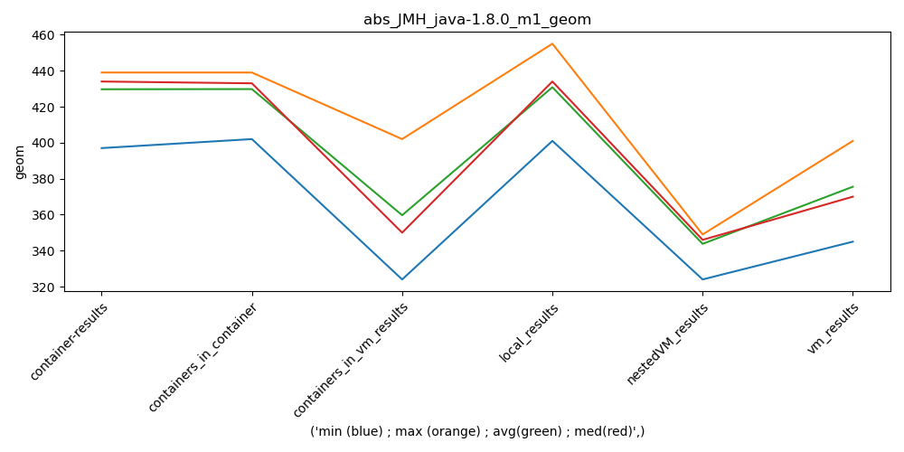
geomMean of all keys (benchmark meassured relativre accuracy)
{'MIN': [397.0, 402.0, 324.0, 401.0, 324.0, 345.0], 'MAX': [439.0, 439.0, 402.0, 455.0, 349.0, 401.0], 'AVG': [429.7, 429.78, 359.7, 430.82, 343.77777777777777, 375.53061224489795], 'MED': [434.0, 433.0, 350.0, 434.0, 346.0, 370.0]}
JMH java-1.8.0 geomMean where all runs of one jdk are treated as INDIVIDUAL items
MIN 397.0 container-results
MIN 402.0 containers_in_container
MIN 324.0 containers_in_vm_results
MIN 401.0 local_results
MIN 324.0 nestedVM_results
MIN 345.0 vm_results
MAX 439.0 container-results
MAX 439.0 containers_in_container
MAX 402.0 containers_in_vm_results
MAX 455.0 local_results
MAX 349.0 nestedVM_results
MAX 401.0 vm_results
AVG 429.7 container-results
AVG 429.78 containers_in_container
AVG 359.7 containers_in_vm_results
AVG 430.82 local_results
AVG 343.77777777777777 nestedVM_results
AVG 375.53061224489795 vm_results
MED 434.0 container-results
MED 433.0 containers_in_container
MED 350.0 containers_in_vm_results
MED 434.0 local_results
MED 346.0 nestedVM_results
MED 370.0 vm_results
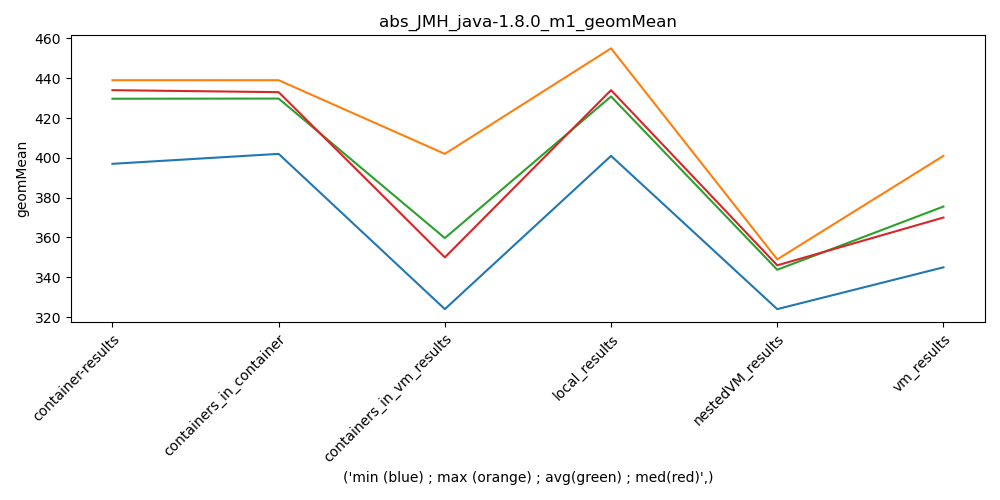
all runs of one jdk were made AVARAGE before processing
geom
JMH java-1.8.0 geom where all runs of one jdk were made AVARAGE before processing
MIN 398.8 container-results
MIN 404.0 containers_in_container
MIN 327.0 containers_in_vm_results
MIN 404.0 local_results
MIN 324.75 nestedVM_results
MIN 345.8 vm_results
MAX 436.6 container-results
MAX 436.6 containers_in_container
MAX 399.6 containers_in_vm_results
MAX 439.6 local_results
MAX 347.8 nestedVM_results
MAX 399.4 vm_results
AVG 429.7 container-results
AVG 429.78000000000003 containers_in_container
AVG 359.7 containers_in_vm_results
AVG 430.82 local_results
AVG 343.42333333333335 nestedVM_results
AVG 375.975 vm_results
MED 434.8 container-results
MED 433.2 containers_in_container
MED 350.2 containers_in_vm_results
MED 433.8 local_results
MED 346.25 nestedVM_results
MED 370.2 vm_results

geomMean of all keys (benchmark meassured relativre accuracy)
{'MIN': [398.8, 404.0, 327.0, 404.0, 324.75, 345.8], 'MAX': [436.6, 436.6, 399.6, 439.6, 347.8, 399.4], 'AVG': [429.7, 429.78000000000003, 359.7, 430.82, 343.42333333333335, 375.975], 'MED': [434.8, 433.2, 350.2, 433.8, 346.25, 370.2]}
JMH java-1.8.0 geomMean where all runs of one jdk were made AVARAGE before processing
MIN 398.8 container-results
MIN 404.0 containers_in_container
MIN 327.0 containers_in_vm_results
MIN 404.0 local_results
MIN 324.75 nestedVM_results
MIN 345.8 vm_results
MAX 436.6 container-results
MAX 436.6 containers_in_container
MAX 399.6 containers_in_vm_results
MAX 439.6 local_results
MAX 347.8 nestedVM_results
MAX 399.4 vm_results
AVG 429.7 container-results
AVG 429.78000000000003 containers_in_container
AVG 359.7 containers_in_vm_results
AVG 430.82 local_results
AVG 343.42333333333335 nestedVM_results
AVG 375.975 vm_results
MED 434.8 container-results
MED 433.2 containers_in_container
MED 350.2 containers_in_vm_results
MED 433.8 local_results
MED 346.25 nestedVM_results
MED 370.2 vm_results
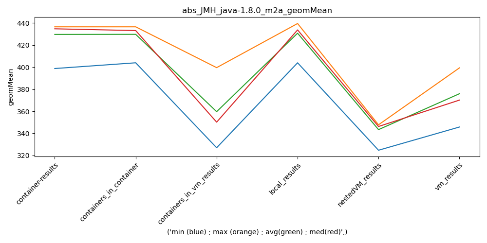
all runs of one jdk were made MEDIAN before processing
geom
JMH java-1.8.0 geom where all runs of one jdk were made MEDIAN before processing
MIN 399.0 container-results
MIN 404.0 containers_in_container
MIN 326.0 containers_in_vm_results
MIN 405.0 local_results
MIN 325.0 nestedVM_results
MIN 346.0 vm_results
MAX 437.0 container-results
MAX 436.0 containers_in_container
MAX 400.0 containers_in_vm_results
MAX 436.0 local_results
MAX 348.0 nestedVM_results
MAX 399.0 vm_results
AVG 429.6 container-results
AVG 429.6 containers_in_container
AVG 359.1 containers_in_vm_results
AVG 430.4 local_results
AVG 343.7 nestedVM_results
AVG 376.1 vm_results
MED 434.0 container-results
MED 433.0 containers_in_container
MED 350.0 containers_in_vm_results
MED 434.0 local_results
MED 346.0 nestedVM_results
MED 370.0 vm_results
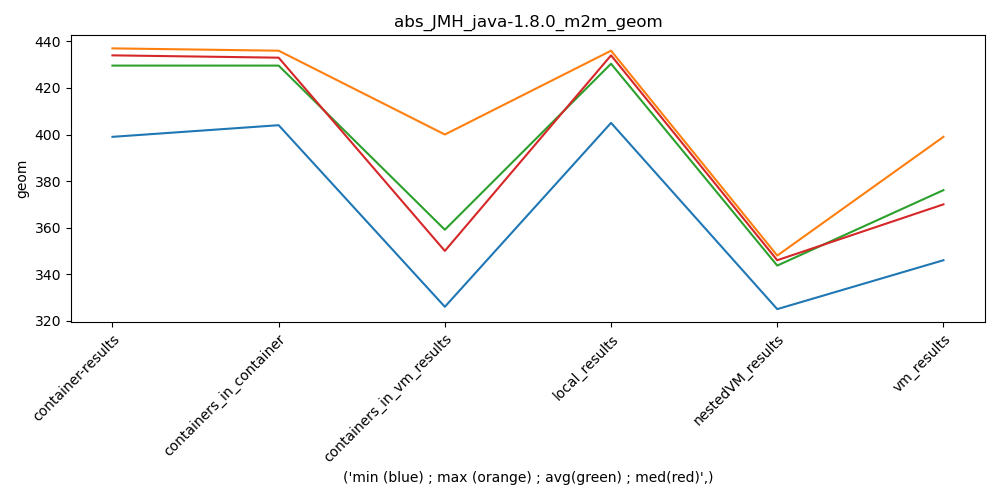
geomMean of all keys (benchmark meassured relativre accuracy)
{'MIN': [399.0, 404.0, 326.0, 405.0, 325.0, 346.0], 'MAX': [437.0, 436.0, 400.0, 436.0, 348.0, 399.0], 'AVG': [429.6, 429.6, 359.1, 430.4, 343.7, 376.1], 'MED': [434.0, 433.0, 350.0, 434.0, 346.0, 370.0]}
JMH java-1.8.0 geomMean where all runs of one jdk were made MEDIAN before processing
MIN 399.0 container-results
MIN 404.0 containers_in_container
MIN 326.0 containers_in_vm_results
MIN 405.0 local_results
MIN 325.0 nestedVM_results
MIN 346.0 vm_results
MAX 437.0 container-results
MAX 436.0 containers_in_container
MAX 400.0 containers_in_vm_results
MAX 436.0 local_results
MAX 348.0 nestedVM_results
MAX 399.0 vm_results
AVG 429.6 container-results
AVG 429.6 containers_in_container
AVG 359.1 containers_in_vm_results
AVG 430.4 local_results
AVG 343.7 nestedVM_results
AVG 376.1 vm_results
MED 434.0 container-results
MED 433.0 containers_in_container
MED 350.0 containers_in_vm_results
MED 434.0 local_results
MED 346.0 nestedVM_results
MED 370.0 vm_results
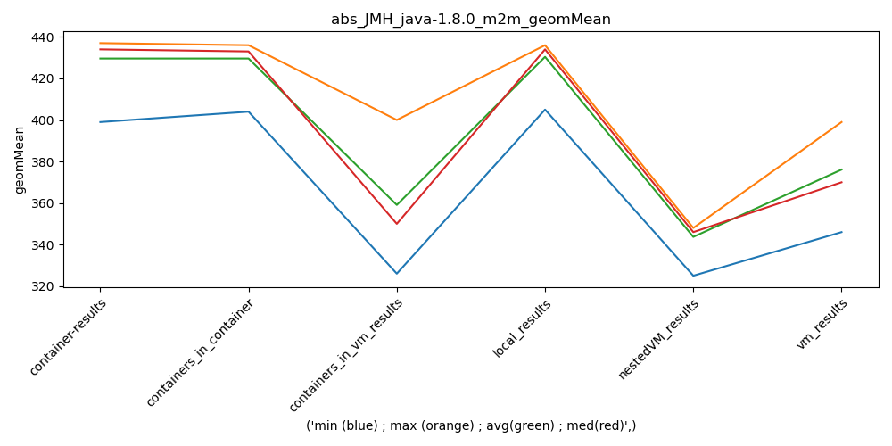
geomMean of all metrics from geomMean of all keys
{'MIN': [398.2656501113081, 403.33223018769525, 325.66427605764414, 403.3297467218951, 324.5830550705661, 345.59972980410106], 'MAX': [437.532075014371, 437.1980809341795, 400.5319589023698, 443.4573491156323, 348.26627130701513, 399.79906699838966], 'AVG': [429.6666640805488, 429.7199916216717, 359.4998886930519, 430.67995448070565, 343.63367003416374, 375.86845797807064], 'MED': [434.26650298376785, 433.06665640499375, 350.0666539722836, 433.93332309005524, 346.0833132707373, 370.06665465826046]}
JMH java-1.8.0 geomMean geomMean
MIN 398.2656501113081 container-results
MIN 403.33223018769525 containers_in_container
MIN 325.66427605764414 containers_in_vm_results
MIN 403.3297467218951 local_results
MIN 324.5830550705661 nestedVM_results
MIN 345.59972980410106 vm_results
MAX 437.532075014371 container-results
MAX 437.1980809341795 containers_in_container
MAX 400.5319589023698 containers_in_vm_results
MAX 443.4573491156323 local_results
MAX 348.26627130701513 nestedVM_results
MAX 399.79906699838966 vm_results
AVG 429.6666640805488 container-results
AVG 429.7199916216717 containers_in_container
AVG 359.4998886930519 containers_in_vm_results
AVG 430.67995448070565 local_results
AVG 343.63367003416374 nestedVM_results
AVG 375.86845797807064 vm_results
MED 434.26650298376785 container-results
MED 433.06665640499375 containers_in_container
MED 350.0666539722836 containers_in_vm_results
MED 433.93332309005524 local_results
MED 346.0833132707373 nestedVM_results
MED 370.06665465826046 vm_results

java-11
all runs of one jdk are treated as INDIVIDUAL items
geom
JMH java-11 geom where all runs of one jdk are treated as INDIVIDUAL items
MIN 419.0 container-results
MIN 423.0 containers_in_container
MIN 329.0 containers_in_vm_results
MIN 412.0 local_results
MIN 339.0 nestedVM_results
MIN 361.0 vm_results
MAX 429.0 container-results
MAX 437.0 containers_in_container
MAX 395.0 containers_in_vm_results
MAX 465.0 local_results
MAX 344.0 nestedVM_results
MAX 395.0 vm_results
AVG 425.5090909090909 container-results
AVG 426.25454545454545 containers_in_container
AVG 357.6981132075472 containers_in_vm_results
AVG 424.7090909090909 local_results
AVG 341.19607843137254 nestedVM_results
AVG 373.90909090909093 vm_results
MED 426.0 container-results
MED 426.0 containers_in_container
MED 341.0 containers_in_vm_results
MED 424.0 local_results
MED 341.0 nestedVM_results
MED 364.0 vm_results

geomMean of all keys (benchmark meassured relativre accuracy)
{'MIN': [419.0, 423.0, 329.0, 412.0, 339.0, 361.0], 'MAX': [429.0, 437.0, 395.0, 465.0, 344.0, 395.0], 'AVG': [425.5090909090909, 426.25454545454545, 357.6981132075472, 424.7090909090909, 341.19607843137254, 373.90909090909093], 'MED': [426.0, 426.0, 341.0, 424.0, 341.0, 364.0]}
JMH java-11 geomMean where all runs of one jdk are treated as INDIVIDUAL items
MIN 419.0 container-results
MIN 423.0 containers_in_container
MIN 329.0 containers_in_vm_results
MIN 412.0 local_results
MIN 339.0 nestedVM_results
MIN 361.0 vm_results
MAX 429.0 container-results
MAX 437.0 containers_in_container
MAX 395.0 containers_in_vm_results
MAX 465.0 local_results
MAX 344.0 nestedVM_results
MAX 395.0 vm_results
AVG 425.5090909090909 container-results
AVG 426.25454545454545 containers_in_container
AVG 357.6981132075472 containers_in_vm_results
AVG 424.7090909090909 local_results
AVG 341.19607843137254 nestedVM_results
AVG 373.90909090909093 vm_results
MED 426.0 container-results
MED 426.0 containers_in_container
MED 341.0 containers_in_vm_results
MED 424.0 local_results
MED 341.0 nestedVM_results
MED 364.0 vm_results
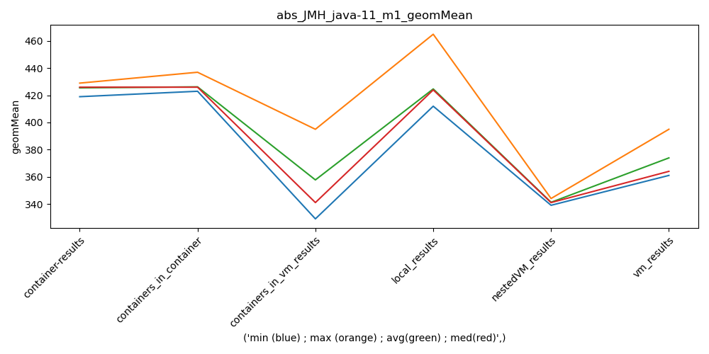
all runs of one jdk were made AVARAGE before processing
geom
JMH java-11 geom where all runs of one jdk were made AVARAGE before processing
MIN 421.8 container-results
MIN 424.0 containers_in_container
MIN 333.6 containers_in_vm_results
MIN 421.6 local_results
MIN 340.2 nestedVM_results
MIN 362.8 vm_results
MAX 427.8 container-results
MAX 429.0 containers_in_container
MAX 393.8 containers_in_vm_results
MAX 431.8 local_results
MAX 343.0 nestedVM_results
MAX 393.6 vm_results
AVG 425.50909090909096 container-results
AVG 426.25454545454545 containers_in_container
AVG 356.8363636363636 containers_in_vm_results
AVG 424.70909090909095 local_results
AVG 341.17727272727274 nestedVM_results
AVG 373.90909090909093 vm_results
MED 426.8 container-results
MED 425.8 containers_in_container
MED 338.4 containers_in_vm_results
MED 424.2 local_results
MED 341.0 nestedVM_results
MED 363.6 vm_results

geomMean of all keys (benchmark meassured relativre accuracy)
{'MIN': [421.8, 424.0, 333.6, 421.6, 340.2, 362.8], 'MAX': [427.8, 429.0, 393.8, 431.8, 343.0, 393.6], 'AVG': [425.50909090909096, 426.25454545454545, 356.8363636363636, 424.70909090909095, 341.17727272727274, 373.90909090909093], 'MED': [426.8, 425.8, 338.4, 424.2, 341.0, 363.6]}
JMH java-11 geomMean where all runs of one jdk were made AVARAGE before processing
MIN 421.8 container-results
MIN 424.0 containers_in_container
MIN 333.6 containers_in_vm_results
MIN 421.6 local_results
MIN 340.2 nestedVM_results
MIN 362.8 vm_results
MAX 427.8 container-results
MAX 429.0 containers_in_container
MAX 393.8 containers_in_vm_results
MAX 431.8 local_results
MAX 343.0 nestedVM_results
MAX 393.6 vm_results
AVG 425.50909090909096 container-results
AVG 426.25454545454545 containers_in_container
AVG 356.8363636363636 containers_in_vm_results
AVG 424.70909090909095 local_results
AVG 341.17727272727274 nestedVM_results
AVG 373.90909090909093 vm_results
MED 426.8 container-results
MED 425.8 containers_in_container
MED 338.4 containers_in_vm_results
MED 424.2 local_results
MED 341.0 nestedVM_results
MED 363.6 vm_results
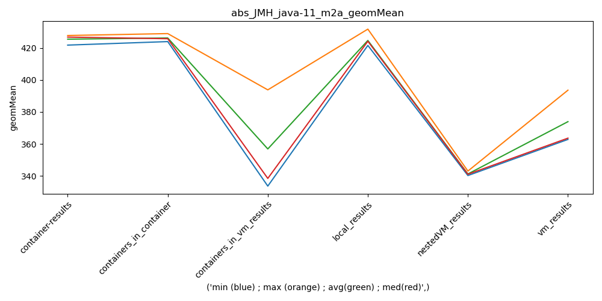
all runs of one jdk were made MEDIAN before processing
geom
JMH java-11 geom where all runs of one jdk were made MEDIAN before processing
MIN 422.0 container-results
MIN 424.0 containers_in_container
MIN 333.0 containers_in_vm_results
MIN 423.0 local_results
MIN 340.0 nestedVM_results
MIN 363.0 vm_results
MAX 428.0 container-results
MAX 428.0 containers_in_container
MAX 394.0 containers_in_vm_results
MAX 425.0 local_results
MAX 343.0 nestedVM_results
MAX 394.0 vm_results
AVG 425.6363636363636 container-results
AVG 426.1818181818182 containers_in_container
AVG 357.09090909090907 containers_in_vm_results
AVG 424.09090909090907 local_results
AVG 341.3636363636364 nestedVM_results
AVG 374.0 vm_results
MED 427.0 container-results
MED 426.0 containers_in_container
MED 339.0 containers_in_vm_results
MED 424.0 local_results
MED 341.0 nestedVM_results
MED 364.0 vm_results

geomMean of all keys (benchmark meassured relativre accuracy)
{'MIN': [422.0, 424.0, 333.0, 423.0, 340.0, 363.0], 'MAX': [428.0, 428.0, 394.0, 425.0, 343.0, 394.0], 'AVG': [425.6363636363636, 426.1818181818182, 357.09090909090907, 424.09090909090907, 341.3636363636364, 374.0], 'MED': [427.0, 426.0, 339.0, 424.0, 341.0, 364.0]}
JMH java-11 geomMean where all runs of one jdk were made MEDIAN before processing
MIN 422.0 container-results
MIN 424.0 containers_in_container
MIN 333.0 containers_in_vm_results
MIN 423.0 local_results
MIN 340.0 nestedVM_results
MIN 363.0 vm_results
MAX 428.0 container-results
MAX 428.0 containers_in_container
MAX 394.0 containers_in_vm_results
MAX 425.0 local_results
MAX 343.0 nestedVM_results
MAX 394.0 vm_results
AVG 425.6363636363636 container-results
AVG 426.1818181818182 containers_in_container
AVG 357.09090909090907 containers_in_vm_results
AVG 424.09090909090907 local_results
AVG 341.3636363636364 nestedVM_results
AVG 374.0 vm_results
MED 427.0 container-results
MED 426.0 containers_in_container
MED 339.0 containers_in_vm_results
MED 424.0 local_results
MED 341.0 nestedVM_results
MED 364.0 vm_results

geomMean of all metrics from geomMean of all keys
{'MIN': [420.93110210573406, 423.6664042682556, 331.86036853366403, 418.83798529581514, 339.7329275224545, 362.2655489774851], 'MAX': [428.26634512202634, 431.31460674572344, 394.26631740877554, 440.2589298960878, 343.33300991789883, 394.199560496323], 'AVG': [425.5515109224225, 426.23030165142995, 357.20827911844594, 424.50293024550126, 341.24565222586574, 373.9393914838514], 'MED': [426.59978112778447, 425.933322897643, 339.46484901659016, 424.06665618723224, 340.9999999999999, 363.866617796779]}
JMH java-11 geomMean geomMean
MIN 420.93110210573406 container-results
MIN 423.6664042682556 containers_in_container
MIN 331.86036853366403 containers_in_vm_results
MIN 418.83798529581514 local_results
MIN 339.7329275224545 nestedVM_results
MIN 362.2655489774851 vm_results
MAX 428.26634512202634 container-results
MAX 431.31460674572344 containers_in_container
MAX 394.26631740877554 containers_in_vm_results
MAX 440.2589298960878 local_results
MAX 343.33300991789883 nestedVM_results
MAX 394.199560496323 vm_results
AVG 425.5515109224225 container-results
AVG 426.23030165142995 containers_in_container
AVG 357.20827911844594 containers_in_vm_results
AVG 424.50293024550126 local_results
AVG 341.24565222586574 nestedVM_results
AVG 373.9393914838514 vm_results
MED 426.59978112778447 container-results
MED 425.933322897643 containers_in_container
MED 339.46484901659016 containers_in_vm_results
MED 424.06665618723224 local_results
MED 340.9999999999999 nestedVM_results
MED 363.866617796779 vm_results
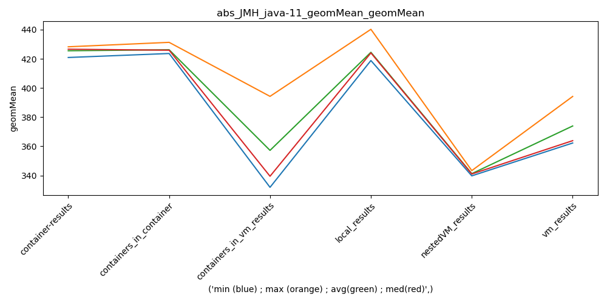
java-17
all runs of one jdk are treated as INDIVIDUAL items
geom
JMH java-17 geom where all runs of one jdk are treated as INDIVIDUAL items
MIN 405.0 container-results
MIN 421.0 containers_in_container
MIN 324.0 containers_in_vm_results
MIN 416.0 local_results
MIN 332.0 nestedVM_results
MIN 355.0 vm_results
MAX 426.0 container-results
MAX 425.0 containers_in_container
MAX 389.0 containers_in_vm_results
MAX 431.0 local_results
MAX 340.0 nestedVM_results
MAX 391.0 vm_results
AVG 420.53333333333336 container-results
AVG 422.6666666666667 containers_in_container
AVG 355.22727272727275 containers_in_vm_results
AVG 421.4888888888889 local_results
AVG 335.9111111111111 nestedVM_results
AVG 369.4651162790698 vm_results
MED 422.0 container-results
MED 422.0 containers_in_container
MED 334.0 containers_in_vm_results
MED 421.0 local_results
MED 336.0 nestedVM_results
MED 358.0 vm_results

geomMean of all keys (benchmark meassured relativre accuracy)
{'MIN': [405.0, 421.0, 324.0, 416.0, 332.0, 355.0], 'MAX': [426.0, 425.0, 389.0, 431.0, 340.0, 391.0], 'AVG': [420.53333333333336, 422.6666666666667, 355.22727272727275, 421.4888888888889, 335.9111111111111, 369.4651162790698], 'MED': [422.0, 422.0, 334.0, 421.0, 336.0, 358.0]}
JMH java-17 geomMean where all runs of one jdk are treated as INDIVIDUAL items
MIN 405.0 container-results
MIN 421.0 containers_in_container
MIN 324.0 containers_in_vm_results
MIN 416.0 local_results
MIN 332.0 nestedVM_results
MIN 355.0 vm_results
MAX 426.0 container-results
MAX 425.0 containers_in_container
MAX 389.0 containers_in_vm_results
MAX 431.0 local_results
MAX 340.0 nestedVM_results
MAX 391.0 vm_results
AVG 420.53333333333336 container-results
AVG 422.6666666666667 containers_in_container
AVG 355.22727272727275 containers_in_vm_results
AVG 421.4888888888889 local_results
AVG 335.9111111111111 nestedVM_results
AVG 369.4651162790698 vm_results
MED 422.0 container-results
MED 422.0 containers_in_container
MED 334.0 containers_in_vm_results
MED 421.0 local_results
MED 336.0 nestedVM_results
MED 358.0 vm_results

all runs of one jdk were made AVARAGE before processing
geom
JMH java-17 geom where all runs of one jdk were made AVARAGE before processing
MIN 415.2 container-results
MIN 421.8 containers_in_container
MIN 328.0 containers_in_vm_results
MIN 417.6 local_results
MIN 334.6 nestedVM_results
MIN 356.2 vm_results
MAX 423.4 container-results
MAX 423.2 containers_in_container
MAX 387.8 containers_in_vm_results
MAX 425.4 local_results
MAX 337.2 nestedVM_results
MAX 388.5 vm_results
AVG 420.5333333333333 container-results
AVG 422.6666666666667 containers_in_container
AVG 355.9222222222222 containers_in_vm_results
AVG 421.4888888888889 local_results
AVG 335.9111111111111 nestedVM_results
AVG 370.27777777777777 vm_results
MED 421.6 container-results
MED 422.8 containers_in_container
MED 333.0 containers_in_vm_results
MED 422.0 local_results
MED 335.2 nestedVM_results
MED 357.2 vm_results
geomMean of all keys (benchmark meassured relativre accuracy)
{'MIN': [415.2, 421.8, 328.0, 417.6, 334.6, 356.2], 'MAX': [423.4, 423.2, 387.8, 425.4, 337.2, 388.5], 'AVG': [420.5333333333333, 422.6666666666667, 355.9222222222222, 421.4888888888889, 335.9111111111111, 370.27777777777777], 'MED': [421.6, 422.8, 333.0, 422.0, 335.2, 357.2]}
JMH java-17 geomMean where all runs of one jdk were made AVARAGE before processing
MIN 415.2 container-results
MIN 421.8 containers_in_container
MIN 328.0 containers_in_vm_results
MIN 417.6 local_results
MIN 334.6 nestedVM_results
MIN 356.2 vm_results
MAX 423.4 container-results
MAX 423.2 containers_in_container
MAX 387.8 containers_in_vm_results
MAX 425.4 local_results
MAX 337.2 nestedVM_results
MAX 388.5 vm_results
AVG 420.5333333333333 container-results
AVG 422.6666666666667 containers_in_container
AVG 355.9222222222222 containers_in_vm_results
AVG 421.4888888888889 local_results
AVG 335.9111111111111 nestedVM_results
AVG 370.27777777777777 vm_results
MED 421.6 container-results
MED 422.8 containers_in_container
MED 333.0 containers_in_vm_results
MED 422.0 local_results
MED 335.2 nestedVM_results
MED 357.2 vm_results
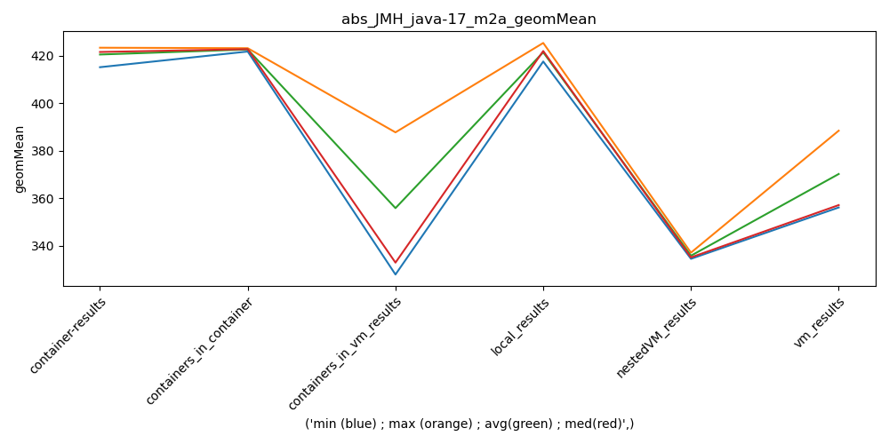
all runs of one jdk were made MEDIAN before processing
geom
JMH java-17 geom where all runs of one jdk were made MEDIAN before processing
MIN 417.0 container-results
MIN 422.0 containers_in_container
MIN 327.0 containers_in_vm_results
MIN 417.0 local_results
MIN 335.0 nestedVM_results
MIN 356.0 vm_results
MAX 424.0 container-results
MAX 423.0 containers_in_container
MAX 388.0 containers_in_vm_results
MAX 425.0 local_results
MAX 337.0 nestedVM_results
MAX 388.0 vm_results
AVG 421.55555555555554 container-results
AVG 422.55555555555554 containers_in_container
AVG 356.0 containers_in_vm_results
AVG 421.1111111111111 local_results
AVG 336.0 nestedVM_results
AVG 370.1111111111111 vm_results
MED 422.0 container-results
MED 423.0 containers_in_container
MED 333.0 containers_in_vm_results
MED 420.0 local_results
MED 336.0 nestedVM_results
MED 358.0 vm_results
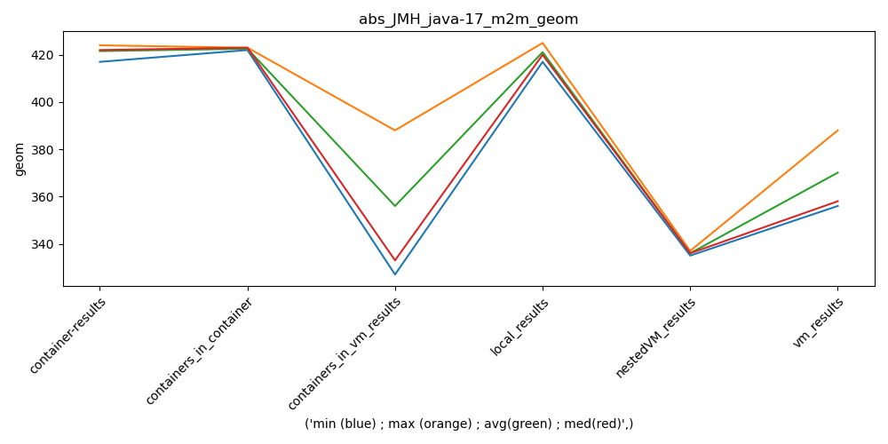
geomMean of all keys (benchmark meassured relativre accuracy)
{'MIN': [417.0, 422.0, 327.0, 417.0, 335.0, 356.0], 'MAX': [424.0, 423.0, 388.0, 425.0, 337.0, 388.0], 'AVG': [421.55555555555554, 422.55555555555554, 356.0, 421.1111111111111, 336.0, 370.1111111111111], 'MED': [422.0, 423.0, 333.0, 420.0, 336.0, 358.0]}
JMH java-17 geomMean where all runs of one jdk were made MEDIAN before processing
MIN 417.0 container-results
MIN 422.0 containers_in_container
MIN 327.0 containers_in_vm_results
MIN 417.0 local_results
MIN 335.0 nestedVM_results
MIN 356.0 vm_results
MAX 424.0 container-results
MAX 423.0 containers_in_container
MAX 388.0 containers_in_vm_results
MAX 425.0 local_results
MAX 337.0 nestedVM_results
MAX 388.0 vm_results
AVG 421.55555555555554 container-results
AVG 422.55555555555554 containers_in_container
AVG 356.0 containers_in_vm_results
AVG 421.1111111111111 local_results
AVG 336.0 nestedVM_results
AVG 370.1111111111111 vm_results
MED 422.0 container-results
MED 423.0 containers_in_container
MED 333.0 containers_in_vm_results
MED 420.0 local_results
MED 336.0 nestedVM_results
MED 358.0 vm_results

geomMean of all metrics from geomMean of all keys
{'MIN': [412.36595975465457, 421.5997785309936, 326.32889887271926, 416.86614408755827, 333.8640129114271, 355.73294578617964], 'MAX': [424.46521265259776, 423.73237977220026, 388.2663120146508, 427.12457721592864, 338.0638979133391, 389.16445708728276], 'AVG': [420.8737983582006, 422.6296263837088, 355.7163286130931, 421.36292532201907, 335.94073812759126, 369.9511689804479], 'MED': [421.866624517033, 422.5997790552696, 333.3330002218892, 420.9992082328734, 335.7331214127291, 357.733134451979]}
JMH java-17 geomMean geomMean
MIN 412.36595975465457 container-results
MIN 421.5997785309936 containers_in_container
MIN 326.32889887271926 containers_in_vm_results
MIN 416.86614408755827 local_results
MIN 333.8640129114271 nestedVM_results
MIN 355.73294578617964 vm_results
MAX 424.46521265259776 container-results
MAX 423.73237977220026 containers_in_container
MAX 388.2663120146508 containers_in_vm_results
MAX 427.12457721592864 local_results
MAX 338.0638979133391 nestedVM_results
MAX 389.16445708728276 vm_results
AVG 420.8737983582006 container-results
AVG 422.6296263837088 containers_in_container
AVG 355.7163286130931 containers_in_vm_results
AVG 421.36292532201907 local_results
AVG 335.94073812759126 nestedVM_results
AVG 369.9511689804479 vm_results
MED 421.866624517033 container-results
MED 422.5997790552696 containers_in_container
MED 333.3330002218892 containers_in_vm_results
MED 420.9992082328734 local_results
MED 335.7331214127291 nestedVM_results
MED 357.733134451979 vm_results
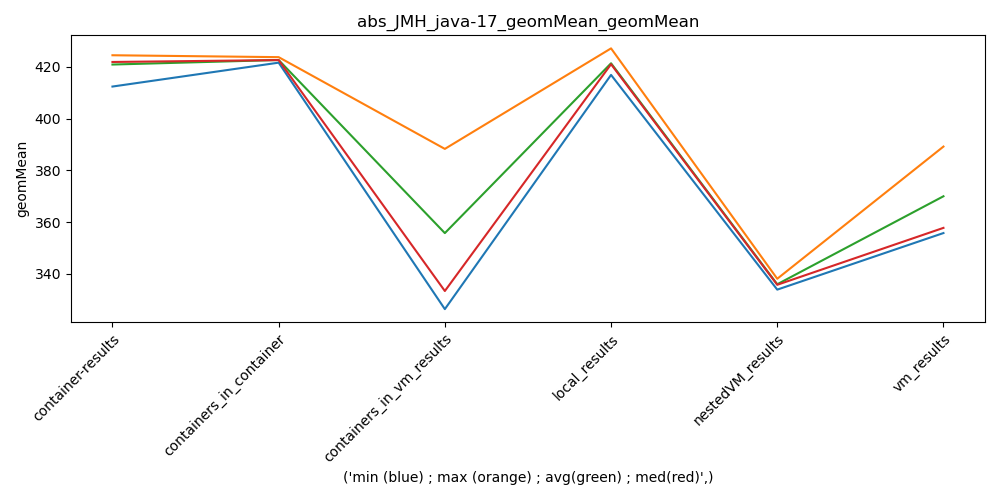
java-21
all runs of one jdk are treated as INDIVIDUAL items
geom
JMH java-21 geom where all runs of one jdk are treated as INDIVIDUAL items
MIN 427.0 container-results
MIN 421.0 containers_in_container
MIN 389.0 containers_in_vm_results
MIN 422.0 local_results
MIN 337.0 nestedVM_results
MIN 393.0 vm_results
MAX 433.0 container-results
MAX 433.0 containers_in_container
MAX 396.0 containers_in_vm_results
MAX 434.0 local_results
MAX 344.0 nestedVM_results
MAX 397.0 vm_results
AVG 430.48571428571427 container-results
AVG 429.42857142857144 containers_in_container
AVG 393.77142857142854 containers_in_vm_results
AVG 429.65714285714284 local_results
AVG 340.3235294117647 nestedVM_results
AVG 394.8 vm_results
MED 431.0 container-results
MED 430.0 containers_in_container
MED 394.0 containers_in_vm_results
MED 430.0 local_results
MED 340.0 nestedVM_results
MED 395.0 vm_results
geomMean of all keys (benchmark meassured relativre accuracy)
{'MIN': [427.0, 421.0, 389.0, 422.0, 337.0, 393.0], 'MAX': [433.0, 433.0, 396.0, 434.0, 344.0, 397.0], 'AVG': [430.48571428571427, 429.42857142857144, 393.77142857142854, 429.65714285714284, 340.3235294117647, 394.8], 'MED': [431.0, 430.0, 394.0, 430.0, 340.0, 395.0]}
JMH java-21 geomMean where all runs of one jdk are treated as INDIVIDUAL items
MIN 427.0 container-results
MIN 421.0 containers_in_container
MIN 389.0 containers_in_vm_results
MIN 422.0 local_results
MIN 337.0 nestedVM_results
MIN 393.0 vm_results
MAX 433.0 container-results
MAX 433.0 containers_in_container
MAX 396.0 containers_in_vm_results
MAX 434.0 local_results
MAX 344.0 nestedVM_results
MAX 397.0 vm_results
AVG 430.48571428571427 container-results
AVG 429.42857142857144 containers_in_container
AVG 393.77142857142854 containers_in_vm_results
AVG 429.65714285714284 local_results
AVG 340.3235294117647 nestedVM_results
AVG 394.8 vm_results
MED 431.0 container-results
MED 430.0 containers_in_container
MED 394.0 containers_in_vm_results
MED 430.0 local_results
MED 340.0 nestedVM_results
MED 395.0 vm_results
all runs of one jdk were made AVARAGE before processing
geom
JMH java-21 geom where all runs of one jdk were made AVARAGE before processing
MIN 427.8 container-results
MIN 427.2 containers_in_container
MIN 392.0 containers_in_vm_results
MIN 423.8 local_results
MIN 338.2 nestedVM_results
MIN 394.0 vm_results
MAX 431.4 container-results
MAX 432.0 containers_in_container
MAX 394.8 containers_in_vm_results
MAX 433.4 local_results
MAX 342.2 nestedVM_results
MAX 396.4 vm_results
AVG 430.4857142857143 container-results
AVG 429.42857142857144 containers_in_container
AVG 393.7714285714286 containers_in_vm_results
AVG 429.65714285714284 local_results
AVG 340.2857142857143 nestedVM_results
AVG 394.8 vm_results
MED 431.2 container-results
MED 429.4 containers_in_container
MED 394.0 containers_in_vm_results
MED 429.8 local_results
MED 340.0 nestedVM_results
MED 394.6 vm_results
geomMean of all keys (benchmark meassured relativre accuracy)
{'MIN': [427.8, 427.2, 392.0, 423.8, 338.2, 394.0], 'MAX': [431.4, 432.0, 394.8, 433.4, 342.2, 396.4], 'AVG': [430.4857142857143, 429.42857142857144, 393.7714285714286, 429.65714285714284, 340.2857142857143, 394.8], 'MED': [431.2, 429.4, 394.0, 429.8, 340.0, 394.6]}
JMH java-21 geomMean where all runs of one jdk were made AVARAGE before processing
MIN 427.8 container-results
MIN 427.2 containers_in_container
MIN 392.0 containers_in_vm_results
MIN 423.8 local_results
MIN 338.2 nestedVM_results
MIN 394.0 vm_results
MAX 431.4 container-results
MAX 432.0 containers_in_container
MAX 394.8 containers_in_vm_results
MAX 433.4 local_results
MAX 342.2 nestedVM_results
MAX 396.4 vm_results
AVG 430.4857142857143 container-results
AVG 429.42857142857144 containers_in_container
AVG 393.7714285714286 containers_in_vm_results
AVG 429.65714285714284 local_results
AVG 340.2857142857143 nestedVM_results
AVG 394.8 vm_results
MED 431.2 container-results
MED 429.4 containers_in_container
MED 394.0 containers_in_vm_results
MED 429.8 local_results
MED 340.0 nestedVM_results
MED 394.6 vm_results
all runs of one jdk were made MEDIAN before processing
geom
JMH java-21 geom where all runs of one jdk were made MEDIAN before processing
MIN 428.0 container-results
MIN 428.0 containers_in_container
MIN 391.0 containers_in_vm_results
MIN 424.0 local_results
MIN 338.0 nestedVM_results
MIN 394.0 vm_results
MAX 432.0 container-results
MAX 432.0 containers_in_container
MAX 395.0 containers_in_vm_results
MAX 433.0 local_results
MAX 342.0 nestedVM_results
MAX 397.0 vm_results
AVG 430.7142857142857 container-results
AVG 429.85714285714283 containers_in_container
AVG 393.85714285714283 containers_in_vm_results
AVG 429.7142857142857 local_results
AVG 340.2857142857143 nestedVM_results
AVG 395.0 vm_results
MED 431.0 container-results
MED 430.0 containers_in_container
MED 394.0 containers_in_vm_results
MED 430.0 local_results
MED 340.0 nestedVM_results
MED 395.0 vm_results
geomMean of all keys (benchmark meassured relativre accuracy)
{'MIN': [428.0, 428.0, 391.0, 424.0, 338.0, 394.0], 'MAX': [432.0, 432.0, 395.0, 433.0, 342.0, 397.0], 'AVG': [430.7142857142857, 429.85714285714283, 393.85714285714283, 429.7142857142857, 340.2857142857143, 395.0], 'MED': [431.0, 430.0, 394.0, 430.0, 340.0, 395.0]}
JMH java-21 geomMean where all runs of one jdk were made MEDIAN before processing
MIN 428.0 container-results
MIN 428.0 containers_in_container
MIN 391.0 containers_in_vm_results
MIN 424.0 local_results
MIN 338.0 nestedVM_results
MIN 394.0 vm_results
MAX 432.0 container-results
MAX 432.0 containers_in_container
MAX 395.0 containers_in_vm_results
MAX 433.0 local_results
MAX 342.0 nestedVM_results
MAX 397.0 vm_results
AVG 430.7142857142857 container-results
AVG 429.85714285714283 containers_in_container
AVG 393.85714285714283 containers_in_vm_results
AVG 429.7142857142857 local_results
AVG 340.2857142857143 nestedVM_results
AVG 395.0 vm_results
MED 431.0 container-results
MED 430.0 containers_in_container
MED 394.0 containers_in_vm_results
MED 430.0 local_results
MED 340.0 nestedVM_results
MED 395.0 vm_results
geomMean of all metrics from geomMean of all keys
{'MIN': [427.59978163985215, 425.38845885770536, 390.66467413992774, 423.2657102117006, 337.73292511773485, 393.666384260454], 'MAX': [432.13282952432655, 432.33307646194095, 395.266318291884, 433.4664718841624, 342.7321546793352, 396.7998991596495], 'AVG': [430.56189128113925, 429.57138107376085, 393.79999792715313, 429.67618963183105, 340.29831886083724, 394.8666554123757], 'MED': [431.066656357388, 429.79990690456583, 393.9999999999999, 429.9333229947443, 339.9999999999999, 394.8666216342967]}
JMH java-21 geomMean geomMean
MIN 427.59978163985215 container-results
MIN 425.38845885770536 containers_in_container
MIN 390.66467413992774 containers_in_vm_results
MIN 423.2657102117006 local_results
MIN 337.73292511773485 nestedVM_results
MIN 393.666384260454 vm_results
MAX 432.13282952432655 container-results
MAX 432.33307646194095 containers_in_container
MAX 395.266318291884 containers_in_vm_results
MAX 433.4664718841624 local_results
MAX 342.7321546793352 nestedVM_results
MAX 396.7998991596495 vm_results
AVG 430.56189128113925 container-results
AVG 429.57138107376085 containers_in_container
AVG 393.79999792715313 containers_in_vm_results
AVG 429.67618963183105 local_results
AVG 340.29831886083724 nestedVM_results
AVG 394.8666554123757 vm_results
MED 431.066656357388 container-results
MED 429.79990690456583 containers_in_container
MED 393.9999999999999 containers_in_vm_results
MED 429.9333229947443 local_results
MED 339.9999999999999 nestedVM_results
MED 394.8666216342967 vm_results
geomMean of all benchamrks from geomMean of all metrics and all keys
{'MIN': [124.20550070293791, 125.10498245384629, 106.61959731006701, 124.41226749934114, 104.45309169738091, 111.88466603642821], 'MAX': [128.00786127652438, 128.1375764682812, 119.36837288710659, 129.3046135386669, 106.73727832124975, 119.46825678903063], 'AVG': [127.07328434584919, 127.16424923930443, 112.46048637253593, 127.0476370019679, 106.0369097628179, 115.4745804129475], 'MED': [127.49680793718906, 127.3557006926354, 109.31103777555592, 127.2060897709535, 106.14062212258469, 113.72248786028482]}
JMH geomMean geomMean geomMean
MIN 124.20550070293791 container-results
MIN 125.10498245384629 containers_in_container
MIN 106.61959731006701 containers_in_vm_results
MIN 124.41226749934114 local_results
MIN 104.45309169738091 nestedVM_results
MIN 111.88466603642821 vm_results
MAX 128.00786127652438 container-results
MAX 128.1375764682812 containers_in_container
MAX 119.36837288710659 containers_in_vm_results
MAX 129.3046135386669 local_results
MAX 106.73727832124975 nestedVM_results
MAX 119.46825678903063 vm_results
AVG 127.07328434584919 container-results
AVG 127.16424923930443 containers_in_container
AVG 112.46048637253593 containers_in_vm_results
AVG 127.0476370019679 local_results
AVG 106.0369097628179 nestedVM_results
AVG 115.4745804129475 vm_results
MED 127.49680793718906 container-results
MED 127.3557006926354 containers_in_container
MED 109.31103777555592 containers_in_vm_results
MED 127.2060897709535 local_results
MED 106.14062212258469 nestedVM_results
MED 113.72248786028482 vm_results
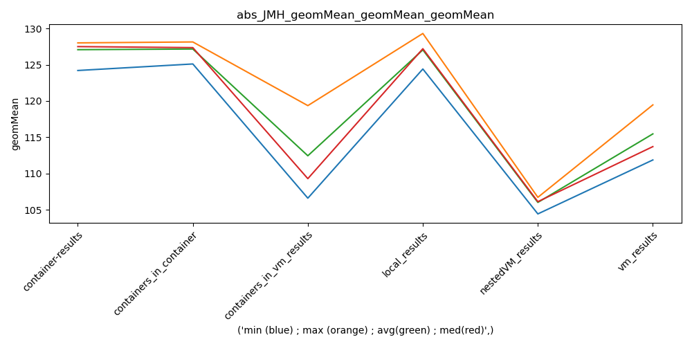
RADARGUNs1
java-1.8.0
all runs of one jdk are treated as INDIVIDUAL items
BasicOperations.Put.Throughput=
RADARGUNs1 java-1.8.0 BasicOperations.Put.Throughput= where all runs of one jdk are treated as INDIVIDUAL items
MIN 662072.0 container-results
MIN 672844.0 containers_in_container
MIN 522504.0 containers_in_vm_results
MIN 689797.0 local_results
MIN 170062.0 nestedVM_results
MIN 510215.0 vm_results
MAX 828751.0 container-results
MAX 824080.0 containers_in_container
MAX 656394.0 containers_in_vm_results
MAX 823633.0 local_results
MAX 181659.0 nestedVM_results
MAX 667501.0 vm_results
AVG 768323.94 container-results
AVG 773666.92 containers_in_container
AVG 584579.56 containers_in_vm_results
AVG 767941.9230769231 local_results
AVG 175899.0 nestedVM_results
AVG 582987.28 vm_results
MED 777021.0 container-results
MED 786501.0 containers_in_container
MED 578652.0 containers_in_vm_results
MED 772049.0 local_results
MED 175719.0 nestedVM_results
MED 572819.0 vm_results
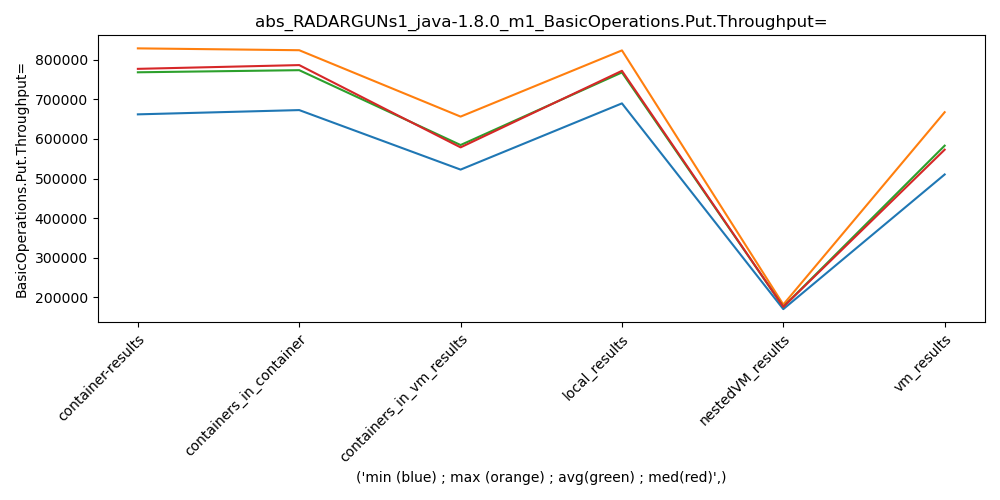
BasicOperations.Get.Throughput=
RADARGUNs1 java-1.8.0 BasicOperations.Get.Throughput= where all runs of one jdk are treated as INDIVIDUAL items
MIN 2648167.0 container-results
MIN 2691672.0 containers_in_container
MIN 2089654.0 containers_in_vm_results
MIN 2759139.0 local_results
MIN 680218.0 nestedVM_results
MIN 2040746.0 vm_results
MAX 3315154.0 container-results
MAX 3296719.0 containers_in_container
MAX 2625739.0 containers_in_vm_results
MAX 3294459.0 local_results
MAX 726476.0 nestedVM_results
MAX 2669630.0 vm_results
AVG 3073262.86 container-results
AVG 3094655.68 containers_in_container
AVG 2338326.38 containers_in_vm_results
AVG 3071751.1794871795 local_results
AVG 703589.06 nestedVM_results
AVG 2331949.06 vm_results
MED 3107951.0 container-results
MED 3145826.0 containers_in_container
MED 2314771.0 containers_in_vm_results
MED 3088055.0 local_results
MED 702953.0 nestedVM_results
MED 2291161.0 vm_results
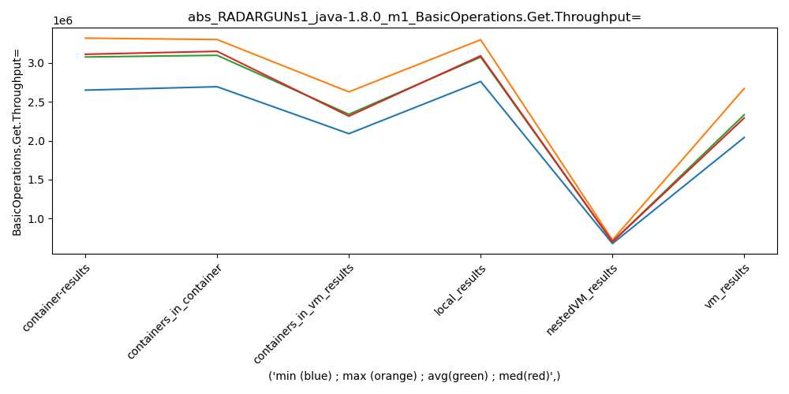
geomMean of all keys (benchmark meassured relativre accuracy)
{'MIN': [1324113.7496544623, 1345761.9979654648, 1044917.4960809107, 1379581.749945613, 340116.49991730775, 1020401.4996019949], 'MAX': [1657539.499575802, 1648259.7469816462, 1312828.7493675633, 1647247.7498989033, 363277.99779782974, 1334908.4967255245], 'AVG': [1536639.6549779873, 1547330.8399970918, 1169161.1549982291, 1535879.7179431699, 351796.26499572163, 1165974.545], 'MED': [1554008.749644287, 1572957.4993705328, 1157344.7492825983, 1544062.749597632, 351457.24947281997, 1145609.2496392475]}
RADARGUNs1 java-1.8.0 geomMean where all runs of one jdk are treated as INDIVIDUAL items
MIN 1324113.7496544623 container-results
MIN 1345761.9979654648 containers_in_container
MIN 1044917.4960809107 containers_in_vm_results
MIN 1379581.749945613 local_results
MIN 340116.49991730775 nestedVM_results
MIN 1020401.4996019949 vm_results
MAX 1657539.499575802 container-results
MAX 1648259.7469816462 containers_in_container
MAX 1312828.7493675633 containers_in_vm_results
MAX 1647247.7498989033 local_results
MAX 363277.99779782974 nestedVM_results
MAX 1334908.4967255245 vm_results
AVG 1536639.6549779873 container-results
AVG 1547330.8399970918 containers_in_container
AVG 1169161.1549982291 containers_in_vm_results
AVG 1535879.7179431699 local_results
AVG 351796.26499572163 nestedVM_results
AVG 1165974.545 vm_results
MED 1554008.749644287 container-results
MED 1572957.4993705328 containers_in_container
MED 1157344.7492825983 containers_in_vm_results
MED 1544062.749597632 local_results
MED 351457.24947281997 nestedVM_results
MED 1145609.2496392475 vm_results
all runs of one jdk were made AVARAGE before processing
BasicOperations.Put.Throughput=
RADARGUNs1 java-1.8.0 BasicOperations.Put.Throughput= where all runs of one jdk were made AVARAGE before processing
MIN 715324.8 container-results
MIN 730686.2 containers_in_container
MIN 543344.0 containers_in_vm_results
MIN 730628.0 local_results
MIN 173764.6 nestedVM_results
MIN 549914.4 vm_results
MAX 795777.4 container-results
MAX 810584.4 containers_in_container
MAX 639649.6 containers_in_vm_results
MAX 806139.8 local_results
MAX 178661.8 nestedVM_results
MAX 637539.6 vm_results
AVG 768323.9400000001 container-results
AVG 773666.92 containers_in_container
AVG 584579.5599999999 containers_in_vm_results
AVG 767422.96875 local_results
AVG 175899.0 nestedVM_results
AVG 582987.28 vm_results
MED 782440.2 container-results
MED 781297.2 containers_in_container
MED 573935.4 containers_in_vm_results
MED 780724.2 local_results
MED 175582.8 nestedVM_results
MED 566624.0 vm_results
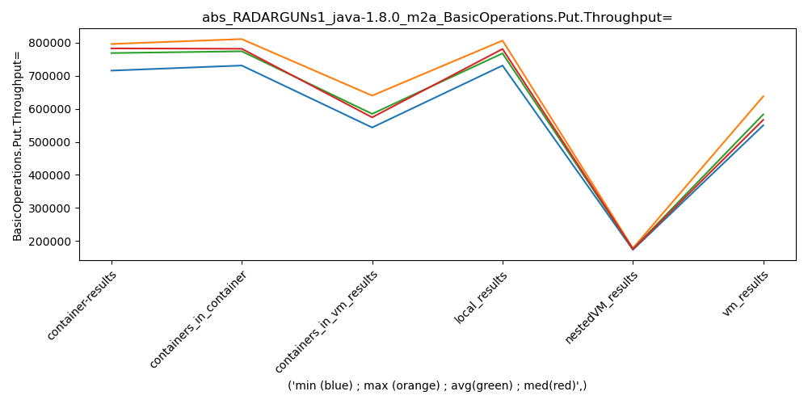
BasicOperations.Get.Throughput=
RADARGUNs1 java-1.8.0 BasicOperations.Get.Throughput= where all runs of one jdk were made AVARAGE before processing
MIN 2861303.6 container-results
MIN 2922637.0 containers_in_container
MIN 2173362.8 containers_in_vm_results
MIN 2922411.2 local_results
MIN 695045.6 nestedVM_results
MIN 2199656.2 vm_results
MAX 3182983.2 container-results
MAX 3242323.6 containers_in_container
MAX 2558582.4 containers_in_vm_results
MAX 3224544.0 local_results
MAX 714668.2 nestedVM_results
MAX 2550127.6 vm_results
AVG 3073262.8600000003 container-results
AVG 3094655.68 containers_in_container
AVG 2338326.38 containers_in_vm_results
AVG 3069674.925 local_results
AVG 703589.0599999999 nestedVM_results
AVG 2331949.06 vm_results
MED 3129815.4 container-results
MED 3125190.8 containers_in_container
MED 2295744.2 containers_in_vm_results
MED 3122844.6 local_results
MED 702304.2 nestedVM_results
MED 2266454.2 vm_results

geomMean of all keys (benchmark meassured relativre accuracy)
{'MIN': [1430650.6999995771, 1461345.4497514952, 1086684.6999949894, 1461230.7997827039, 347525.9999852673, 1099828.4499999445], 'MAX': [1591523.199686288, 1621165.299996222, 1279295.1999937466, 1612275.799995522, 357328.84996143257, 1275071.4999767502], 'AVG': [1536639.6549779875, 1547330.8399970918, 1169161.154998229, 1534841.6999941503, 351796.26499572163, 1165974.545], 'MED': [1564894.0499404678, 1562594.89999992, 1147871.449999816, 1561435.349945466, 351158.8499351255, 1133237.5499518183]}
RADARGUNs1 java-1.8.0 geomMean where all runs of one jdk were made AVARAGE before processing
MIN 1430650.6999995771 container-results
MIN 1461345.4497514952 containers_in_container
MIN 1086684.6999949894 containers_in_vm_results
MIN 1461230.7997827039 local_results
MIN 347525.9999852673 nestedVM_results
MIN 1099828.4499999445 vm_results
MAX 1591523.199686288 container-results
MAX 1621165.299996222 containers_in_container
MAX 1279295.1999937466 containers_in_vm_results
MAX 1612275.799995522 local_results
MAX 357328.84996143257 nestedVM_results
MAX 1275071.4999767502 vm_results
AVG 1536639.6549779875 container-results
AVG 1547330.8399970918 containers_in_container
AVG 1169161.154998229 containers_in_vm_results
AVG 1534841.6999941503 local_results
AVG 351796.26499572163 nestedVM_results
AVG 1165974.545 vm_results
MED 1564894.0499404678 container-results
MED 1562594.89999992 containers_in_container
MED 1147871.449999816 containers_in_vm_results
MED 1561435.349945466 local_results
MED 351158.8499351255 nestedVM_results
MED 1133237.5499518183 vm_results

all runs of one jdk were made MEDIAN before processing
BasicOperations.Put.Throughput=
RADARGUNs1 java-1.8.0 BasicOperations.Put.Throughput= where all runs of one jdk were made MEDIAN before processing
MIN 696475.0 container-results
MIN 695902.0 containers_in_container
MIN 544648.0 containers_in_vm_results
MIN 730968.0 local_results
MIN 173540.0 nestedVM_results
MIN 545652.0 vm_results
MAX 809890.0 container-results
MAX 814689.0 containers_in_container
MAX 643471.0 containers_in_vm_results
MAX 806079.0 local_results
MAX 178575.0 nestedVM_results
MAX 653093.0 vm_results
AVG 771853.3 container-results
AVG 775750.9 containers_in_container
AVG 587298.3 containers_in_vm_results
AVG 773362.875 local_results
AVG 175931.9 nestedVM_results
AVG 587496.3 vm_results
MED 781733.0 container-results
MED 794195.0 containers_in_container
MED 576334.0 containers_in_vm_results
MED 788542.0 local_results
MED 175958.0 nestedVM_results
MED 580449.0 vm_results

BasicOperations.Get.Throughput=
RADARGUNs1 java-1.8.0 BasicOperations.Get.Throughput= where all runs of one jdk were made MEDIAN before processing
MIN 2785919.0 container-results
MIN 2783345.0 containers_in_container
MIN 2178538.0 containers_in_vm_results
MIN 2923879.0 local_results
MIN 694222.0 nestedVM_results
MIN 2182818.0 vm_results
MAX 3239430.0 container-results
MAX 3258521.0 containers_in_container
MAX 2573662.0 containers_in_vm_results
MAX 3224131.0 local_results
MAX 714315.0 nestedVM_results
MAX 2612401.0 vm_results
AVG 3087319.1 container-results
AVG 3102960.3 containers_in_container
AVG 2349197.8 containers_in_vm_results
AVG 3093346.125 local_results
AVG 703711.7 nestedVM_results
AVG 2350084.0 vm_results
MED 3126426.0 container-results
MED 3176762.0 containers_in_container
MED 2305500.0 containers_in_vm_results
MED 3154108.0 local_results
MED 703736.0 nestedVM_results
MED 2321928.0 vm_results

geomMean of all keys (benchmark meassured relativre accuracy)
{'MIN': [1392954.7499919012, 1391738.2484468839, 1089282.499916344, 1461937.7499989525, 347095.4996539137, 1091356.4987372367], 'MAX': [1619747.499673946, 1629319.2489407961, 1286886.498803216, 1612111.7493365651, 357153.7499803131, 1306193.2499798795], 'AVG': [1543683.074820745, 1551490.9749622361, 1174597.749999437, 1546699.4060256535, 351859.824977547, 1175017.299740391], 'MED': [1563339.4948820297, 1588385.4999936256, 1152708.999270848, 1577068.999928665, 351891.99918156705, 1160930.99953098]}
RADARGUNs1 java-1.8.0 geomMean where all runs of one jdk were made MEDIAN before processing
MIN 1392954.7499919012 container-results
MIN 1391738.2484468839 containers_in_container
MIN 1089282.499916344 containers_in_vm_results
MIN 1461937.7499989525 local_results
MIN 347095.4996539137 nestedVM_results
MIN 1091356.4987372367 vm_results
MAX 1619747.499673946 container-results
MAX 1629319.2489407961 containers_in_container
MAX 1286886.498803216 containers_in_vm_results
MAX 1612111.7493365651 local_results
MAX 357153.7499803131 nestedVM_results
MAX 1306193.2499798795 vm_results
AVG 1543683.074820745 container-results
AVG 1551490.9749622361 containers_in_container
AVG 1174597.749999437 containers_in_vm_results
AVG 1546699.4060256535 local_results
AVG 351859.824977547 nestedVM_results
AVG 1175017.299740391 vm_results
MED 1563339.4948820297 container-results
MED 1588385.4999936256 containers_in_container
MED 1152708.999270848 containers_in_vm_results
MED 1577068.999928665 local_results
MED 351891.99918156705 nestedVM_results
MED 1160930.99953098 vm_results
geomMean of all metrics from geomMean of all keys
{'MIN': [1381864.0075634322, 1398812.7160153524, 1073434.0320055883, 1433722.31980795, 344895.87104723114, 1069927.1930201969], 'MAX': [1622711.7946353897, 1632875.4020098122, 1292924.1013792176, 1623794.7534283875, 359242.296308218, 1305162.2092469686], 'AVG': [1538983.8835237094, 1548716.3107396972, 1170970.5516607186, 1539130.9499364714, 351817.4503805075, 1168981.0376055317], 'MED': [1560740.018778389, 1574610.3493027175, 1152635.243214175, 1560797.459030415, 351502.5706460698, 1146536.6943028453]}
RADARGUNs1 java-1.8.0 geomMean geomMean
MIN 1381864.0075634322 container-results
MIN 1398812.7160153524 containers_in_container
MIN 1073434.0320055883 containers_in_vm_results
MIN 1433722.31980795 local_results
MIN 344895.87104723114 nestedVM_results
MIN 1069927.1930201969 vm_results
MAX 1622711.7946353897 container-results
MAX 1632875.4020098122 containers_in_container
MAX 1292924.1013792176 containers_in_vm_results
MAX 1623794.7534283875 local_results
MAX 359242.296308218 nestedVM_results
MAX 1305162.2092469686 vm_results
AVG 1538983.8835237094 container-results
AVG 1548716.3107396972 containers_in_container
AVG 1170970.5516607186 containers_in_vm_results
AVG 1539130.9499364714 local_results
AVG 351817.4503805075 nestedVM_results
AVG 1168981.0376055317 vm_results
MED 1560740.018778389 container-results
MED 1574610.3493027175 containers_in_container
MED 1152635.243214175 containers_in_vm_results
MED 1560797.459030415 local_results
MED 351502.5706460698 nestedVM_results
MED 1146536.6943028453 vm_results
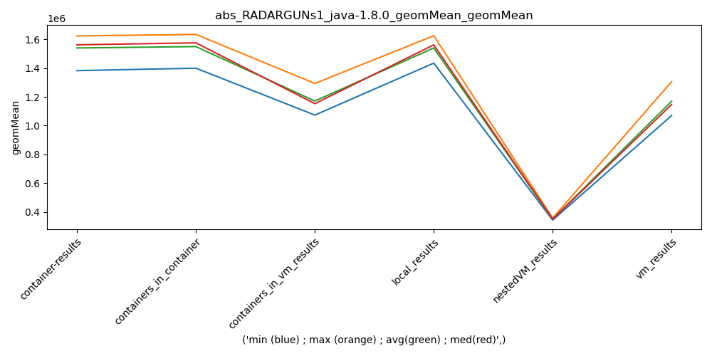
java-11
all runs of one jdk are treated as INDIVIDUAL items
BasicOperations.Put.Throughput=
RADARGUNs1 java-11 BasicOperations.Put.Throughput= where all runs of one jdk are treated as INDIVIDUAL items
MIN 702230.0 container-results
MIN 713058.0 containers_in_container
MIN 483370.0 containers_in_vm_results
MIN 727048.0 local_results
MIN 168749.0 nestedVM_results
MIN 574159.0 vm_results
MAX 832896.0 container-results
MAX 832862.0 containers_in_container
MAX 682555.0 containers_in_vm_results
MAX 838532.0 local_results
MAX 179279.0 nestedVM_results
MAX 687211.0 vm_results
AVG 792243.1818181818 container-results
AVG 796363.1730769231 containers_in_container
AVG 590029.3818181818 containers_in_vm_results
AVG 803004.6 local_results
AVG 174377.12727272726 nestedVM_results
AVG 619571.3090909091 vm_results
MED 796587.0 container-results
MED 804051.0 containers_in_container
MED 572429.0 containers_in_vm_results
MED 801753.0 local_results
MED 174707.0 nestedVM_results
MED 605098.0 vm_results
BasicOperations.Get.Throughput=
RADARGUNs1 java-11 BasicOperations.Get.Throughput= where all runs of one jdk are treated as INDIVIDUAL items
MIN 2808723.0 container-results
MIN 2852640.0 containers_in_container
MIN 1933528.0 containers_in_vm_results
MIN 2908298.0 local_results
MIN 674899.0 nestedVM_results
MIN 2296720.0 vm_results
MAX 3331523.0 container-results
MAX 3331409.0 containers_in_container
MAX 2730315.0 containers_in_vm_results
MAX 3353942.0 local_results
MAX 717179.0 nestedVM_results
MAX 2748843.0 vm_results
AVG 3168950.2363636363 container-results
AVG 3185463.0384615385 containers_in_container
AVG 2360097.109090909 containers_in_vm_results
AVG 3212023.4 local_results
AVG 697483.2181818181 nestedVM_results
AVG 2478289.9454545453 vm_results
MED 3186448.0 container-results
MED 3216167.0 containers_in_container
MED 2289654.0 containers_in_vm_results
MED 3206786.0 local_results
MED 698952.0 nestedVM_results
MED 2420158.0 vm_results

geomMean of all keys (benchmark meassured relativre accuracy)
{'MIN': [1404410.7491364484, 1426217.9963525913, 966751.9999255238, 1454122.4997585313, 337473.7491287285, 1148338.9998079836], 'MAX': [1665776.7499301939, 1665714.249971465, 1365133.749793404, 1677017.4993553287, 358573.74965409836, 1374421.7499999772], 'AVG': [1584480.7408991144, 1592728.9326902076, 1180053.6590798688, 1606010.4499995133, 348747.93176086695, 1239143.7954539862], 'MED': [1593198.9998038537, 1608092.7499733963, 1144842.499895073, 1603449.499004568, 349444.99862496246, 1210137.4985860079]}
RADARGUNs1 java-11 geomMean where all runs of one jdk are treated as INDIVIDUAL items
MIN 1404410.7491364484 container-results
MIN 1426217.9963525913 containers_in_container
MIN 966751.9999255238 containers_in_vm_results
MIN 1454122.4997585313 local_results
MIN 337473.7491287285 nestedVM_results
MIN 1148338.9998079836 vm_results
MAX 1665776.7499301939 container-results
MAX 1665714.249971465 containers_in_container
MAX 1365133.749793404 containers_in_vm_results
MAX 1677017.4993553287 local_results
MAX 358573.74965409836 nestedVM_results
MAX 1374421.7499999772 vm_results
AVG 1584480.7408991144 container-results
AVG 1592728.9326902076 containers_in_container
AVG 1180053.6590798688 containers_in_vm_results
AVG 1606010.4499995133 local_results
AVG 348747.93176086695 nestedVM_results
AVG 1239143.7954539862 vm_results
MED 1593198.9998038537 container-results
MED 1608092.7499733963 containers_in_container
MED 1144842.499895073 containers_in_vm_results
MED 1603449.499004568 local_results
MED 349444.99862496246 nestedVM_results
MED 1210137.4985860079 vm_results
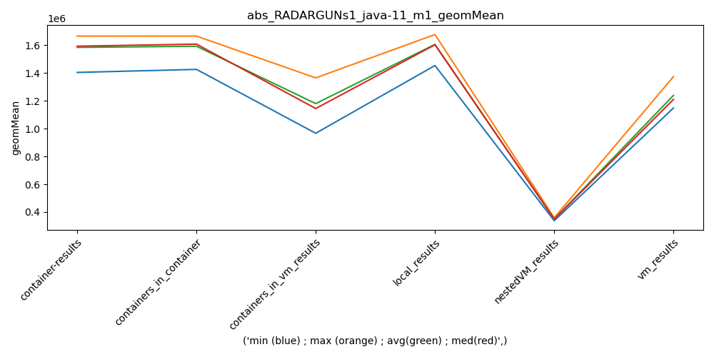
all runs of one jdk were made AVARAGE before processing
BasicOperations.Put.Throughput=
RADARGUNs1 java-11 BasicOperations.Put.Throughput= where all runs of one jdk were made AVARAGE before processing
MIN 775425.0 container-results
MIN 775930.0 containers_in_container
MIN 540041.6 containers_in_vm_results
MIN 784435.4 local_results
MIN 171766.8 nestedVM_results
MIN 588933.8 vm_results
MAX 811847.8 container-results
MAX 814313.8 containers_in_container
MAX 664038.6 containers_in_vm_results
MAX 822873.2 local_results
MAX 176890.4 nestedVM_results
MAX 665473.2 vm_results
AVG 792243.1818181818 container-results
AVG 795248.6363636364 containers_in_container
AVG 590029.3818181818 containers_in_vm_results
AVG 803004.6 local_results
AVG 174377.12727272726 nestedVM_results
AVG 619571.3090909091 vm_results
MED 793576.4 container-results
MED 794268.8 containers_in_container
MED 566093.8 containers_in_vm_results
MED 800140.6 local_results
MED 174945.6 nestedVM_results
MED 600953.2 vm_results
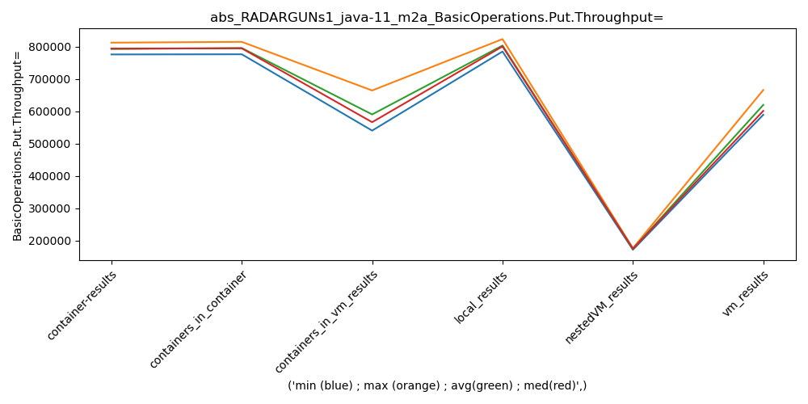
BasicOperations.Get.Throughput=
RADARGUNs1 java-11 BasicOperations.Get.Throughput= where all runs of one jdk were made AVARAGE before processing
MIN 3101648.0 container-results
MIN 3103477.5 containers_in_container
MIN 2160122.2 containers_in_vm_results
MIN 3137751.0 local_results
MIN 687070.6 nestedVM_results
MIN 2355622.6 vm_results
MAX 3247295.6 container-results
MAX 3257215.2 containers_in_container
MAX 2656156.0 containers_in_vm_results
MAX 3291557.6 local_results
MAX 707526.0 nestedVM_results
MAX 2661819.2 vm_results
AVG 3168950.2363636363 container-results
AVG 3180991.1 containers_in_container
AVG 2360097.109090909 containers_in_vm_results
AVG 3212023.4 local_results
AVG 697483.2181818183 nestedVM_results
AVG 2478289.9454545453 vm_results
MED 3174347.0 container-results
MED 3177013.2 containers_in_container
MED 2264387.4 containers_in_vm_results
MED 3200514.4 local_results
MED 699704.8 nestedVM_results
MED 2403859.0 vm_results

geomMean of all keys (benchmark meassured relativre accuracy)
{'MIN': [1550836.9999455132, 1551799.373815765, 1080072.149943475, 1568873.14999824, 343534.44999894843, 1177839.4496636118], 'MAX': [1623671.6998240994, 1628617.5999692993, 1328077.5999999398, 1645762.599920268, 353771.89988804935, 1330927.9998728104], 'AVG': [1584480.7408991144, 1590496.411363403, 1180053.6590798688, 1606010.4499995133, 348747.93176086695, 1239143.7954539862], 'MED': [1587163.1499662537, 1588522.0999243795, 1132190.6499958918, 1600269.1999550075, 349871.79946214583, 1201917.9499445043]}
RADARGUNs1 java-11 geomMean where all runs of one jdk were made AVARAGE before processing
MIN 1550836.9999455132 container-results
MIN 1551799.373815765 containers_in_container
MIN 1080072.149943475 containers_in_vm_results
MIN 1568873.14999824 local_results
MIN 343534.44999894843 nestedVM_results
MIN 1177839.4496636118 vm_results
MAX 1623671.6998240994 container-results
MAX 1628617.5999692993 containers_in_container
MAX 1328077.5999999398 containers_in_vm_results
MAX 1645762.599920268 local_results
MAX 353771.89988804935 nestedVM_results
MAX 1330927.9998728104 vm_results
AVG 1584480.7408991144 container-results
AVG 1590496.411363403 containers_in_container
AVG 1180053.6590798688 containers_in_vm_results
AVG 1606010.4499995133 local_results
AVG 348747.93176086695 nestedVM_results
AVG 1239143.7954539862 vm_results
MED 1587163.1499662537 container-results
MED 1588522.0999243795 containers_in_container
MED 1132190.6499958918 containers_in_vm_results
MED 1600269.1999550075 local_results
MED 349871.79946214583 nestedVM_results
MED 1201917.9499445043 vm_results
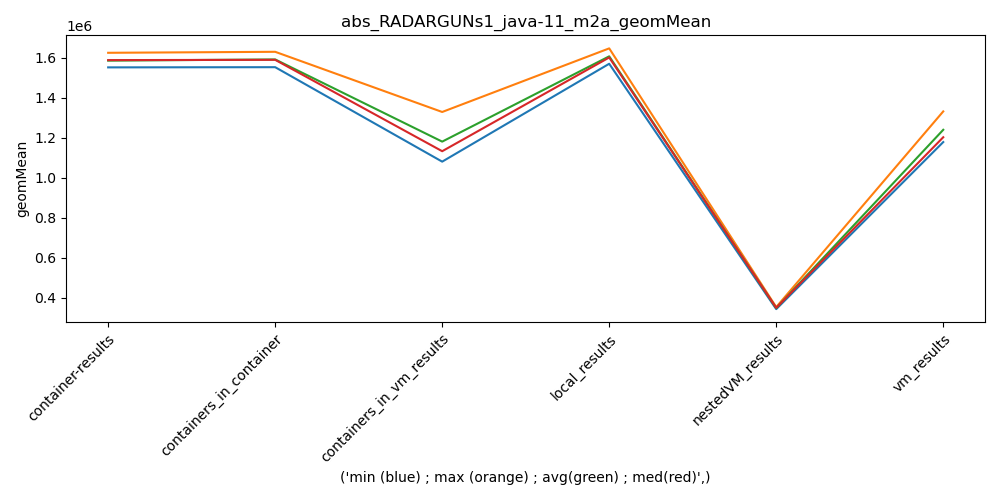
all runs of one jdk were made MEDIAN before processing
BasicOperations.Put.Throughput=
RADARGUNs1 java-11 BasicOperations.Put.Throughput= where all runs of one jdk were made MEDIAN before processing
MIN 785297.0 container-results
MIN 793193.0 containers_in_container
MIN 549809.0 containers_in_vm_results
MIN 796588.0 local_results
MIN 171959.0 nestedVM_results
MIN 584766.0 vm_results
MAX 801315.0 container-results
MAX 819387.0 containers_in_container
MAX 669193.0 containers_in_vm_results
MAX 823045.0 local_results
MAX 176396.0 nestedVM_results
MAX 671199.0 vm_results
AVG 795891.3636363636 container-results
AVG 804959.2727272727 containers_in_container
AVG 593613.0 containers_in_vm_results
AVG 806633.9090909091 local_results
AVG 174708.81818181818 nestedVM_results
AVG 621180.0 vm_results
MED 798110.0 container-results
MED 802021.0 containers_in_container
MED 565749.0 containers_in_vm_results
MED 801662.0 local_results
MED 175070.0 nestedVM_results
MED 600500.0 vm_results

BasicOperations.Get.Throughput=
RADARGUNs1 java-11 BasicOperations.Get.Throughput= where all runs of one jdk were made MEDIAN before processing
MIN 3141260.0 container-results
MIN 3172644.0 containers_in_container
MIN 2199049.0 containers_in_vm_results
MIN 3186187.0 local_results
MIN 687754.0 nestedVM_results
MIN 2338917.0 vm_results
MAX 3205051.0 container-results
MAX 3277257.0 containers_in_container
MAX 2676921.0 containers_in_vm_results
MAX 3292377.0 local_results
MAX 705473.0 nestedVM_results
MAX 2684795.0 vm_results
AVG 3183581.4545454546 container-results
AVG 3219854.6363636362 containers_in_container
AVG 2374421.090909091 containers_in_vm_results
AVG 3226530.090909091 local_results
AVG 698795.8181818182 nestedVM_results
AVG 2484683.4545454546 vm_results
MED 3192653.0 container-results
MED 3208348.0 containers_in_container
MED 2263148.0 containers_in_vm_results
MED 3206671.0 local_results
MED 700107.0 nestedVM_results
MED 2402004.0 vm_results
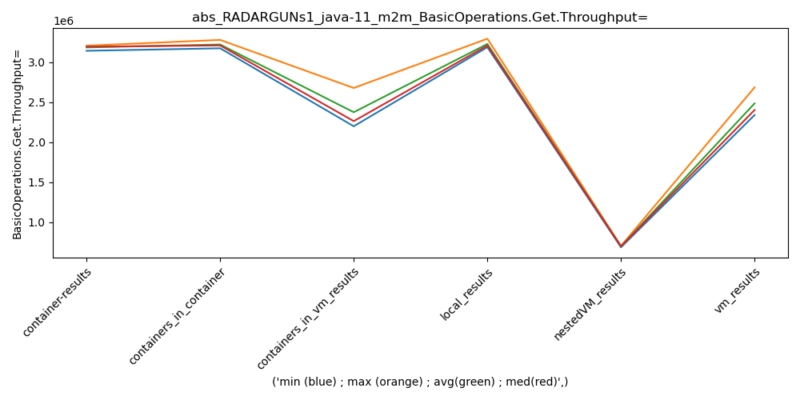
geomMean of all keys (benchmark meassured relativre accuracy)
{'MIN': [1570611.9998968556, 1586353.9996772474, 1099571.2490061752, 1593134.7494659703, 343897.49938898947, 1169495.2494225875], 'MAX': [1602577.7491482277, 1638701.248385135, 1338423.2494816429, 1646139.2492632573, 352764.248908531, 1342397.7499999767], 'AVG': [1591786.7272677016, 1609922.9318122063, 1187218.2727021254, 1613266.431817586, 349407.7725880495, 1242350.8636027689], 'MED': [1596273.249111818, 1604107.998642236, 1131535.9993619293, 1603329.7499896893, 350096.7473285063, 1201000.9999995837]}
RADARGUNs1 java-11 geomMean where all runs of one jdk were made MEDIAN before processing
MIN 1570611.9998968556 container-results
MIN 1586353.9996772474 containers_in_container
MIN 1099571.2490061752 containers_in_vm_results
MIN 1593134.7494659703 local_results
MIN 343897.49938898947 nestedVM_results
MIN 1169495.2494225875 vm_results
MAX 1602577.7491482277 container-results
MAX 1638701.248385135 containers_in_container
MAX 1338423.2494816429 containers_in_vm_results
MAX 1646139.2492632573 local_results
MAX 352764.248908531 nestedVM_results
MAX 1342397.7499999767 vm_results
AVG 1591786.7272677016 container-results
AVG 1609922.9318122063 containers_in_container
AVG 1187218.2727021254 containers_in_vm_results
AVG 1613266.431817586 local_results
AVG 349407.7725880495 nestedVM_results
AVG 1242350.8636027689 vm_results
MED 1596273.249111818 container-results
MED 1604107.998642236 containers_in_container
MED 1131535.9993619293 containers_in_vm_results
MED 1603329.7499896893 local_results
MED 350096.7473285063 nestedVM_results
MED 1201000.9999995837 vm_results
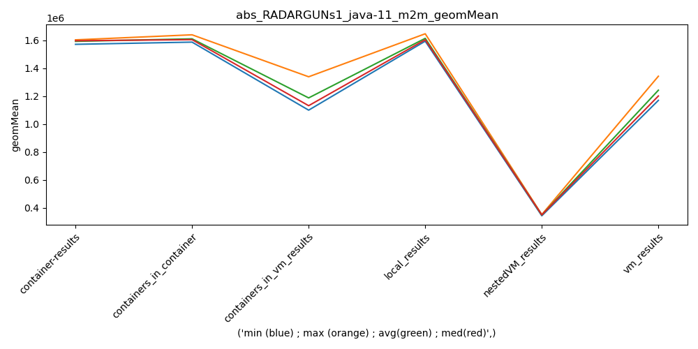
geomMean of all metrics from geomMean of all keys
{'MIN': [1506756.4872978458, 1519872.6412107805, 1047121.4936511937, 1537495.2349329619, 341622.4763132599, 1165158.1865014634], 'MAX': [1630464.6046466145, 1644270.0128348614, 1343787.8472850628, 1656241.9650401024, 355027.6113547871, 1349124.1988607014], 'AVG': [1586912.336175184, 1597692.573423156, 1182437.04658511, 1608425.47720461, 348967.74013363186, 1240211.897236605], 'MED': [1592207.3001895102, 1600218.6212114457, 1136173.2522596642, 1602348.8067532948, 349804.4106899914, 1204345.154363721]}
RADARGUNs1 java-11 geomMean geomMean
MIN 1506756.4872978458 container-results
MIN 1519872.6412107805 containers_in_container
MIN 1047121.4936511937 containers_in_vm_results
MIN 1537495.2349329619 local_results
MIN 341622.4763132599 nestedVM_results
MIN 1165158.1865014634 vm_results
MAX 1630464.6046466145 container-results
MAX 1644270.0128348614 containers_in_container
MAX 1343787.8472850628 containers_in_vm_results
MAX 1656241.9650401024 local_results
MAX 355027.6113547871 nestedVM_results
MAX 1349124.1988607014 vm_results
AVG 1586912.336175184 container-results
AVG 1597692.573423156 containers_in_container
AVG 1182437.04658511 containers_in_vm_results
AVG 1608425.47720461 local_results
AVG 348967.74013363186 nestedVM_results
AVG 1240211.897236605 vm_results
MED 1592207.3001895102 container-results
MED 1600218.6212114457 containers_in_container
MED 1136173.2522596642 containers_in_vm_results
MED 1602348.8067532948 local_results
MED 349804.4106899914 nestedVM_results
MED 1204345.154363721 vm_results
java-17
all runs of one jdk are treated as INDIVIDUAL items
BasicOperations.Put.Throughput=
RADARGUNs1 java-17 BasicOperations.Put.Throughput= where all runs of one jdk are treated as INDIVIDUAL items
MIN 691612.0 container-results
MIN 700055.0 containers_in_container
MIN 481848.0 containers_in_vm_results
MIN 700570.0 local_results
MIN 167528.0 nestedVM_results
MIN 533757.0 vm_results
MAX 854533.0 container-results
MAX 866880.0 containers_in_container
MAX 715770.0 containers_in_vm_results
MAX 866844.0 local_results
MAX 183073.0 nestedVM_results
MAX 725051.0 vm_results
AVG 800308.9333333333 container-results
AVG 816854.9333333333 containers_in_container
AVG 615988.3111111111 containers_in_vm_results
AVG 804586.4888888889 local_results
AVG 177928.55555555556 nestedVM_results
AVG 630464.911111111 vm_results
MED 820006.0 container-results
MED 827955.0 containers_in_container
MED 602073.0 containers_in_vm_results
MED 822031.0 local_results
MED 178531.0 nestedVM_results
MED 626205.0 vm_results

BasicOperations.Get.Throughput=
RADARGUNs1 java-17 BasicOperations.Get.Throughput= where all runs of one jdk are treated as INDIVIDUAL items
MIN 2766577.0 container-results
MIN 2800306.0 containers_in_container
MIN 1927367.0 containers_in_vm_results
MIN 2802128.0 local_results
MIN 670113.0 nestedVM_results
MIN 2135148.0 vm_results
MAX 3418311.0 container-results
MAX 3467426.0 containers_in_container
MAX 2863176.0 containers_in_vm_results
MAX 3467326.0 local_results
MAX 732251.0 nestedVM_results
MAX 2900286.0 vm_results
AVG 3201234.8 container-results
AVG 3267397.288888889 containers_in_container
AVG 2463994.222222222 containers_in_vm_results
AVG 3218323.1555555556 local_results
AVG 711713.9777777778 nestedVM_results
AVG 2521890.8444444444 vm_results
MED 3280090.0 container-results
MED 3311536.0 containers_in_container
MED 2408129.0 containers_in_vm_results
MED 3288422.0 local_results
MED 714078.0 nestedVM_results
MED 2504828.0 vm_results

geomMean of all keys (benchmark meassured relativre accuracy)
{'MIN': [1383256.2496240528, 1400131.4998349263, 963689.7499797328, 1401101.9994846913, 335056.24999990675, 1067543.9995784718], 'MAX': [1709110.7494141508, 1733736.499840734, 1431563.9997988215, 1733675.4999549368, 366135.7498565252, 1450122.4998550985], 'AVG': [1600617.6333333163, 1633704.2555459198, 1231986.8666240734, 1609167.2777676824, 355857.04999999475, 1260937.6221980974], 'MED': [1640028.4999169984, 1655838.998477811, 1204105.2493104578, 1644136.498312108, 357050.4998148021, 1252411.999998403]}
RADARGUNs1 java-17 geomMean where all runs of one jdk are treated as INDIVIDUAL items
MIN 1383256.2496240528 container-results
MIN 1400131.4998349263 containers_in_container
MIN 963689.7499797328 containers_in_vm_results
MIN 1401101.9994846913 local_results
MIN 335056.24999990675 nestedVM_results
MIN 1067543.9995784718 vm_results
MAX 1709110.7494141508 container-results
MAX 1733736.499840734 containers_in_container
MAX 1431563.9997988215 containers_in_vm_results
MAX 1733675.4999549368 local_results
MAX 366135.7498565252 nestedVM_results
MAX 1450122.4998550985 vm_results
AVG 1600617.6333333163 container-results
AVG 1633704.2555459198 containers_in_container
AVG 1231986.8666240734 containers_in_vm_results
AVG 1609167.2777676824 local_results
AVG 355857.04999999475 nestedVM_results
AVG 1260937.6221980974 vm_results
MED 1640028.4999169984 container-results
MED 1655838.998477811 containers_in_container
MED 1204105.2493104578 containers_in_vm_results
MED 1644136.498312108 local_results
MED 357050.4998148021 nestedVM_results
MED 1252411.999998403 vm_results
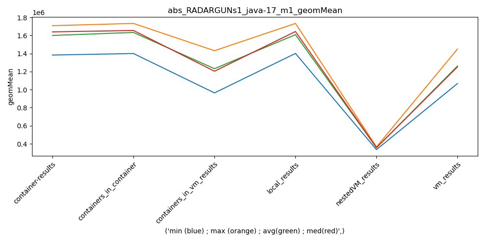
all runs of one jdk were made AVARAGE before processing
BasicOperations.Put.Throughput=
RADARGUNs1 java-17 BasicOperations.Put.Throughput= where all runs of one jdk were made AVARAGE before processing
MIN 746001.4 container-results
MIN 784344.2 containers_in_container
MIN 553518.4 containers_in_vm_results
MIN 753443.0 local_results
MIN 174311.4 nestedVM_results
MIN 571380.6 vm_results
MAX 843765.2 container-results
MAX 847964.0 containers_in_container
MAX 697707.8 containers_in_vm_results
MAX 858638.0 local_results
MAX 182431.0 nestedVM_results
MAX 698639.0 vm_results
AVG 800308.9333333333 container-results
AVG 816854.9333333333 containers_in_container
AVG 615988.3111111111 containers_in_vm_results
AVG 804586.488888889 local_results
AVG 177928.55555555556 nestedVM_results
AVG 630464.9111111112 vm_results
MED 808429.8 container-results
MED 824616.0 containers_in_container
MED 587418.6 containers_in_vm_results
MED 799043.4 local_results
MED 177064.6 nestedVM_results
MED 611807.8 vm_results
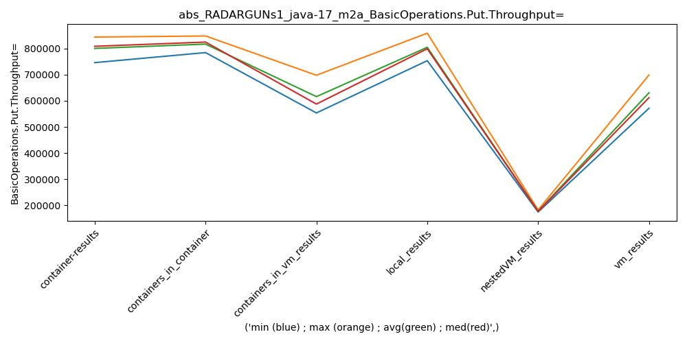
BasicOperations.Get.Throughput=
RADARGUNs1 java-17 BasicOperations.Get.Throughput= where all runs of one jdk were made AVARAGE before processing
MIN 2984045.2 container-results
MIN 3137458.2 containers_in_container
MIN 2214104.0 containers_in_vm_results
MIN 3013736.2 local_results
MIN 697231.6 nestedVM_results
MIN 2285503.4 vm_results
MAX 3374991.0 container-results
MAX 3391761.6 containers_in_container
MAX 2790881.2 containers_in_vm_results
MAX 3434464.8 local_results
MAX 729660.2 nestedVM_results
MAX 2794694.2 vm_results
AVG 3201234.8 container-results
AVG 3267397.288888889 containers_in_container
AVG 2463994.222222222 containers_in_vm_results
AVG 3218323.1555555556 local_results
AVG 711713.9777777777 nestedVM_results
AVG 2521890.8444444444 vm_results
MED 3233738.4 container-results
MED 3298506.6 containers_in_container
MED 2349744.0 containers_in_vm_results
MED 3196242.2 local_results
MED 708263.2 nestedVM_results
MED 2447311.6 vm_results
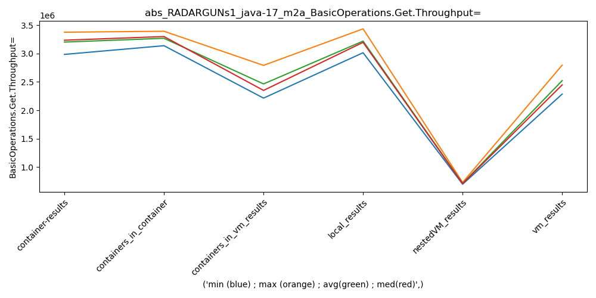
geomMean of all keys (benchmark meassured relativre accuracy)
{'MIN': [1492012.6999671552, 1568708.7498680053, 1107044.3999739126, 1506877.049973421, 348619.2999824307, 1142756.449990128], 'MAX': [1687512.9499097776, 1695904.3998357926, 1395428.0999440136, 1717254.199861628, 364846.04965135636, 1397312.5495728578], 'AVG': [1600617.6333333163, 1633704.2555459198, 1231986.8666240734, 1609167.2777676824, 355857.04999999475, 1260937.6221980974], 'MED': [1616864.3999928753, 1649242.6499656138, 1174854.59987115, 1598103.9499079776, 354130.39999796683, 1223635.6998349142]}
RADARGUNs1 java-17 geomMean where all runs of one jdk were made AVARAGE before processing
MIN 1492012.6999671552 container-results
MIN 1568708.7498680053 containers_in_container
MIN 1107044.3999739126 containers_in_vm_results
MIN 1506877.049973421 local_results
MIN 348619.2999824307 nestedVM_results
MIN 1142756.449990128 vm_results
MAX 1687512.9499097776 container-results
MAX 1695904.3998357926 containers_in_container
MAX 1395428.0999440136 containers_in_vm_results
MAX 1717254.199861628 local_results
MAX 364846.04965135636 nestedVM_results
MAX 1397312.5495728578 vm_results
AVG 1600617.6333333163 container-results
AVG 1633704.2555459198 containers_in_container
AVG 1231986.8666240734 containers_in_vm_results
AVG 1609167.2777676824 local_results
AVG 355857.04999999475 nestedVM_results
AVG 1260937.6221980974 vm_results
MED 1616864.3999928753 container-results
MED 1649242.6499656138 containers_in_container
MED 1174854.59987115 containers_in_vm_results
MED 1598103.9499079776 local_results
MED 354130.39999796683 nestedVM_results
MED 1223635.6998349142 vm_results
all runs of one jdk were made MEDIAN before processing
BasicOperations.Put.Throughput=
RADARGUNs1 java-17 BasicOperations.Put.Throughput= where all runs of one jdk were made MEDIAN before processing
MIN 733956.0 container-results
MIN 817566.0 containers_in_container
MIN 568478.0 containers_in_vm_results
MIN 721604.0 local_results
MIN 176458.0 nestedVM_results
MIN 548864.0 vm_results
MAX 852789.0 container-results
MAX 850620.0 containers_in_container
MAX 700844.0 containers_in_vm_results
MAX 858491.0 local_results
MAX 182465.0 nestedVM_results
MAX 700457.0 vm_results
AVG 806829.2222222222 container-results
AVG 830019.3333333334 containers_in_container
AVG 623189.1111111111 containers_in_vm_results
AVG 809793.2222222222 local_results
AVG 178765.66666666666 nestedVM_results
AVG 633836.3333333334 vm_results
MED 820007.0 container-results
MED 825429.0 containers_in_container
MED 585241.0 containers_in_vm_results
MED 811313.0 local_results
MED 177619.0 nestedVM_results
MED 621959.0 vm_results
BasicOperations.Get.Throughput=
RADARGUNs1 java-17 BasicOperations.Get.Throughput= where all runs of one jdk were made MEDIAN before processing
MIN 2935985.0 container-results
MIN 3270228.0 containers_in_container
MIN 2273994.0 containers_in_vm_results
MIN 2886224.0 local_results
MIN 705840.0 nestedVM_results
MIN 2195392.0 vm_results
MAX 3411192.0 container-results
MAX 3402524.0 containers_in_container
MAX 2803613.0 containers_in_vm_results
MAX 3433805.0 local_results
MAX 729789.0 nestedVM_results
MAX 2802040.0 vm_results
AVG 3227373.777777778 container-results
AVG 3320062.222222222 containers_in_container
AVG 2492840.6666666665 containers_in_vm_results
AVG 3239097.888888889 local_results
AVG 715057.3333333334 nestedVM_results
AVG 2535417.4444444445 vm_results
MED 3280509.0 container-results
MED 3301732.0 containers_in_container
MED 2340981.0 containers_in_vm_results
MED 3245305.0 local_results
MED 710453.0 nestedVM_results
MED 2487703.0 vm_results

geomMean of all keys (benchmark meassured relativre accuracy)
{'MIN': [1467952.2494481897, 1635122.9999752312, 1136976.4998151897, 1443159.9992017518, 352917.99999433296, 1097711.9998833938], 'MAX': [1705586.9999762545, 1701250.999964438, 1401747.2487477905, 1716942.2495398615, 364912.24956830376, 1400966.9989974783], 'AVG': [1613672.6666039925, 1660034.8888845902, 1246399.277599931, 1619567.6943359086, 357529.99999751383, 1267690.6943162584], 'MED': [1640134.2455918053, 1650861.999995154, 1170486.2499922842, 1622639.2499459023, 355232.24995346356, 1243884.7495556008]}
RADARGUNs1 java-17 geomMean where all runs of one jdk were made MEDIAN before processing
MIN 1467952.2494481897 container-results
MIN 1635122.9999752312 containers_in_container
MIN 1136976.4998151897 containers_in_vm_results
MIN 1443159.9992017518 local_results
MIN 352917.99999433296 nestedVM_results
MIN 1097711.9998833938 vm_results
MAX 1705586.9999762545 container-results
MAX 1701250.999964438 containers_in_container
MAX 1401747.2487477905 containers_in_vm_results
MAX 1716942.2495398615 local_results
MAX 364912.24956830376 nestedVM_results
MAX 1400966.9989974783 vm_results
AVG 1613672.6666039925 container-results
AVG 1660034.8888845902 containers_in_container
AVG 1246399.277599931 containers_in_vm_results
AVG 1619567.6943359086 local_results
AVG 357529.99999751383 nestedVM_results
AVG 1267690.6943162584 vm_results
MED 1640134.2455918053 container-results
MED 1650861.999995154 containers_in_container
MED 1170486.2499922842 containers_in_vm_results
MED 1622639.2499459023 local_results
MED 355232.24995346356 nestedVM_results
MED 1243884.7495556008 vm_results
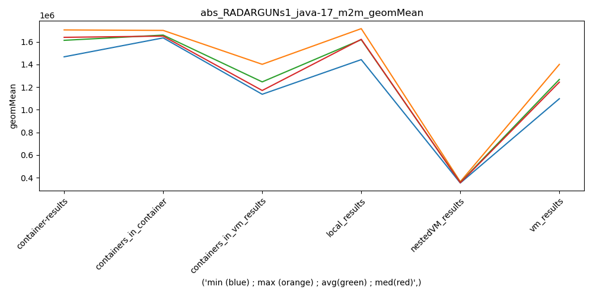
geomMean of all metrics from geomMean of all keys
{'MIN': [1446979.4497253825, 1531394.8805805899, 1066476.415745862, 1449730.7521457844, 345446.65082151303, 1102239.4709487262], 'MAX': [1700710.5236082242, 1710215.9438362294, 1409492.1073933959, 1722606.2908169776, 365297.5354322023, 1415930.8753198723], 'AVG': [1604957.533290178, 1642434.398335291, 1236772.3906798, 1612626.641074635, 356413.8284023645, 1263184.6396265076], 'MED': [1632305.5736501878, 1651978.8330891489, 1183055.0740145906, 1621517.4401481973, 355469.01215203933, 1239918.5789347575]}
RADARGUNs1 java-17 geomMean geomMean
MIN 1446979.4497253825 container-results
MIN 1531394.8805805899 containers_in_container
MIN 1066476.415745862 containers_in_vm_results
MIN 1449730.7521457844 local_results
MIN 345446.65082151303 nestedVM_results
MIN 1102239.4709487262 vm_results
MAX 1700710.5236082242 container-results
MAX 1710215.9438362294 containers_in_container
MAX 1409492.1073933959 containers_in_vm_results
MAX 1722606.2908169776 local_results
MAX 365297.5354322023 nestedVM_results
MAX 1415930.8753198723 vm_results
AVG 1604957.533290178 container-results
AVG 1642434.398335291 containers_in_container
AVG 1236772.3906798 containers_in_vm_results
AVG 1612626.641074635 local_results
AVG 356413.8284023645 nestedVM_results
AVG 1263184.6396265076 vm_results
MED 1632305.5736501878 container-results
MED 1651978.8330891489 containers_in_container
MED 1183055.0740145906 containers_in_vm_results
MED 1621517.4401481973 local_results
MED 355469.01215203933 nestedVM_results
MED 1239918.5789347575 vm_results
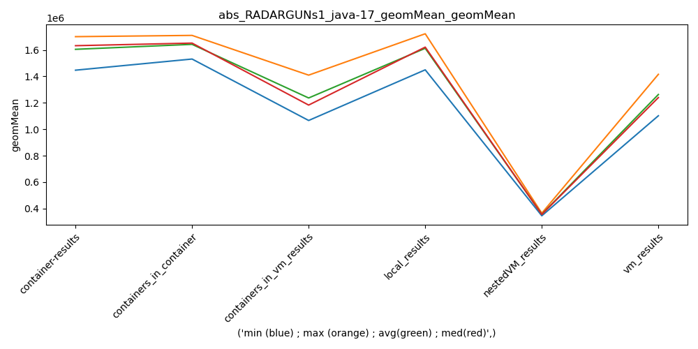
java-21
all runs of one jdk are treated as INDIVIDUAL items
BasicOperations.Put.Throughput=
RADARGUNs1 java-21 BasicOperations.Put.Throughput= where all runs of one jdk are treated as INDIVIDUAL items
MIN 760068.0 container-results
MIN 756113.0 containers_in_container
MIN 596756.0 containers_in_vm_results
MIN 739227.0 local_results
MIN 171857.0 nestedVM_results
MIN 637074.0 vm_results
MAX 860295.0 container-results
MAX 867491.0 containers_in_container
MAX 711807.0 containers_in_vm_results
MAX 873889.0 local_results
MAX 185386.0 nestedVM_results
MAX 712484.0 vm_results
AVG 813178.8285714285 container-results
AVG 810596.0 containers_in_container
AVG 682940.3428571429 containers_in_vm_results
AVG 813958.8571428572 local_results
AVG 180495.7142857143 nestedVM_results
AVG 684932.4285714285 vm_results
MED 826398.0 container-results
MED 811016.0 containers_in_container
MED 690486.0 containers_in_vm_results
MED 818295.0 local_results
MED 180534.0 nestedVM_results
MED 684955.0 vm_results
BasicOperations.Get.Throughput=
RADARGUNs1 java-21 BasicOperations.Get.Throughput= where all runs of one jdk are treated as INDIVIDUAL items
MIN 3040037.0 container-results
MIN 3024595.0 containers_in_container
MIN 2387048.0 containers_in_vm_results
MIN 2956977.0 local_results
MIN 687378.0 nestedVM_results
MIN 2548481.0 vm_results
MAX 3441304.0 container-results
MAX 3469985.0 containers_in_container
MAX 2847257.0 containers_in_vm_results
MAX 3495524.0 local_results
MAX 741475.0 nestedVM_results
MAX 2849978.0 vm_results
AVG 3252708.0285714287 container-results
AVG 3242369.942857143 containers_in_container
AVG 2731766.2285714285 containers_in_vm_results
AVG 3255836.4571428574 local_results
AVG 721994.5428571429 nestedVM_results
AVG 2739741.8 vm_results
MED 3305391.0 container-results
MED 3243910.0 containers_in_container
MED 2762058.0 containers_in_vm_results
MED 3272934.0 local_results
MED 722222.0 nestedVM_results
MED 2739762.0 vm_results
geomMean of all keys (benchmark meassured relativre accuracy)
{'MIN': [1520077.2488646754, 1512261.7495774333, 1193517.9999849186, 1478471.2498993683, 343701.4997726952, 1274194.2491606215], 'MAX': [1720620.9997207404, 1734987.2499920567, 1423621.249981539, 1747769.999981691, 370754.7495987071, 1424978.4999613152], 'AVG': [1626355.8357132657, 1621188.4857104768, 1365881.8999994602, 1627917.9714285512, 360994.3499881788, 1369867.8785680963], 'MED': [1652745.7492361008, 1621993.4995430778, 1381000.4997059198, 1636528.498844429, 361089.49935992324, 1369895.4999232606]}
RADARGUNs1 java-21 geomMean where all runs of one jdk are treated as INDIVIDUAL items
MIN 1520077.2488646754 container-results
MIN 1512261.7495774333 containers_in_container
MIN 1193517.9999849186 containers_in_vm_results
MIN 1478471.2498993683 local_results
MIN 343701.4997726952 nestedVM_results
MIN 1274194.2491606215 vm_results
MAX 1720620.9997207404 container-results
MAX 1734987.2499920567 containers_in_container
MAX 1423621.249981539 containers_in_vm_results
MAX 1747769.999981691 local_results
MAX 370754.7495987071 nestedVM_results
MAX 1424978.4999613152 vm_results
AVG 1626355.8357132657 container-results
AVG 1621188.4857104768 containers_in_container
AVG 1365881.8999994602 containers_in_vm_results
AVG 1627917.9714285512 local_results
AVG 360994.3499881788 nestedVM_results
AVG 1369867.8785680963 vm_results
MED 1652745.7492361008 container-results
MED 1621993.4995430778 containers_in_container
MED 1381000.4997059198 containers_in_vm_results
MED 1636528.498844429 local_results
MED 361089.49935992324 nestedVM_results
MED 1369895.4999232606 vm_results
all runs of one jdk were made AVARAGE before processing
BasicOperations.Put.Throughput=
RADARGUNs1 java-21 BasicOperations.Put.Throughput= where all runs of one jdk were made AVARAGE before processing
MIN 803549.2 container-results
MIN 781880.2 containers_in_container
MIN 671761.6 containers_in_vm_results
MIN 767886.2 local_results
MIN 179194.0 nestedVM_results
MIN 665708.4 vm_results
MAX 824755.4 container-results
MAX 834995.8 containers_in_container
MAX 701212.6 containers_in_vm_results
MAX 851887.6 local_results
MAX 182077.2 nestedVM_results
MAX 698163.8 vm_results
AVG 813178.8285714285 container-results
AVG 810596.0 containers_in_container
AVG 682940.3428571429 containers_in_vm_results
AVG 813958.8571428572 local_results
AVG 180495.7142857143 nestedVM_results
AVG 684932.4285714285 vm_results
MED 812309.0 container-results
MED 803544.8 containers_in_container
MED 678217.2 containers_in_vm_results
MED 813010.0 local_results
MED 180544.6 nestedVM_results
MED 690256.6 vm_results
BasicOperations.Get.Throughput=
RADARGUNs1 java-21 BasicOperations.Get.Throughput= where all runs of one jdk were made AVARAGE before processing
MIN 3214287.0 container-results
MIN 3127627.6 containers_in_container
MIN 2687075.2 containers_in_vm_results
MIN 3071506.4 local_results
MIN 716823.6 nestedVM_results
MIN 2662984.6 vm_results
MAX 3298957.8 container-results
MAX 3339945.6 containers_in_container
MAX 2804774.4 containers_in_vm_results
MAX 3407469.0 local_results
MAX 728304.4 nestedVM_results
MAX 2792584.8 vm_results
AVG 3252708.0285714283 container-results
AVG 3242369.942857143 containers_in_container
AVG 2731766.228571429 containers_in_vm_results
AVG 3255836.457142857 local_results
AVG 721994.5428571429 nestedVM_results
AVG 2739741.8000000003 vm_results
MED 3249219.2 container-results
MED 3214265.4 containers_in_container
MED 2712998.0 containers_in_vm_results
MED 3252013.0 local_results
MED 722231.4 nestedVM_results
MED 2761023.0 vm_results
geomMean of all keys (benchmark meassured relativre accuracy)
{'MIN': [1607120.9498417971, 1563787.099772063, 1343530.3999807076, 1535762.7999699952, 358399.89980244136, 1331454.5494648474], 'MAX': [1649494.8499228847, 1669982.1999735448, 1402406.1998712926, 1703754.8498784676, 364153.2999983386, 1396309.999889079], 'AVG': [1626355.8357132657, 1621188.4857104768, 1365881.8999994604, 1627917.971428551, 360994.3499881788, 1369867.8785680966], 'MED': [1624613.7999945711, 1607111.1498555164, 1356466.6996154382, 1626013.2499859894, 361102.44975690765, 1380512.3499997384]}
RADARGUNs1 java-21 geomMean where all runs of one jdk were made AVARAGE before processing
MIN 1607120.9498417971 container-results
MIN 1563787.099772063 containers_in_container
MIN 1343530.3999807076 containers_in_vm_results
MIN 1535762.7999699952 local_results
MIN 358399.89980244136 nestedVM_results
MIN 1331454.5494648474 vm_results
MAX 1649494.8499228847 container-results
MAX 1669982.1999735448 containers_in_container
MAX 1402406.1998712926 containers_in_vm_results
MAX 1703754.8498784676 local_results
MAX 364153.2999983386 nestedVM_results
MAX 1396309.999889079 vm_results
AVG 1626355.8357132657 container-results
AVG 1621188.4857104768 containers_in_container
AVG 1365881.8999994604 containers_in_vm_results
AVG 1627917.971428551 local_results
AVG 360994.3499881788 nestedVM_results
AVG 1369867.8785680966 vm_results
MED 1624613.7999945711 container-results
MED 1607111.1498555164 containers_in_container
MED 1356466.6996154382 containers_in_vm_results
MED 1626013.2499859894 local_results
MED 361102.44975690765 nestedVM_results
MED 1380512.3499997384 vm_results
all runs of one jdk were made MEDIAN before processing
BasicOperations.Put.Throughput=
RADARGUNs1 java-21 BasicOperations.Put.Throughput= where all runs of one jdk were made MEDIAN before processing
MIN 790487.0 container-results
MIN 778395.0 containers_in_container
MIN 678951.0 containers_in_vm_results
MIN 752370.0 local_results
MIN 179212.0 nestedVM_results
MIN 662959.0 vm_results
MAX 839308.0 container-results
MAX 840460.0 containers_in_container
MAX 707194.0 containers_in_vm_results
MAX 865255.0 local_results
MAX 182160.0 nestedVM_results
MAX 700981.0 vm_results
AVG 820602.7142857143 container-results
AVG 809324.5714285715 containers_in_container
AVG 689431.5714285715 containers_in_vm_results
AVG 817642.7142857143 local_results
AVG 180871.0 nestedVM_results
AVG 685592.5714285715 vm_results
MED 826398.0 container-results
MED 793857.0 containers_in_container
MED 690486.0 containers_in_vm_results
MED 823383.0 local_results
MED 180800.0 nestedVM_results
MED 689685.0 vm_results
BasicOperations.Get.Throughput=
RADARGUNs1 java-21 BasicOperations.Get.Throughput= where all runs of one jdk were made MEDIAN before processing
MIN 3161911.0 container-results
MIN 3113684.0 containers_in_container
MIN 2715849.0 containers_in_vm_results
MIN 3009432.0 local_results
MIN 716802.0 nestedVM_results
MIN 2651913.0 vm_results
MAX 3356972.0 container-results
MAX 3361794.0 containers_in_container
MAX 2828935.0 containers_in_vm_results
MAX 3460878.0 local_results
MAX 728668.0 nestedVM_results
MAX 2803999.0 vm_results
AVG 3282349.5714285714 container-results
AVG 3237250.285714286 containers_in_container
AVG 2757895.0 containers_in_vm_results
AVG 3270612.1428571427 local_results
AVG 723479.0 nestedVM_results
AVG 2742370.714285714 vm_results
MED 3305391.0 container-results
MED 3175476.0 containers_in_container
MED 2762058.0 containers_in_vm_results
MED 3293649.0 local_results
MED 723086.0 nestedVM_results
MED 2759068.0 vm_results
geomMean of all keys (benchmark meassured relativre accuracy)
{'MIN': [1580964.7499729397, 1556815.9997828903, 1357913.2499533982, 1504727.9999521507, 358412.4998155059, 1325937.249860264], 'MAX': [1678550.998741474, 1680908.4999606612, 1414427.7494414481, 1730474.4996358657, 364326.99993275275, 1401980.7498746193], 'AVG': [1641190.10707134, 1618637.1428126611, 1378905.320783483, 1635295.7499674275, 361740.7499978403, 1371185.2499999958], 'MED': [1652745.7492361008, 1587725.999954652, 1381000.4997059198, 1646795.249740234, 361571.4988767782, 1379451.9975628003]}
RADARGUNs1 java-21 geomMean where all runs of one jdk were made MEDIAN before processing
MIN 1580964.7499729397 container-results
MIN 1556815.9997828903 containers_in_container
MIN 1357913.2499533982 containers_in_vm_results
MIN 1504727.9999521507 local_results
MIN 358412.4998155059 nestedVM_results
MIN 1325937.249860264 vm_results
MAX 1678550.998741474 container-results
MAX 1680908.4999606612 containers_in_container
MAX 1414427.7494414481 containers_in_vm_results
MAX 1730474.4996358657 local_results
MAX 364326.99993275275 nestedVM_results
MAX 1401980.7498746193 vm_results
AVG 1641190.10707134 container-results
AVG 1618637.1428126611 containers_in_container
AVG 1378905.320783483 containers_in_vm_results
AVG 1635295.7499674275 local_results
AVG 361740.7499978403 nestedVM_results
AVG 1371185.2499999958 vm_results
MED 1652745.7492361008 container-results
MED 1587725.999954652 containers_in_container
MED 1381000.4997059198 containers_in_vm_results
MED 1646795.249740234 local_results
MED 361571.4988767782 nestedVM_results
MED 1379451.9975628003 vm_results
geomMean of all metrics from geomMean of all keys
{'MIN': [1568960.9554892173, 1544118.501353338, 1296132.793751546, 1506138.8461324698, 353436.0282028861, 1310272.5801308071], 'MAX': [1682636.2512134623, 1695056.066372208, 1413458.3563013293, 1727238.0493262073, 366398.85707360716, 1407702.0299021336], 'AVG': [1631285.634561033, 1620337.5915571868, 1370209.3155733736, 1630373.5251186178, 361242.9787132764, 1370306.8616886898], 'MED': [1643314.719086, 1605548.860717851, 1372773.6550073572, 1636423.6703604169, 361254.41309733427, 1376611.656192073]}
RADARGUNs1 java-21 geomMean geomMean
MIN 1568960.9554892173 container-results
MIN 1544118.501353338 containers_in_container
MIN 1296132.793751546 containers_in_vm_results
MIN 1506138.8461324698 local_results
MIN 353436.0282028861 nestedVM_results
MIN 1310272.5801308071 vm_results
MAX 1682636.2512134623 container-results
MAX 1695056.066372208 containers_in_container
MAX 1413458.3563013293 containers_in_vm_results
MAX 1727238.0493262073 local_results
MAX 366398.85707360716 nestedVM_results
MAX 1407702.0299021336 vm_results
AVG 1631285.634561033 container-results
AVG 1620337.5915571868 containers_in_container
AVG 1370209.3155733736 containers_in_vm_results
AVG 1630373.5251186178 local_results
AVG 361242.9787132764 nestedVM_results
AVG 1370306.8616886898 vm_results
MED 1643314.719086 container-results
MED 1605548.860717851 containers_in_container
MED 1372773.6550073572 containers_in_vm_results
MED 1636423.6703604169 local_results
MED 361254.41309733427 nestedVM_results
MED 1376611.656192073 vm_results
geomMean of all benchamrks from geomMean of all metrics and all keys
{'MIN': [86082.8376851842, 87149.90485971914, 68908.79218575756, 86394.5281836721, 27013.77306986097, 70970.08830954912], 'MAX': [94587.70357341424, 95111.32685665025, 80881.62745185664, 95639.79327615572, 27954.394473237622, 81106.16041268583], 'AVG': [91444.18910133059, 91983.88020559894, 74830.75719119249, 91769.7380245553, 27527.788551369194, 75843.36712511267], 'MED': [92208.3980787851, 92256.31112045221, 73374.99265777013, 92126.42053927503, 27521.60383526659, 74897.73902978291]}
RADARGUNs1 geomMean geomMean geomMean
MIN 86082.8376851842 container-results
MIN 87149.90485971914 containers_in_container
MIN 68908.79218575756 containers_in_vm_results
MIN 86394.5281836721 local_results
MIN 27013.77306986097 nestedVM_results
MIN 70970.08830954912 vm_results
MAX 94587.70357341424 container-results
MAX 95111.32685665025 containers_in_container
MAX 80881.62745185664 containers_in_vm_results
MAX 95639.79327615572 local_results
MAX 27954.394473237622 nestedVM_results
MAX 81106.16041268583 vm_results
AVG 91444.18910133059 container-results
AVG 91983.88020559894 containers_in_container
AVG 74830.75719119249 containers_in_vm_results
AVG 91769.7380245553 local_results
AVG 27527.788551369194 nestedVM_results
AVG 75843.36712511267 vm_results
MED 92208.3980787851 container-results
MED 92256.31112045221 containers_in_container
MED 73374.99265777013 containers_in_vm_results
MED 92126.42053927503 local_results
MED 27521.60383526659 nestedVM_results
MED 74897.73902978291 vm_results
RADARGUNs3
java-1.8.0
all runs of one jdk are treated as INDIVIDUAL items
BasicOperations.Put.Throughput=
RADARGUNs3 java-1.8.0 BasicOperations.Put.Throughput= where all runs of one jdk are treated as INDIVIDUAL items
MIN 23342.0 container-results
MIN 22160.0 containers_in_container
MIN 9014.0 containers_in_vm_results
MIN 23817.0 local_results
MIN 4813.0 nestedVM_results
MIN 10622.0 vm_results
MAX 24264.0 container-results
MAX 22989.0 containers_in_container
MAX 10405.0 containers_in_vm_results
MAX 24665.0 local_results
MAX 5478.0 nestedVM_results
MAX 13208.0 vm_results
AVG 23729.72 container-results
AVG 22532.787234042553 containers_in_container
AVG 9499.75 containers_in_vm_results
AVG 24137.8 local_results
AVG 5044.14 nestedVM_results
AVG 12096.64 vm_results
MED 23670.0 container-results
MED 22506.0 containers_in_container
MED 9312.0 containers_in_vm_results
MED 24111.0 local_results
MED 5051.0 nestedVM_results
MED 12369.0 vm_results
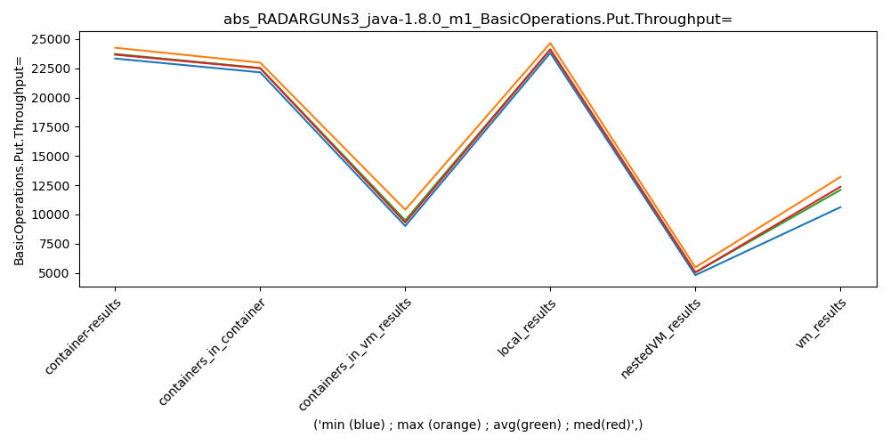
BasicOperations.Get.Throughput=
RADARGUNs3 java-1.8.0 BasicOperations.Get.Throughput= where all runs of one jdk are treated as INDIVIDUAL items
MIN 93390.0 container-results
MIN 88694.0 containers_in_container
MIN 36062.0 containers_in_vm_results
MIN 95290.0 local_results
MIN 19244.0 nestedVM_results
MIN 42488.0 vm_results
MAX 97058.0 container-results
MAX 91939.0 containers_in_container
MAX 41617.0 containers_in_vm_results
MAX 98653.0 local_results
MAX 21920.0 nestedVM_results
MAX 52884.0 vm_results
AVG 94922.82 container-results
AVG 90129.93617021276 containers_in_container
AVG 38000.145833333336 containers_in_vm_results
AVG 96548.975 local_results
AVG 20175.88 nestedVM_results
AVG 48391.88 vm_results
MED 94688.0 container-results
MED 90033.0 containers_in_container
MED 37234.0 containers_in_vm_results
MED 96430.0 local_results
MED 20205.0 nestedVM_results
MED 49495.0 vm_results

geomMean of all keys (benchmark meassured relativre accuracy)
{'MIN': [46689.49967605136, 44333.497944556555, 18029.499937602264, 47639.49968251136, 9623.9997921862, 21244.0], 'MAX': [48528.499997424195, 45973.74980355638, 20809.249986484378, 49328.24996895795, 10957.99981748494, 26428.99680275436], 'AVG': [47460.42498977859, 45065.27127557583, 18999.78645617388, 48275.0437467953, 10088.109998567621, 24194.609963444334], 'MED': [47341.99995775421, 45014.249943767805, 18620.49967106146, 48218.49987297407, 10102.24999690663, 24742.749544058355]}
RADARGUNs3 java-1.8.0 geomMean where all runs of one jdk are treated as INDIVIDUAL items
MIN 46689.49967605136 container-results
MIN 44333.497944556555 containers_in_container
MIN 18029.499937602264 containers_in_vm_results
MIN 47639.49968251136 local_results
MIN 9623.9997921862 nestedVM_results
MIN 21244.0 vm_results
MAX 48528.499997424195 container-results
MAX 45973.74980355638 containers_in_container
MAX 20809.249986484378 containers_in_vm_results
MAX 49328.24996895795 local_results
MAX 10957.99981748494 nestedVM_results
MAX 26428.99680275436 vm_results
AVG 47460.42498977859 container-results
AVG 45065.27127557583 containers_in_container
AVG 18999.78645617388 containers_in_vm_results
AVG 48275.0437467953 local_results
AVG 10088.109998567621 nestedVM_results
AVG 24194.609963444334 vm_results
MED 47341.99995775421 container-results
MED 45014.249943767805 containers_in_container
MED 18620.49967106146 containers_in_vm_results
MED 48218.49987297407 local_results
MED 10102.24999690663 nestedVM_results
MED 24742.749544058355 vm_results
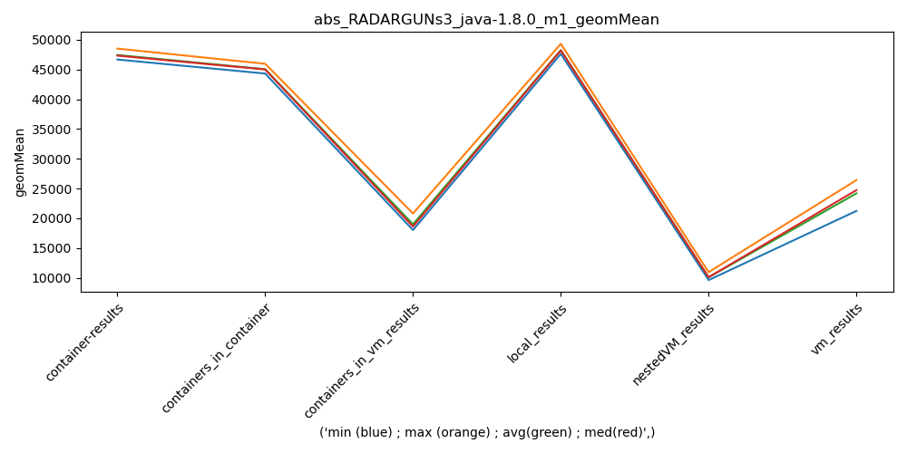
all runs of one jdk were made AVARAGE before processing
BasicOperations.Put.Throughput=
RADARGUNs3 java-1.8.0 BasicOperations.Put.Throughput= where all runs of one jdk were made AVARAGE before processing
MIN 23460.2 container-results
MIN 22320.25 containers_in_container
MIN 9073.0 containers_in_vm_results
MIN 23941.6 local_results
MIN 4927.0 nestedVM_results
MIN 10891.8 vm_results
MAX 24135.4 container-results
MAX 22870.8 containers_in_container
MAX 10220.4 containers_in_vm_results
MAX 24507.2 local_results
MAX 5172.4 nestedVM_results
MAX 12805.2 vm_results
AVG 23729.72 container-results
AVG 22529.53166666667 containers_in_container
AVG 9485.093333333334 containers_in_vm_results
AVG 24137.8 local_results
AVG 5044.14 nestedVM_results
AVG 12096.64 vm_results
MED 23653.8 container-results
MED 22521.0 containers_in_container
MED 9312.2 containers_in_vm_results
MED 24108.0 local_results
MED 5082.6 nestedVM_results
MED 12535.0 vm_results

BasicOperations.Get.Throughput=
RADARGUNs3 java-1.8.0 BasicOperations.Get.Throughput= where all runs of one jdk were made AVARAGE before processing
MIN 93850.2 container-results
MIN 89265.75 containers_in_container
MIN 36294.6 containers_in_vm_results
MIN 95757.4 local_results
MIN 19704.8 nestedVM_results
MIN 43579.0 vm_results
MAX 96547.0 container-results
MAX 91460.8 containers_in_container
MAX 40871.2 containers_in_vm_results
MAX 98020.8 local_results
MAX 20700.0 nestedVM_results
MAX 51219.2 vm_results
AVG 94922.81999999999 container-results
AVG 90116.36166666666 containers_in_container
AVG 37941.94 containers_in_vm_results
AVG 96548.975 local_results
AVG 20175.879999999997 nestedVM_results
AVG 48391.88 vm_results
MED 94625.8 container-results
MED 90078.6 containers_in_container
MED 37246.8 containers_in_vm_results
MED 96416.4 local_results
MED 20345.4 nestedVM_results
MED 50141.6 vm_results
geomMean of all keys (benchmark meassured relativre accuracy)
{'MIN': [46922.74994115328, 44636.68733718375, 18146.649988358735, 47880.949947134504, 9853.19996752324, 21786.549800278153], 'MAX': [48272.14998112266, 45735.99965716285, 20438.1998346234, 49012.399959194, 10347.399673347889, 25609.99999687622], 'AVG': [47460.42498977859, 45058.6220811728, 18970.578329290158, 48275.0437467953, 10088.109998567621, 24194.609963444334], 'MED': [47310.24992578247, 45040.64997976828, 18623.899993288196, 48212.099842259515, 10168.949308556908, 25070.399996808985]}
RADARGUNs3 java-1.8.0 geomMean where all runs of one jdk were made AVARAGE before processing
MIN 46922.74994115328 container-results
MIN 44636.68733718375 containers_in_container
MIN 18146.649988358735 containers_in_vm_results
MIN 47880.949947134504 local_results
MIN 9853.19996752324 nestedVM_results
MIN 21786.549800278153 vm_results
MAX 48272.14998112266 container-results
MAX 45735.99965716285 containers_in_container
MAX 20438.1998346234 containers_in_vm_results
MAX 49012.399959194 local_results
MAX 10347.399673347889 nestedVM_results
MAX 25609.99999687622 vm_results
AVG 47460.42498977859 container-results
AVG 45058.6220811728 containers_in_container
AVG 18970.578329290158 containers_in_vm_results
AVG 48275.0437467953 local_results
AVG 10088.109998567621 nestedVM_results
AVG 24194.609963444334 vm_results
MED 47310.24992578247 container-results
MED 45040.64997976828 containers_in_container
MED 18623.899993288196 containers_in_vm_results
MED 48212.099842259515 local_results
MED 10168.949308556908 nestedVM_results
MED 25070.399996808985 vm_results
all runs of one jdk were made MEDIAN before processing
BasicOperations.Put.Throughput=
RADARGUNs3 java-1.8.0 BasicOperations.Put.Throughput= where all runs of one jdk were made MEDIAN before processing
MIN 23425.0 container-results
MIN 22297.0 containers_in_container
MIN 9033.0 containers_in_vm_results
MIN 23942.0 local_results
MIN 4848.0 nestedVM_results
MIN 10901.0 vm_results
MAX 24143.0 container-results
MAX 22848.0 containers_in_container
MAX 10298.0 containers_in_vm_results
MAX 24458.0 local_results
MAX 5175.0 nestedVM_results
MAX 13100.0 vm_results
AVG 23731.7 container-results
AVG 22525.0 containers_in_container
AVG 9511.2 containers_in_vm_results
AVG 24135.5 local_results
AVG 5032.1 nestedVM_results
AVG 12176.8 vm_results
MED 23670.0 container-results
MED 22523.0 containers_in_container
MED 9309.0 containers_in_vm_results
MED 24114.0 local_results
MED 5083.0 nestedVM_results
MED 12614.0 vm_results
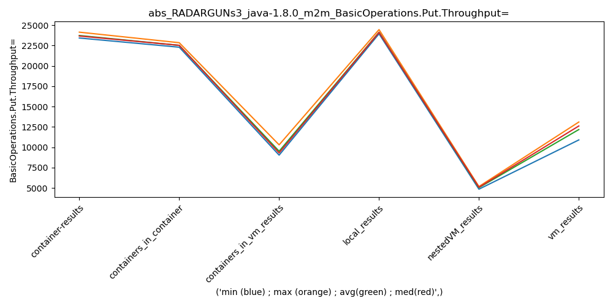
BasicOperations.Get.Throughput=
RADARGUNs3 java-1.8.0 BasicOperations.Get.Throughput= where all runs of one jdk were made MEDIAN before processing
MIN 93788.0 container-results
MIN 89164.0 containers_in_container
MIN 36140.0 containers_in_vm_results
MIN 95718.0 local_results
MIN 19400.0 nestedVM_results
MIN 43623.0 vm_results
MAX 96570.0 container-results
MAX 91381.0 containers_in_container
MAX 41188.0 containers_in_vm_results
MAX 97812.0 local_results
MAX 20719.0 nestedVM_results
MAX 52408.0 vm_results
AVG 94926.6 container-results
AVG 90094.7 containers_in_container
AVG 38045.0 containers_in_vm_results
AVG 96522.25 local_results
AVG 20125.6 nestedVM_results
AVG 48712.7 vm_results
MED 94688.0 container-results
MED 90103.0 containers_in_container
MED 37220.0 containers_in_vm_results
MED 96397.0 local_results
MED 20328.0 nestedVM_results
MED 50473.0 vm_results

geomMean of all keys (benchmark meassured relativre accuracy)
{'MIN': [46871.99483700262, 44587.99959630394, 18067.999889307062, 47871.49836802688, 9697.999793771909, 21806.749482671643], 'MAX': [48285.49999741123, 45693.24991724708, 20594.99997572226, 48910.999744433764, 10354.748910524098, 26201.999923669948], 'AVG': [47463.34999997367, 45048.67498051413, 19022.449999934288, 48266.06224745292, 10063.499975654593, 24354.97496118606], 'MED': [47341.99995775421, 45048.749916063156, 18613.99957021596, 48213.24774374778, 10164.999950811609, 25232.24964207512]}
RADARGUNs3 java-1.8.0 geomMean where all runs of one jdk were made MEDIAN before processing
MIN 46871.99483700262 container-results
MIN 44587.99959630394 containers_in_container
MIN 18067.999889307062 containers_in_vm_results
MIN 47871.49836802688 local_results
MIN 9697.999793771909 nestedVM_results
MIN 21806.749482671643 vm_results
MAX 48285.49999741123 container-results
MAX 45693.24991724708 containers_in_container
MAX 20594.99997572226 containers_in_vm_results
MAX 48910.999744433764 local_results
MAX 10354.748910524098 nestedVM_results
MAX 26201.999923669948 vm_results
AVG 47463.34999997367 container-results
AVG 45048.67498051413 containers_in_container
AVG 19022.449999934288 containers_in_vm_results
AVG 48266.06224745292 local_results
AVG 10063.499975654593 nestedVM_results
AVG 24354.97496118606 vm_results
MED 47341.99995775421 container-results
MED 45048.749916063156 containers_in_container
MED 18613.99957021596 containers_in_vm_results
MED 48213.24774374778 local_results
MED 10164.999950811609 nestedVM_results
MED 25232.24964207512 vm_results

geomMean of all metrics from geomMean of all keys
{'MIN': [46827.97428377739, 44519.19620988025, 18081.317589533563, 47797.18543149252, 9724.59874896973, 21610.852314642336], 'MAX': [48361.90662795677, 45800.833766614276, 20613.589416846735, 49083.56203517219, 10549.552274408985, 26078.037126725605], 'AVG': [47461.39997314762, 45057.5222629527, 18997.59306180566, 48272.0497279959, 10079.89997783646, 24247.947293454694], 'MED': [47331.41424696623, 45034.54753720592, 18619.465958471665, 48214.61573916239, 10145.353678832449, 25014.302548515567]}
RADARGUNs3 java-1.8.0 geomMean geomMean
MIN 46827.97428377739 container-results
MIN 44519.19620988025 containers_in_container
MIN 18081.317589533563 containers_in_vm_results
MIN 47797.18543149252 local_results
MIN 9724.59874896973 nestedVM_results
MIN 21610.852314642336 vm_results
MAX 48361.90662795677 container-results
MAX 45800.833766614276 containers_in_container
MAX 20613.589416846735 containers_in_vm_results
MAX 49083.56203517219 local_results
MAX 10549.552274408985 nestedVM_results
MAX 26078.037126725605 vm_results
AVG 47461.39997314762 container-results
AVG 45057.5222629527 containers_in_container
AVG 18997.59306180566 containers_in_vm_results
AVG 48272.0497279959 local_results
AVG 10079.89997783646 nestedVM_results
AVG 24247.947293454694 vm_results
MED 47331.41424696623 container-results
MED 45034.54753720592 containers_in_container
MED 18619.465958471665 containers_in_vm_results
MED 48214.61573916239 local_results
MED 10145.353678832449 nestedVM_results
MED 25014.302548515567 vm_results

java-11
all runs of one jdk are treated as INDIVIDUAL items
BasicOperations.Put.Throughput=
RADARGUNs3 java-11 BasicOperations.Put.Throughput= where all runs of one jdk are treated as INDIVIDUAL items
MIN 22238.0 container-results
MIN 21119.0 containers_in_container
MIN 8803.0 containers_in_vm_results
MIN 22588.0 local_results
MIN 4702.0 nestedVM_results
MIN 10667.0 vm_results
MAX 23021.0 container-results
MAX 21952.0 containers_in_container
MAX 10712.0 containers_in_vm_results
MAX 23326.0 local_results
MAX 5141.0 nestedVM_results
MAX 12570.0 vm_results
AVG 22696.036363636365 container-results
AVG 21623.854545454546 containers_in_container
AVG 9657.709090909091 containers_in_vm_results
AVG 23014.418181818182 local_results
AVG 4929.518518518518 nestedVM_results
AVG 11697.072727272727 vm_results
MED 22678.0 container-results
MED 21626.0 containers_in_container
MED 9408.0 containers_in_vm_results
MED 23040.0 local_results
MED 4905.0 nestedVM_results
MED 11724.0 vm_results
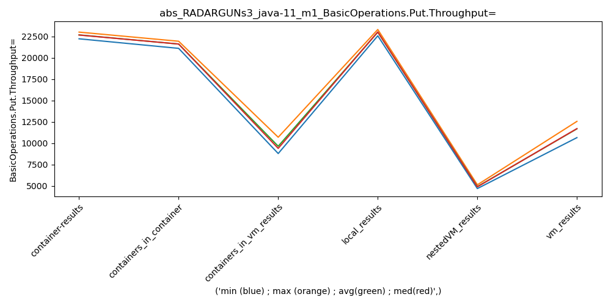
BasicOperations.Get.Throughput=
RADARGUNs3 java-11 BasicOperations.Get.Throughput= where all runs of one jdk are treated as INDIVIDUAL items
MIN 88949.0 container-results
MIN 84507.0 containers_in_container
MIN 35188.0 containers_in_vm_results
MIN 90368.0 local_results
MIN 18839.0 nestedVM_results
MIN 42697.0 vm_results
MAX 92110.0 container-results
MAX 87838.0 containers_in_container
MAX 42850.0 containers_in_vm_results
MAX 93284.0 local_results
MAX 20571.0 nestedVM_results
MAX 50291.0 vm_results
AVG 90788.10909090909 container-results
AVG 86499.6 containers_in_container
AVG 38634.05454545454 containers_in_vm_results
AVG 92057.36363636363 local_results
AVG 19723.75925925926 nestedVM_results
AVG 46790.181818181816 vm_results
MED 90728.0 container-results
MED 86504.0 containers_in_container
MED 37621.0 containers_in_vm_results
MED 92148.0 local_results
MED 19627.0 nestedVM_results
MED 46875.0 vm_results

geomMean of all keys (benchmark meassured relativre accuracy)
{'MIN': [44475.24999367626, 42245.74928912967, 17599.9989772727, 45179.9998229305, 9411.746809174161, 21341.248768523365], 'MAX': [46048.49954124456, 43911.49935950719, 21424.49999416556, 46646.99973202992, 10283.749851100036, 25142.749849608732], 'AVG': [45393.0636255481, 43248.75453281863, 19316.22271051755, 46028.75909084423, 9860.4582308998, 23394.618177042063], 'MED': [45359.99982363316, 43252.0, 18813.249799011333, 46076.99990233739, 9811.749843937116, 23442.749412131674]}
RADARGUNs3 java-11 geomMean where all runs of one jdk are treated as INDIVIDUAL items
MIN 44475.24999367626 container-results
MIN 42245.74928912967 containers_in_container
MIN 17599.9989772727 containers_in_vm_results
MIN 45179.9998229305 local_results
MIN 9411.746809174161 nestedVM_results
MIN 21341.248768523365 vm_results
MAX 46048.49954124456 container-results
MAX 43911.49935950719 containers_in_container
MAX 21424.49999416556 containers_in_vm_results
MAX 46646.99973202992 local_results
MAX 10283.749851100036 nestedVM_results
MAX 25142.749849608732 vm_results
AVG 45393.0636255481 container-results
AVG 43248.75453281863 containers_in_container
AVG 19316.22271051755 containers_in_vm_results
AVG 46028.75909084423 local_results
AVG 9860.4582308998 nestedVM_results
AVG 23394.618177042063 vm_results
MED 45359.99982363316 container-results
MED 43252.0 containers_in_container
MED 18813.249799011333 containers_in_vm_results
MED 46076.99990233739 local_results
MED 9811.749843937116 nestedVM_results
MED 23442.749412131674 vm_results
all runs of one jdk were made AVARAGE before processing
BasicOperations.Put.Throughput=
RADARGUNs3 java-11 BasicOperations.Put.Throughput= where all runs of one jdk were made AVARAGE before processing
MIN 22436.2 container-results
MIN 21355.2 containers_in_container
MIN 8972.8 containers_in_vm_results
MIN 22647.6 local_results
MIN 4829.8 nestedVM_results
MIN 11003.8 vm_results
MAX 22866.4 container-results
MAX 21784.8 containers_in_container
MAX 10505.0 containers_in_vm_results
MAX 23165.0 local_results
MAX 5026.6 nestedVM_results
MAX 12287.8 vm_results
AVG 22696.03636363636 container-results
AVG 21623.854545454546 containers_in_container
AVG 9657.709090909091 containers_in_vm_results
AVG 23014.418181818182 local_results
AVG 4930.186363636364 nestedVM_results
AVG 11697.072727272725 vm_results
MED 22709.0 container-results
MED 21635.8 containers_in_container
MED 9371.4 containers_in_vm_results
MED 23072.2 local_results
MED 4933.0 nestedVM_results
MED 11981.6 vm_results

BasicOperations.Get.Throughput=
RADARGUNs3 java-11 BasicOperations.Get.Throughput= where all runs of one jdk were made AVARAGE before processing
MIN 89725.8 container-results
MIN 85425.4 containers_in_container
MIN 35880.6 containers_in_vm_results
MIN 90610.6 local_results
MIN 19331.8 nestedVM_results
MIN 44031.0 vm_results
MAX 91466.2 container-results
MAX 87141.2 containers_in_container
MAX 42019.8 containers_in_vm_results
MAX 92641.4 local_results
MAX 20104.6 nestedVM_results
MAX 49142.8 vm_results
AVG 90788.1090909091 container-results
AVG 86499.59999999999 containers_in_container
AVG 38634.05454545454 containers_in_vm_results
AVG 92057.36363636363 local_results
AVG 19726.350000000002 nestedVM_results
AVG 46790.181818181816 vm_results
MED 90841.6 container-results
MED 86556.0 containers_in_container
MED 37481.2 containers_in_vm_results
MED 92280.6 local_results
MED 19735.6 nestedVM_results
MED 47930.0 vm_results

geomMean of all keys (benchmark meassured relativre accuracy)
{'MIN': [44867.64974856606, 42711.549984518235, 17942.949804310327, 45300.24971851701, 9662.749486559196, 22011.549645583793], 'MAX': [45732.949999754004, 43570.09999713106, 21009.949999940505, 46325.349766623454, 10052.749989928128, 24573.499910269195], 'AVG': [45393.0636255481, 43248.75453281863, 19316.22271051755, 46028.75909084423, 9861.773764101375, 23394.61817704206], 'MED': [45419.39997842332, 43274.79988168634, 18741.699967719043, 46142.34995446158, 9866.899958953672, 23964.09998309972]}
RADARGUNs3 java-11 geomMean where all runs of one jdk were made AVARAGE before processing
MIN 44867.64974856606 container-results
MIN 42711.549984518235 containers_in_container
MIN 17942.949804310327 containers_in_vm_results
MIN 45300.24971851701 local_results
MIN 9662.749486559196 nestedVM_results
MIN 22011.549645583793 vm_results
MAX 45732.949999754004 container-results
MAX 43570.09999713106 containers_in_container
MAX 21009.949999940505 containers_in_vm_results
MAX 46325.349766623454 local_results
MAX 10052.749989928128 nestedVM_results
MAX 24573.499910269195 vm_results
AVG 45393.0636255481 container-results
AVG 43248.75453281863 containers_in_container
AVG 19316.22271051755 containers_in_vm_results
AVG 46028.75909084423 local_results
AVG 9861.773764101375 nestedVM_results
AVG 23394.61817704206 vm_results
MED 45419.39997842332 container-results
MED 43274.79988168634 containers_in_container
MED 18741.699967719043 containers_in_vm_results
MED 46142.34995446158 local_results
MED 9866.899958953672 nestedVM_results
MED 23964.09998309972 vm_results
all runs of one jdk were made MEDIAN before processing
BasicOperations.Put.Throughput=
RADARGUNs3 java-11 BasicOperations.Put.Throughput= where all runs of one jdk were made MEDIAN before processing
MIN 22370.0 container-results
MIN 21378.0 containers_in_container
MIN 8935.0 containers_in_vm_results
MIN 22658.0 local_results
MIN 4759.0 nestedVM_results
MIN 11001.0 vm_results
MAX 22912.0 container-results
MAX 21839.0 containers_in_container
MAX 10517.0 containers_in_vm_results
MAX 23167.0 local_results
MAX 5054.0 nestedVM_results
MAX 12306.0 vm_results
AVG 22689.545454545456 container-results
AVG 21635.454545454544 containers_in_container
AVG 9673.272727272728 containers_in_vm_results
AVG 23015.0 local_results
AVG 4933.454545454545 nestedVM_results
AVG 11718.09090909091 vm_results
MED 22683.0 container-results
MED 21626.0 containers_in_container
MED 9376.0 containers_in_vm_results
MED 23048.0 local_results
MED 4956.0 nestedVM_results
MED 11983.0 vm_results

BasicOperations.Get.Throughput=
RADARGUNs3 java-11 BasicOperations.Get.Throughput= where all runs of one jdk were made MEDIAN before processing
MIN 89457.0 container-results
MIN 85469.0 containers_in_container
MIN 35749.0 containers_in_vm_results
MIN 90621.0 local_results
MIN 19036.0 nestedVM_results
MIN 44028.0 vm_results
MAX 91652.0 container-results
MAX 87372.0 containers_in_container
MAX 42054.0 containers_in_vm_results
MAX 92646.0 local_results
MAX 20236.0 nestedVM_results
MAX 49229.0 vm_results
AVG 90763.36363636363 container-results
AVG 86542.90909090909 containers_in_container
AVG 38684.72727272727 containers_in_vm_results
AVG 92056.27272727272 local_results
AVG 19744.545454545456 nestedVM_results
AVG 46877.181818181816 vm_results
MED 90782.0 container-results
MED 86504.0 containers_in_container
MED 37500.0 containers_in_vm_results
MED 92183.0 local_results
MED 19832.0 nestedVM_results
MED 47937.0 vm_results

geomMean of all keys (benchmark meassured relativre accuracy)
{'MIN': [44734.24963045653, 42745.2486482416, 17872.249858369818, 45313.249916553104, 9518.0, 22007.999182115578], 'MAX': [45824.99998908892, 43681.9998168582, 21030.499708756328, 46328.49967352709, 10112.998763967096, 24613.249968258966], 'AVG': [45380.38634514597, 43271.18181732235, 19344.45443245315, 46029.06817238626, 9869.590544731891, 23437.386332683047], 'MED': [45378.49827836968, 43252.0, 18750.999973334754, 46093.749945084746, 9913.999798265078, 23967.249967403437]}
RADARGUNs3 java-11 geomMean where all runs of one jdk were made MEDIAN before processing
MIN 44734.24963045653 container-results
MIN 42745.2486482416 containers_in_container
MIN 17872.249858369818 containers_in_vm_results
MIN 45313.249916553104 local_results
MIN 9518.0 nestedVM_results
MIN 22007.999182115578 vm_results
MAX 45824.99998908892 container-results
MAX 43681.9998168582 containers_in_container
MAX 21030.499708756328 containers_in_vm_results
MAX 46328.49967352709 local_results
MAX 10112.998763967096 nestedVM_results
MAX 24613.249968258966 vm_results
AVG 45380.38634514597 container-results
AVG 43271.18181732235 containers_in_container
AVG 19344.45443245315 containers_in_vm_results
AVG 46029.06817238626 local_results
AVG 9869.590544731891 nestedVM_results
AVG 23437.386332683047 vm_results
MED 45378.49827836968 container-results
MED 43252.0 containers_in_container
MED 18750.999973334754 containers_in_vm_results
MED 46093.749945084746 local_results
MED 9913.999798265078 nestedVM_results
MED 23967.249967403437 vm_results
geomMean of all metrics from geomMean of all keys
{'MIN': [44692.085945256375, 42566.904170361275, 17804.450342197833, 45264.460047941015, 9530.277622521648, 21784.63742177676], 'MAX': [45868.62531562609, 43720.968980336904, 21154.126742264358, 46433.37159897507, 10149.362867855989, 24775.147621383563], 'AVG': [45388.83747196582, 43256.22900246958, 19325.628703524613, 46028.86211779427, 9863.940023118665, 23408.865550479542], 'MED': [45385.959242205274, 43259.59862553731, 18768.6230537296, 46104.35827203714, 9864.128001668729, 23790.083033760784]}
RADARGUNs3 java-11 geomMean geomMean
MIN 44692.085945256375 container-results
MIN 42566.904170361275 containers_in_container
MIN 17804.450342197833 containers_in_vm_results
MIN 45264.460047941015 local_results
MIN 9530.277622521648 nestedVM_results
MIN 21784.63742177676 vm_results
MAX 45868.62531562609 container-results
MAX 43720.968980336904 containers_in_container
MAX 21154.126742264358 containers_in_vm_results
MAX 46433.37159897507 local_results
MAX 10149.362867855989 nestedVM_results
MAX 24775.147621383563 vm_results
AVG 45388.83747196582 container-results
AVG 43256.22900246958 containers_in_container
AVG 19325.628703524613 containers_in_vm_results
AVG 46028.86211779427 local_results
AVG 9863.940023118665 nestedVM_results
AVG 23408.865550479542 vm_results
MED 45385.959242205274 container-results
MED 43259.59862553731 containers_in_container
MED 18768.6230537296 containers_in_vm_results
MED 46104.35827203714 local_results
MED 9864.128001668729 nestedVM_results
MED 23790.083033760784 vm_results
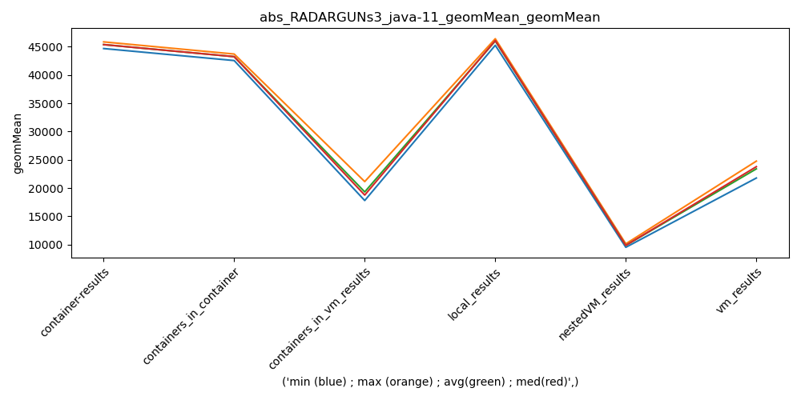
java-17
all runs of one jdk are treated as INDIVIDUAL items
BasicOperations.Put.Throughput=
RADARGUNs3 java-17 BasicOperations.Put.Throughput= where all runs of one jdk are treated as INDIVIDUAL items
MIN 21927.0 container-results
MIN 20898.0 containers_in_container
MIN 9088.0 containers_in_vm_results
MIN 21326.0 local_results
MIN 6074.0 nestedVM_results
MIN 10913.0 vm_results
MAX 22473.0 container-results
MAX 21503.0 containers_in_container
MAX 10723.0 containers_in_vm_results
MAX 22014.0 local_results
MAX 6814.0 nestedVM_results
MAX 13360.0 vm_results
AVG 22181.844444444443 container-results
AVG 21098.866666666665 containers_in_container
AVG 9873.255813953489 containers_in_vm_results
AVG 21661.62222222222 local_results
AVG 6366.066666666667 nestedVM_results
AVG 12080.511111111111 vm_results
MED 22186.0 container-results
MED 21095.0 containers_in_container
MED 9680.0 containers_in_vm_results
MED 21660.0 local_results
MED 6324.0 nestedVM_results
MED 12183.0 vm_results

BasicOperations.Get.Throughput=
RADARGUNs3 java-17 BasicOperations.Get.Throughput= where all runs of one jdk are treated as INDIVIDUAL items
MIN 87739.0 container-results
MIN 83610.0 containers_in_container
MIN 36360.0 containers_in_vm_results
MIN 85316.0 local_results
MIN 24291.0 nestedVM_results
MIN 43635.0 vm_results
MAX 89909.0 container-results
MAX 85997.0 containers_in_container
MAX 42904.0 containers_in_vm_results
MAX 88039.0 local_results
MAX 27269.0 nestedVM_results
MAX 53433.0 vm_results
AVG 88731.6 container-results
AVG 84400.64444444445 containers_in_container
AVG 39495.09302325582 containers_in_vm_results
AVG 86647.53333333334 local_results
AVG 25466.266666666666 nestedVM_results
AVG 48320.86666666667 vm_results
MED 88730.0 container-results
MED 84374.0 containers_in_container
MED 38711.0 containers_in_vm_results
MED 86649.0 local_results
MED 25291.0 nestedVM_results
MED 48727.0 vm_results

geomMean of all keys (benchmark meassured relativre accuracy)
{'MIN': [43861.74931532029, 41800.499757778016, 18177.999889976894, 42654.999894502405, 12146.749935682385, 21821.74958613539], 'MAX': [44950.24979908343, 43002.249836491115, 21448.999790200007, 44023.74979485505, 13631.249612563039, 26718.249942688984], 'AVG': [44364.7444318872, 42199.0277579244, 19747.02906298804, 43323.50555476869, 12732.63332351604, 24160.727775983596], 'MED': [44368.49986195161, 42188.499973333965, 19357.749869238418, 43322.249941571594, 12646.749938225235, 24364.749967935233]}
RADARGUNs3 java-17 geomMean where all runs of one jdk are treated as INDIVIDUAL items
MIN 43861.74931532029 container-results
MIN 41800.499757778016 containers_in_container
MIN 18177.999889976894 containers_in_vm_results
MIN 42654.999894502405 local_results
MIN 12146.749935682385 nestedVM_results
MIN 21821.74958613539 vm_results
MAX 44950.24979908343 container-results
MAX 43002.249836491115 containers_in_container
MAX 21448.999790200007 containers_in_vm_results
MAX 44023.74979485505 local_results
MAX 13631.249612563039 nestedVM_results
MAX 26718.249942688984 vm_results
AVG 44364.7444318872 container-results
AVG 42199.0277579244 containers_in_container
AVG 19747.02906298804 containers_in_vm_results
AVG 43323.50555476869 local_results
AVG 12732.63332351604 nestedVM_results
AVG 24160.727775983596 vm_results
MED 44368.49986195161 container-results
MED 42188.499973333965 containers_in_container
MED 19357.749869238418 containers_in_vm_results
MED 43322.249941571594 local_results
MED 12646.749938225235 nestedVM_results
MED 24364.749967935233 vm_results
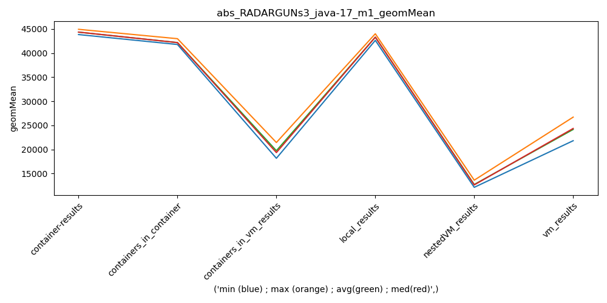
all runs of one jdk were made AVARAGE before processing
BasicOperations.Put.Throughput=
RADARGUNs3 java-17 BasicOperations.Put.Throughput= where all runs of one jdk were made AVARAGE before processing
MIN 22095.6 container-results
MIN 21041.6 containers_in_container
MIN 9281.6 containers_in_vm_results
MIN 21538.4 local_results
MIN 6256.0 nestedVM_results
MIN 11170.8 vm_results
MAX 22376.0 container-results
MAX 21300.6 containers_in_container
MAX 10451.2 containers_in_vm_results
MAX 21884.0 local_results
MAX 6474.4 nestedVM_results
MAX 12977.6 vm_results
AVG 22181.844444444447 container-results
AVG 21098.866666666665 containers_in_container
AVG 9859.703703703703 containers_in_vm_results
AVG 21661.622222222224 local_results
AVG 6366.066666666667 nestedVM_results
AVG 12080.511111111111 vm_results
MED 22147.0 container-results
MED 21075.4 containers_in_container
MED 9568.333333333334 containers_in_vm_results
MED 21631.6 local_results
MED 6392.0 nestedVM_results
MED 12393.4 vm_results

BasicOperations.Get.Throughput=
RADARGUNs3 java-17 BasicOperations.Get.Throughput= where all runs of one jdk were made AVARAGE before processing
MIN 88372.6 container-results
MIN 84178.2 containers_in_container
MIN 37131.6 containers_in_vm_results
MIN 86153.2 local_results
MIN 25015.6 nestedVM_results
MIN 44674.4 vm_results
MAX 89513.0 container-results
MAX 85204.4 containers_in_container
MAX 41808.2 containers_in_vm_results
MAX 87520.4 local_results
MAX 25901.6 nestedVM_results
MAX 51910.6 vm_results
AVG 88731.6 container-results
AVG 84400.64444444445 containers_in_container
AVG 39441.207407407404 containers_in_vm_results
AVG 86647.53333333334 local_results
AVG 25466.266666666666 nestedVM_results
AVG 48320.86666666667 vm_results
MED 88586.6 container-results
MED 84278.2 containers_in_container
MED 38282.666666666664 containers_in_vm_results
MED 86517.6 local_results
MED 25570.0 nestedVM_results
MED 49573.0 vm_results

geomMean of all keys (benchmark meassured relativre accuracy)
{'MIN': [44188.749932081126, 42086.14989661088, 18564.499954483017, 43076.69999988393, 12509.899823739597, 22339.399891671215], 'MAX': [44754.24994344113, 42601.69999706584, 20903.249982717996, 43764.09982622743, 12949.799961389364, 25955.24999995184], 'AVG': [44364.74443188721, 42199.0277579244, 19720.005546484026, 43323.5055547687, 12732.63332351604, 24160.727775983596], 'MED': [44293.649998617184, 42144.9495939905, 19138.999857765702, 43260.99994406047, 12784.499990222535, 24786.649999546124]}
RADARGUNs3 java-17 geomMean where all runs of one jdk were made AVARAGE before processing
MIN 44188.749932081126 container-results
MIN 42086.14989661088 containers_in_container
MIN 18564.499954483017 containers_in_vm_results
MIN 43076.69999988393 local_results
MIN 12509.899823739597 nestedVM_results
MIN 22339.399891671215 vm_results
MAX 44754.24994344113 container-results
MAX 42601.69999706584 containers_in_container
MAX 20903.249982717996 containers_in_vm_results
MAX 43764.09982622743 local_results
MAX 12949.799961389364 nestedVM_results
MAX 25955.24999995184 vm_results
AVG 44364.74443188721 container-results
AVG 42199.0277579244 containers_in_container
AVG 19720.005546484026 containers_in_vm_results
AVG 43323.5055547687 local_results
AVG 12732.63332351604 nestedVM_results
AVG 24160.727775983596 vm_results
MED 44293.649998617184 container-results
MED 42144.9495939905 containers_in_container
MED 19138.999857765702 containers_in_vm_results
MED 43260.99994406047 local_results
MED 12784.499990222535 nestedVM_results
MED 24786.649999546124 vm_results
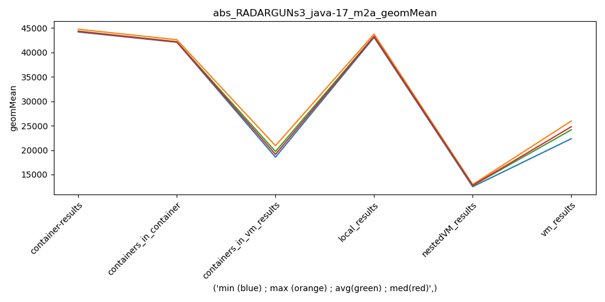
all runs of one jdk were made MEDIAN before processing
BasicOperations.Put.Throughput=
RADARGUNs3 java-17 BasicOperations.Put.Throughput= where all runs of one jdk were made MEDIAN before processing
MIN 22107.0 container-results
MIN 21035.0 containers_in_container
MIN 9310.0 containers_in_vm_results
MIN 21502.0 local_results
MIN 6228.0 nestedVM_results
MIN 11187.0 vm_results
MAX 22420.0 container-results
MAX 21268.0 containers_in_container
MAX 10403.0 containers_in_vm_results
MAX 21882.0 local_results
MAX 6427.0 nestedVM_results
MAX 13086.0 vm_results
AVG 22186.666666666668 container-results
AVG 21101.0 containers_in_container
AVG 9854.888888888889 containers_in_vm_results
AVG 21657.555555555555 local_results
AVG 6329.333333333333 nestedVM_results
AVG 12122.111111111111 vm_results
MED 22131.0 container-results
MED 21102.0 containers_in_container
MED 9549.0 containers_in_vm_results
MED 21627.0 local_results
MED 6318.0 nestedVM_results
MED 12383.0 vm_results

BasicOperations.Get.Throughput=
RADARGUNs3 java-17 BasicOperations.Get.Throughput= where all runs of one jdk were made MEDIAN before processing
MIN 88380.0 container-results
MIN 84133.0 containers_in_container
MIN 37238.0 containers_in_vm_results
MIN 86045.0 local_results
MIN 24887.0 nestedVM_results
MIN 44710.0 vm_results
MAX 89692.0 container-results
MAX 85064.0 containers_in_container
MAX 41630.0 containers_in_vm_results
MAX 87467.0 local_results
MAX 25720.0 nestedVM_results
MAX 52328.0 vm_results
AVG 88745.33333333333 container-results
AVG 84411.0 containers_in_container
AVG 39422.22222222222 containers_in_vm_results
AVG 86633.0 local_results
AVG 25314.0 nestedVM_results
AVG 48488.444444444445 vm_results
MED 88568.0 container-results
MED 84386.0 containers_in_container
MED 38172.0 containers_in_vm_results
MED 86560.0 local_results
MED 25253.0 nestedVM_results
MED 49540.0 vm_results
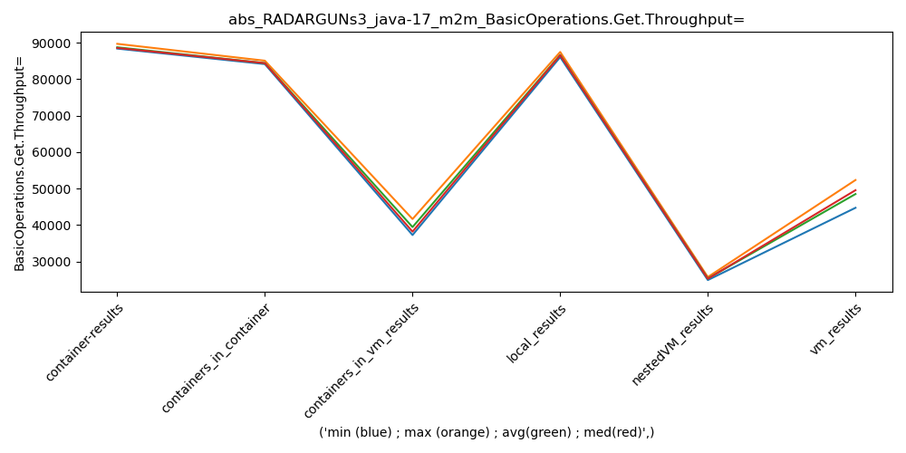
geomMean of all keys (benchmark meassured relativre accuracy)
{'MIN': [44201.9983711144, 42068.249963600814, 18619.49999328661, 43013.24900539368, 12449.748431193299, 22364.497982293276], 'MAX': [44842.99989964989, 42533.9999529788, 20810.499513466755, 43748.74734206683, 12856.999649996107, 26167.99969428309], 'AVG': [44372.99999874799, 42203.74996371768, 19710.444433170105, 43315.80554998884, 12657.833305901922, 24244.222222222223], 'MED': [44272.99863347862, 42198.499641574934, 19091.99905719671, 43266.99804701038, 12631.24910687775, 24767.999919250648]}
RADARGUNs3 java-17 geomMean where all runs of one jdk were made MEDIAN before processing
MIN 44201.9983711144 container-results
MIN 42068.249963600814 containers_in_container
MIN 18619.49999328661 containers_in_vm_results
MIN 43013.24900539368 local_results
MIN 12449.748431193299 nestedVM_results
MIN 22364.497982293276 vm_results
MAX 44842.99989964989 container-results
MAX 42533.9999529788 containers_in_container
MAX 20810.499513466755 containers_in_vm_results
MAX 43748.74734206683 local_results
MAX 12856.999649996107 nestedVM_results
MAX 26167.99969428309 vm_results
AVG 44372.99999874799 container-results
AVG 42203.74996371768 containers_in_container
AVG 19710.444433170105 containers_in_vm_results
AVG 43315.80554998884 local_results
AVG 12657.833305901922 nestedVM_results
AVG 24244.222222222223 vm_results
MED 44272.99863347862 container-results
MED 42198.499641574934 containers_in_container
MED 19091.99905719671 containers_in_vm_results
MED 43266.99804701038 local_results
MED 12631.24910687775 nestedVM_results
MED 24767.999919250648 vm_results
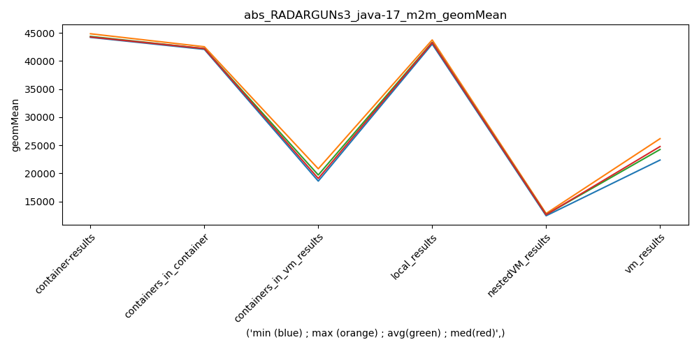
geomMean of all metrics from geomMean of all keys
{'MIN': [44083.88453118452, 41984.76298832758, 18452.94931372157, 42914.58064663824, 12367.772829100524, 22173.797379752843], 'MAX': [44849.09496521645, 42712.15114406832, 21052.376161055498, 43845.3510172195, 13141.535749644185, 26278.541056866175], 'AVG': [44367.49611683303, 42200.60176781135, 19725.820265437145, 43320.93873443339, 12707.65099928827, 24188.527259536695], 'MED': [44311.69717786305, 42177.309994403135, 19195.90119030987, 43283.40720034496, 12687.31315773967, 24639.02833435483]}
RADARGUNs3 java-17 geomMean geomMean
MIN 44083.88453118452 container-results
MIN 41984.76298832758 containers_in_container
MIN 18452.94931372157 containers_in_vm_results
MIN 42914.58064663824 local_results
MIN 12367.772829100524 nestedVM_results
MIN 22173.797379752843 vm_results
MAX 44849.09496521645 container-results
MAX 42712.15114406832 containers_in_container
MAX 21052.376161055498 containers_in_vm_results
MAX 43845.3510172195 local_results
MAX 13141.535749644185 nestedVM_results
MAX 26278.541056866175 vm_results
AVG 44367.49611683303 container-results
AVG 42200.60176781135 containers_in_container
AVG 19725.820265437145 containers_in_vm_results
AVG 43320.93873443339 local_results
AVG 12707.65099928827 nestedVM_results
AVG 24188.527259536695 vm_results
MED 44311.69717786305 container-results
MED 42177.309994403135 containers_in_container
MED 19195.90119030987 containers_in_vm_results
MED 43283.40720034496 local_results
MED 12687.31315773967 nestedVM_results
MED 24639.02833435483 vm_results
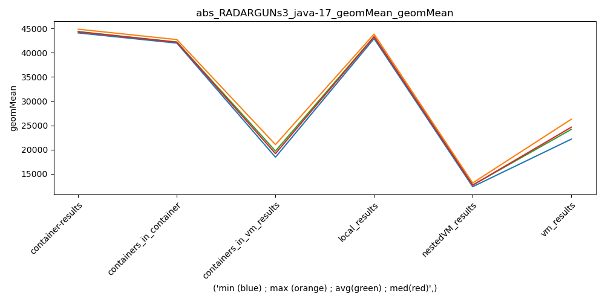
java-21
all runs of one jdk are treated as INDIVIDUAL items
BasicOperations.Put.Throughput=
RADARGUNs3 java-21 BasicOperations.Put.Throughput= where all runs of one jdk are treated as INDIVIDUAL items
MIN 21612.0 container-results
MIN 20728.0 containers_in_container
MIN 9911.0 containers_in_vm_results
MIN 21163.0 local_results
MIN 6077.0 nestedVM_results
MIN 10896.0 vm_results
MAX 22361.0 container-results
MAX 21256.0 containers_in_container
MAX 10645.0 containers_in_vm_results
MAX 21857.0 local_results
MAX 6970.0 nestedVM_results
MAX 11632.0 vm_results
AVG 21912.342857142856 container-results
AVG 20970.8 containers_in_container
AVG 10316.57142857143 containers_in_vm_results
AVG 21428.514285714286 local_results
AVG 6463.714285714285 nestedVM_results
AVG 11191.828571428572 vm_results
MED 21916.0 container-results
MED 20942.0 containers_in_container
MED 10374.0 containers_in_vm_results
MED 21424.0 local_results
MED 6493.0 nestedVM_results
MED 11162.0 vm_results
BasicOperations.Get.Throughput=
RADARGUNs3 java-21 BasicOperations.Get.Throughput= where all runs of one jdk are treated as INDIVIDUAL items
MIN 86448.0 container-results
MIN 82946.0 containers_in_container
MIN 39644.0 containers_in_vm_results
MIN 84635.0 local_results
MIN 24298.0 nestedVM_results
MIN 43606.0 vm_results
MAX 89461.0 container-results
MAX 84999.0 containers_in_container
MAX 42589.0 containers_in_vm_results
MAX 87421.0 local_results
MAX 27900.0 nestedVM_results
MAX 46561.0 vm_results
AVG 87650.14285714286 container-results
AVG 83881.08571428571 containers_in_container
AVG 41265.857142857145 containers_in_vm_results
AVG 85723.62857142858 local_results
AVG 25853.6 nestedVM_results
AVG 44765.171428571426 vm_results
MED 87646.0 container-results
MED 83754.0 containers_in_container
MED 41493.0 containers_in_vm_results
MED 85710.0 local_results
MED 25970.0 nestedVM_results
MED 44655.0 vm_results
geomMean of all keys (benchmark meassured relativre accuracy)
{'MIN': [43224.0, 41464.4991287728, 19822.0, 42321.749786604996, 12151.499742830101, 21797.499306113074], 'MAX': [44726.24979807719, 42505.74954050334, 21292.249881118718, 43712.24996496977, 13944.999103621341, 23272.24853768969], 'AVG': [43824.87857100422, 41941.07142524071, 20633.035714007532, 42859.42136177439, 12927.114281893808, 22383.121422160577], 'MED': [43827.49976898066, 41880.49985375055, 20747.249986443985, 42851.49985706451, 12985.499990373879, 22325.749931413276]}
RADARGUNs3 java-21 geomMean where all runs of one jdk are treated as INDIVIDUAL items
MIN 43224.0 container-results
MIN 41464.4991287728 containers_in_container
MIN 19822.0 containers_in_vm_results
MIN 42321.749786604996 local_results
MIN 12151.499742830101 nestedVM_results
MIN 21797.499306113074 vm_results
MAX 44726.24979807719 container-results
MAX 42505.74954050334 containers_in_container
MAX 21292.249881118718 containers_in_vm_results
MAX 43712.24996496977 local_results
MAX 13944.999103621341 nestedVM_results
MAX 23272.24853768969 vm_results
AVG 43824.87857100422 container-results
AVG 41941.07142524071 containers_in_container
AVG 20633.035714007532 containers_in_vm_results
AVG 42859.42136177439 local_results
AVG 12927.114281893808 nestedVM_results
AVG 22383.121422160577 vm_results
MED 43827.49976898066 container-results
MED 41880.49985375055 containers_in_container
MED 20747.249986443985 containers_in_vm_results
MED 42851.49985706451 local_results
MED 12985.499990373879 nestedVM_results
MED 22325.749931413276 vm_results
all runs of one jdk were made AVARAGE before processing
BasicOperations.Put.Throughput=
RADARGUNs3 java-21 BasicOperations.Put.Throughput= where all runs of one jdk were made AVARAGE before processing
MIN 21771.6 container-results
MIN 20842.8 containers_in_container
MIN 10191.6 containers_in_vm_results
MIN 21244.8 local_results
MIN 6278.4 nestedVM_results
MIN 11048.8 vm_results
MAX 22132.8 container-results
MAX 21148.4 containers_in_container
MAX 10436.0 containers_in_vm_results
MAX 21754.4 local_results
MAX 6670.8 nestedVM_results
MAX 11393.4 vm_results
AVG 21912.342857142856 container-results
AVG 20970.8 containers_in_container
AVG 10316.57142857143 containers_in_vm_results
AVG 21428.514285714286 local_results
AVG 6463.714285714285 nestedVM_results
AVG 11191.828571428572 vm_results
MED 21942.8 container-results
MED 20963.4 containers_in_container
MED 10320.6 containers_in_vm_results
MED 21401.6 local_results
MED 6458.8 nestedVM_results
MED 11153.2 vm_results

BasicOperations.Get.Throughput=
RADARGUNs3 java-21 BasicOperations.Get.Throughput= where all runs of one jdk were made AVARAGE before processing
MIN 87095.6 container-results
MIN 83388.2 containers_in_container
MIN 40766.0 containers_in_vm_results
MIN 84993.8 local_results
MIN 25116.2 nestedVM_results
MIN 44196.8 vm_results
MAX 88522.0 container-results
MAX 84589.8 containers_in_container
MAX 41746.8 containers_in_vm_results
MAX 87032.8 local_results
MAX 26675.2 nestedVM_results
MAX 45569.2 vm_results
AVG 87650.14285714286 container-results
AVG 83881.08571428571 containers_in_container
AVG 41265.857142857145 containers_in_vm_results
AVG 85723.62857142858 local_results
AVG 25853.600000000002 nestedVM_results
AVG 44765.17142857143 vm_results
MED 87787.6 container-results
MED 83856.6 containers_in_container
MED 41279.8 containers_in_vm_results
MED 85596.2 local_results
MED 25836.2 nestedVM_results
MED 44626.6 vm_results
geomMean of all keys (benchmark meassured relativre accuracy)
{'MIN': [43545.49993925894, 41689.84978337053, 20383.0999997547, 42493.249843239806, 12557.449983177316, 22097.999996379764], 'MAX': [44263.299940243945, 42295.84998933111, 20872.69998826218, 43512.59983407105, 13339.599850070466, 22785.69997344826], 'AVG': [43824.87857100422, 41941.07142524071, 20633.035714007532, 42859.42136177439, 12927.114281893808, 22383.121422160577], 'MED': [43889.69980849721, 41927.54999329201, 20640.54998976529, 42800.64992403737, 12917.849997580866, 22309.849733245628]}
RADARGUNs3 java-21 geomMean where all runs of one jdk were made AVARAGE before processing
MIN 43545.49993925894 container-results
MIN 41689.84978337053 containers_in_container
MIN 20383.0999997547 containers_in_vm_results
MIN 42493.249843239806 local_results
MIN 12557.449983177316 nestedVM_results
MIN 22097.999996379764 vm_results
MAX 44263.299940243945 container-results
MAX 42295.84998933111 containers_in_container
MAX 20872.69998826218 containers_in_vm_results
MAX 43512.59983407105 local_results
MAX 13339.599850070466 nestedVM_results
MAX 22785.69997344826 vm_results
AVG 43824.87857100422 container-results
AVG 41941.07142524071 containers_in_container
AVG 20633.035714007532 containers_in_vm_results
AVG 42859.42136177439 local_results
AVG 12927.114281893808 nestedVM_results
AVG 22383.121422160577 vm_results
MED 43889.69980849721 container-results
MED 41927.54999329201 containers_in_container
MED 20640.54998976529 containers_in_vm_results
MED 42800.64992403737 local_results
MED 12917.849997580866 nestedVM_results
MED 22309.849733245628 vm_results
all runs of one jdk were made MEDIAN before processing
BasicOperations.Put.Throughput=
RADARGUNs3 java-21 BasicOperations.Put.Throughput= where all runs of one jdk were made MEDIAN before processing
MIN 21791.0 container-results
MIN 20854.0 containers_in_container
MIN 10130.0 containers_in_vm_results
MIN 21263.0 local_results
MIN 6232.0 nestedVM_results
MIN 11039.0 vm_results
MAX 22150.0 container-results
MAX 21116.0 containers_in_container
MAX 10461.0 containers_in_vm_results
MAX 21833.0 local_results
MAX 6626.0 nestedVM_results
MAX 11457.0 vm_results
AVG 21936.85714285714 container-results
AVG 20975.14285714286 containers_in_container
AVG 10333.857142857143 containers_in_vm_results
AVG 21454.285714285714 local_results
AVG 6428.714285714285 nestedVM_results
AVG 11221.142857142857 vm_results
MED 21934.0 container-results
MED 20996.0 containers_in_container
MED 10355.0 containers_in_vm_results
MED 21424.0 local_results
MED 6403.0 nestedVM_results
MED 11162.0 vm_results
BasicOperations.Get.Throughput=
RADARGUNs3 java-21 BasicOperations.Get.Throughput= where all runs of one jdk were made MEDIAN before processing
MIN 87148.0 container-results
MIN 83482.0 containers_in_container
MIN 40521.0 containers_in_vm_results
MIN 85108.0 local_results
MIN 24930.0 nestedVM_results
MIN 44151.0 vm_results
MAX 88638.0 container-results
MAX 84438.0 containers_in_container
MAX 41833.0 containers_in_vm_results
MAX 87327.0 local_results
MAX 26480.0 nestedVM_results
MAX 45832.0 vm_results
AVG 87747.57142857143 container-results
AVG 83913.42857142857 containers_in_container
AVG 41342.142857142855 containers_in_vm_results
AVG 85820.28571428571 local_results
AVG 25712.14285714286 nestedVM_results
AVG 44890.71428571428 vm_results
MED 87730.0 container-results
MED 84024.0 containers_in_container
MED 41432.0 containers_in_vm_results
MED 85710.0 local_results
MED 25615.0 nestedVM_results
MED 44669.0 vm_results
geomMean of all keys (benchmark meassured relativre accuracy)
{'MIN': [43577.99981642113, 41724.496737528185, 20260.24999845757, 42539.99769628578, 12464.499989971519, 22076.749964612092], 'MAX': [44309.49898159536, 42225.49949970989, 20919.24981924543, 43664.74998210799, 13245.99864109913, 22914.999978180233], 'AVG': [43873.74999998546, 41953.499876868045, 20669.392788984056, 42909.35713566352, 12856.749982092708, 22443.821376030945], 'MED': [43866.499974354, 42001.99880958048, 20712.999782745133, 42851.49985706451, 12806.749978038924, 22329.24938281625]}
RADARGUNs3 java-21 geomMean where all runs of one jdk were made MEDIAN before processing
MIN 43577.99981642113 container-results
MIN 41724.496737528185 containers_in_container
MIN 20260.24999845757 containers_in_vm_results
MIN 42539.99769628578 local_results
MIN 12464.499989971519 nestedVM_results
MIN 22076.749964612092 vm_results
MAX 44309.49898159536 container-results
MAX 42225.49949970989 containers_in_container
MAX 20919.24981924543 containers_in_vm_results
MAX 43664.74998210799 local_results
MAX 13245.99864109913 nestedVM_results
MAX 22914.999978180233 vm_results
AVG 43873.74999998546 container-results
AVG 41953.499876868045 containers_in_container
AVG 20669.392788984056 containers_in_vm_results
AVG 42909.35713566352 local_results
AVG 12856.749982092708 nestedVM_results
AVG 22443.821376030945 vm_results
MED 43866.499974354 container-results
MED 42001.99880958048 containers_in_container
MED 20712.999782745133 containers_in_vm_results
MED 42851.49985706451 local_results
MED 12806.749978038924 nestedVM_results
MED 22329.24938281625 vm_results
geomMean of all metrics from geomMean of all keys
{'MIN': [43448.87234382711, 41626.12209083426, 20153.671202198842, 42451.56200059511, 12389.926599924214, 21990.322245703464], 'MAX': [44432.529474347044, 42342.19915871905, 21027.231551406447, 43629.78342876904, 13506.681730781966, 22990.064728834146], 'AVG': [43841.16299562413, 41945.21383330171, 20645.147627726263, 42876.06015942123, 12903.616830151726, 22403.336477629207], 'MED': [43861.22567441942, 41936.65306073846, 20700.2187680009, 42834.54317037512, 12903.156005981939, 22321.61475252792]}
RADARGUNs3 java-21 geomMean geomMean
MIN 43448.87234382711 container-results
MIN 41626.12209083426 containers_in_container
MIN 20153.671202198842 containers_in_vm_results
MIN 42451.56200059511 local_results
MIN 12389.926599924214 nestedVM_results
MIN 21990.322245703464 vm_results
MAX 44432.529474347044 container-results
MAX 42342.19915871905 containers_in_container
MAX 21027.231551406447 containers_in_vm_results
MAX 43629.78342876904 local_results
MAX 13506.681730781966 nestedVM_results
MAX 22990.064728834146 vm_results
AVG 43841.16299562413 container-results
AVG 41945.21383330171 containers_in_container
AVG 20645.147627726263 containers_in_vm_results
AVG 42876.06015942123 local_results
AVG 12903.616830151726 nestedVM_results
AVG 22403.336477629207 vm_results
MED 43861.22567441942 container-results
MED 41936.65306073846 containers_in_container
MED 20700.2187680009 containers_in_vm_results
MED 42834.54317037512 local_results
MED 12903.156005981939 nestedVM_results
MED 22321.61475252792 vm_results
geomMean of all benchamrks from geomMean of all metrics and all keys
{'MIN': [5255.316451455685, 5058.426080503459, 2603.968465732044, 5237.591741115459, 1700.0727067510397, 2966.052131528343], 'MAX': [5359.135921316593, 5149.648703875074, 2865.0116244490655, 5344.346158923701, 1802.0777275997725, 3298.272386945965], 'AVG': [5302.092718736902, 5099.920470821682, 2722.306720366721, 5286.007097369489, 1747.6589144148645, 3144.817843656857], 'MED': [5298.269309291605, 5098.708538328512, 2682.357224027087, 5284.540787467377, 1749.3564061101174, 3184.1000700833038]}
RADARGUNs3 geomMean geomMean geomMean
MIN 5255.316451455685 container-results
MIN 5058.426080503459 containers_in_container
MIN 2603.968465732044 containers_in_vm_results
MIN 5237.591741115459 local_results
MIN 1700.0727067510397 nestedVM_results
MIN 2966.052131528343 vm_results
MAX 5359.135921316593 container-results
MAX 5149.648703875074 containers_in_container
MAX 2865.0116244490655 containers_in_vm_results
MAX 5344.346158923701 local_results
MAX 1802.0777275997725 nestedVM_results
MAX 3298.272386945965 vm_results
AVG 5302.092718736902 container-results
AVG 5099.920470821682 containers_in_container
AVG 2722.306720366721 containers_in_vm_results
AVG 5286.007097369489 local_results
AVG 1747.6589144148645 nestedVM_results
AVG 3144.817843656857 vm_results
MED 5298.269309291605 container-results
MED 5098.708538328512 containers_in_container
MED 2682.357224027087 containers_in_vm_results
MED 5284.540787467377 local_results
MED 1749.3564061101174 nestedVM_results
MED 3184.1000700833038 vm_results
SPECJBB
java-1.8.0
all runs of one jdk are treated as INDIVIDUAL items
jbb2015.result.metric.max-jOPS
SPECJBB java-1.8.0 jbb2015.result.metric.max-jOPS where all runs of one jdk are treated as INDIVIDUAL items
MIN 10278.0 container-results
MIN 9271.0 containers_in_container
MIN 7519.0 containers_in_vm_results
MIN 10516.0 local_results
MIN 5605.0 nestedVM_results
MIN 7326.0 vm_results
MAX 10931.0 container-results
MAX 11208.0 containers_in_container
MAX 8580.0 containers_in_vm_results
MAX 11208.0 local_results
MAX 6589.0 nestedVM_results
MAX 8776.0 vm_results
AVG 10615.86 container-results
AVG 10878.06 containers_in_container
AVG 7973.3 containers_in_vm_results
AVG 11003.28 local_results
AVG 6218.448979591837 nestedVM_results
AVG 7888.84 vm_results
MED 10654.0 container-results
MED 10931.0 containers_in_container
MED 7905.0 containers_in_vm_results
MED 11070.0 local_results
MED 6231.0 nestedVM_results
MED 7712.0 vm_results

jbb2015.result.metric.critical-jOPS
SPECJBB java-1.8.0 jbb2015.result.metric.critical-jOPS where all runs of one jdk are treated as INDIVIDUAL items
MIN 2001.0 container-results
MIN 2014.0 containers_in_container
MIN 1679.0 containers_in_vm_results
MIN 1989.0 local_results
MIN 1026.0 nestedVM_results
MIN 1543.0 vm_results
MAX 2498.0 container-results
MAX 2668.0 containers_in_container
MAX 2350.0 containers_in_vm_results
MAX 2605.0 local_results
MAX 1303.0 nestedVM_results
MAX 2131.0 vm_results
AVG 2271.14 container-results
AVG 2319.92 containers_in_container
AVG 1956.8 containers_in_vm_results
AVG 2318.14 local_results
AVG 1195.469387755102 nestedVM_results
AVG 1782.02 vm_results
MED 2299.0 container-results
MED 2335.0 containers_in_container
MED 1953.0 containers_in_vm_results
MED 2319.0 local_results
MED 1197.0 nestedVM_results
MED 1740.0 vm_results

geomMean of all keys (benchmark meassured relativre accuracy)
{'MIN': [4535.005843436147, 4321.0871317297, 3553.0833089022835, 4573.436782114737, 2398.0679723477397, 3362.1448511329786], 'MAX': [5225.4796908992, 5468.358437410628, 4490.322928253601, 5403.410034413454, 2930.0967560816143, 4324.541131727157], 'AVG': [4910.204097631788, 5023.567353504877, 3949.956131401968, 5050.459731469998, 2726.5299181228493, 3749.4093743948524], 'MED': [4949.095472912197, 5052.116883050114, 3929.181212415635, 5066.688267497814, 2731.02673000467, 3663.1789473079252]}
SPECJBB java-1.8.0 geomMean where all runs of one jdk are treated as INDIVIDUAL items
MIN 4535.005843436147 container-results
MIN 4321.0871317297 containers_in_container
MIN 3553.0833089022835 containers_in_vm_results
MIN 4573.436782114737 local_results
MIN 2398.0679723477397 nestedVM_results
MIN 3362.1448511329786 vm_results
MAX 5225.4796908992 container-results
MAX 5468.358437410628 containers_in_container
MAX 4490.322928253601 containers_in_vm_results
MAX 5403.410034413454 local_results
MAX 2930.0967560816143 nestedVM_results
MAX 4324.541131727157 vm_results
AVG 4910.204097631788 container-results
AVG 5023.567353504877 containers_in_container
AVG 3949.956131401968 containers_in_vm_results
AVG 5050.459731469998 local_results
AVG 2726.5299181228493 nestedVM_results
AVG 3749.4093743948524 vm_results
MED 4949.095472912197 container-results
MED 5052.116883050114 containers_in_container
MED 3929.181212415635 containers_in_vm_results
MED 5066.688267497814 local_results
MED 2731.02673000467 nestedVM_results
MED 3663.1789473079252 vm_results

all runs of one jdk were made AVARAGE before processing
jbb2015.result.metric.max-jOPS
SPECJBB java-1.8.0 jbb2015.result.metric.max-jOPS where all runs of one jdk were made AVARAGE before processing
MIN 10493.2 container-results
MIN 10682.4 containers_in_container
MIN 7673.4 containers_in_vm_results
MIN 10820.4 local_results
MIN 6022.8 nestedVM_results
MIN 7541.8 vm_results
MAX 10737.2 container-results
MAX 11069.6 containers_in_container
MAX 8473.4 containers_in_vm_results
MAX 11125.2 local_results
MAX 6382.6 nestedVM_results
MAX 8641.4 vm_results
AVG 10615.86 container-results
AVG 10878.060000000001 containers_in_container
AVG 7973.3 containers_in_vm_results
AVG 11003.28 local_results
AVG 6220.37 nestedVM_results
AVG 7888.839999999999 vm_results
MED 10654.2 container-results
MED 10931.2 containers_in_container
MED 7838.8 containers_in_vm_results
MED 11042.0 local_results
MED 6296.8 nestedVM_results
MED 7648.6 vm_results

jbb2015.result.metric.critical-jOPS
SPECJBB java-1.8.0 jbb2015.result.metric.critical-jOPS where all runs of one jdk were made AVARAGE before processing
MIN 2178.4 container-results
MIN 2269.0 containers_in_container
MIN 1907.8 containers_in_vm_results
MIN 2218.8 local_results
MIN 1161.2 nestedVM_results
MIN 1661.6 vm_results
MAX 2423.0 container-results
MAX 2437.6 containers_in_container
MAX 2009.2 containers_in_vm_results
MAX 2417.6 local_results
MAX 1230.6 nestedVM_results
MAX 1968.8 vm_results
AVG 2271.1400000000003 container-results
AVG 2319.92 containers_in_container
AVG 1956.8 containers_in_vm_results
AVG 2318.1400000000003 local_results
AVG 1195.705 nestedVM_results
AVG 1782.02 vm_results
MED 2269.8 container-results
MED 2298.2 containers_in_container
MED 1957.2 containers_in_vm_results
MED 2321.8 local_results
MED 1203.8 nestedVM_results
MED 1759.4 vm_results

geomMean of all keys (benchmark meassured relativre accuracy)
{'MIN': [4781.044538591959, 4923.247464834568, 3826.135454998947, 4899.826886737938, 2644.5557963484152, 3539.9795027655173], 'MAX': [5100.611296697682, 5194.54107308817, 4126.1065521869405, 5186.162697023687, 2802.5751658073327, 4124.704634273829], 'AVG': [4910.2040976317885, 5023.567353504878, 3949.956131401968, 5050.459731469998, 2727.2197401107965, 3749.4093743948524], 'MED': [4917.611530001125, 5012.193515817202, 3916.8992021751083, 5063.33048496738, 2753.195932003387, 3668.371142619024]}
SPECJBB java-1.8.0 geomMean where all runs of one jdk were made AVARAGE before processing
MIN 4781.044538591959 container-results
MIN 4923.247464834568 containers_in_container
MIN 3826.135454998947 containers_in_vm_results
MIN 4899.826886737938 local_results
MIN 2644.5557963484152 nestedVM_results
MIN 3539.9795027655173 vm_results
MAX 5100.611296697682 container-results
MAX 5194.54107308817 containers_in_container
MAX 4126.1065521869405 containers_in_vm_results
MAX 5186.162697023687 local_results
MAX 2802.5751658073327 nestedVM_results
MAX 4124.704634273829 vm_results
AVG 4910.2040976317885 container-results
AVG 5023.567353504878 containers_in_container
AVG 3949.956131401968 containers_in_vm_results
AVG 5050.459731469998 local_results
AVG 2727.2197401107965 nestedVM_results
AVG 3749.4093743948524 vm_results
MED 4917.611530001125 container-results
MED 5012.193515817202 containers_in_container
MED 3916.8992021751083 containers_in_vm_results
MED 5063.33048496738 local_results
MED 2753.195932003387 nestedVM_results
MED 3668.371142619024 vm_results

all runs of one jdk were made MEDIAN before processing
jbb2015.result.metric.max-jOPS
SPECJBB java-1.8.0 jbb2015.result.metric.max-jOPS where all runs of one jdk were made MEDIAN before processing
MIN 10509.0 container-results
MIN 10654.0 containers_in_container
MIN 7712.0 containers_in_vm_results
MIN 10931.0 local_results
MIN 6007.0 nestedVM_results
MIN 7538.0 vm_results
MAX 10654.0 container-results
MAX 11070.0 containers_in_container
MAX 8483.0 containers_in_vm_results
MAX 11208.0 local_results
MAX 6359.0 nestedVM_results
MAX 8676.0 vm_results
AVG 10611.9 container-results
AVG 10917.5 containers_in_container
AVG 7972.1 containers_in_vm_results
AVG 11028.2 local_results
AVG 6218.0 nestedVM_results
AVG 7895.2 vm_results
MED 10654.0 container-results
MED 10931.0 containers_in_container
MED 7808.0 containers_in_vm_results
MED 11070.0 local_results
MED 6261.0 nestedVM_results
MED 7616.0 vm_results
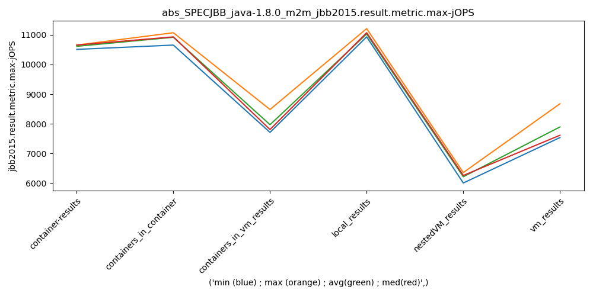
jbb2015.result.metric.critical-jOPS
SPECJBB java-1.8.0 jbb2015.result.metric.critical-jOPS where all runs of one jdk were made MEDIAN before processing
MIN 2156.0 container-results
MIN 2233.0 containers_in_container
MIN 1837.0 containers_in_vm_results
MIN 2209.0 local_results
MIN 1161.0 nestedVM_results
MIN 1636.0 vm_results
MAX 2446.0 container-results
MAX 2483.0 containers_in_container
MAX 2064.0 containers_in_vm_results
MAX 2384.0 local_results
MAX 1235.0 nestedVM_results
MAX 2019.0 vm_results
AVG 2267.3 container-results
AVG 2341.3 containers_in_container
AVG 1945.5 containers_in_vm_results
AVG 2305.5 local_results
AVG 1199.8 nestedVM_results
AVG 1791.5 vm_results
MED 2260.0 container-results
MED 2348.0 containers_in_container
MED 1959.0 containers_in_vm_results
MED 2331.0 local_results
MED 1201.0 nestedVM_results
MED 1720.0 vm_results

geomMean of all keys (benchmark meassured relativre accuracy)
{'MIN': [4759.979411720181, 4877.538518556261, 3763.900104944338, 4913.916869463707, 2640.8572471831944, 3511.718667547274], 'MAX': [5104.868656488627, 5242.786472859638, 4184.3651848279205, 5169.126812141486, 2802.3855908850232, 4185.312891529139], 'AVG': [4905.1361724217195, 5055.802878870972, 3938.2382546006534, 5042.371971602254, 2731.3652996258115, 3760.8843109034874], 'MED': [4906.937945399351, 5066.161071264908, 3910.9937356124724, 5079.780507069178, 2742.1635618613273, 3619.325904087666]}
SPECJBB java-1.8.0 geomMean where all runs of one jdk were made MEDIAN before processing
MIN 4759.979411720181 container-results
MIN 4877.538518556261 containers_in_container
MIN 3763.900104944338 containers_in_vm_results
MIN 4913.916869463707 local_results
MIN 2640.8572471831944 nestedVM_results
MIN 3511.718667547274 vm_results
MAX 5104.868656488627 container-results
MAX 5242.786472859638 containers_in_container
MAX 4184.3651848279205 containers_in_vm_results
MAX 5169.126812141486 local_results
MAX 2802.3855908850232 nestedVM_results
MAX 4185.312891529139 vm_results
AVG 4905.1361724217195 container-results
AVG 5055.802878870972 containers_in_container
AVG 3938.2382546006534 containers_in_vm_results
AVG 5042.371971602254 local_results
AVG 2731.3652996258115 nestedVM_results
AVG 3760.8843109034874 vm_results
MED 4906.937945399351 container-results
MED 5066.161071264908 containers_in_container
MED 3910.9937356124724 containers_in_vm_results
MED 5079.780507069178 local_results
MED 2742.1635618613273 nestedVM_results
MED 3619.325904087666 vm_results
geomMean of all metrics from geomMean of all keys
{'MIN': [4690.673865435533, 4699.1048176388895, 3712.512632219642, 4793.106445671606, 2558.5056657676423, 3470.395417987448], 'MAX': [5143.329192799994, 5300.564328151449, 4263.986928512137, 5251.8270560540805, 2844.389329468174, 4210.693267984373], 'AVG': [4908.514207704668, 5034.289626786184, 3946.0463036380565, 5047.7623711585975, 2728.3708171911485, 3753.230457780683], 'MED': [4924.5158395030485, 5043.438597616433, 3919.017398556558, 5069.92812221807, 2742.113805020717, 3650.225528102192]}
SPECJBB java-1.8.0 geomMean geomMean
MIN 4690.673865435533 container-results
MIN 4699.1048176388895 containers_in_container
MIN 3712.512632219642 containers_in_vm_results
MIN 4793.106445671606 local_results
MIN 2558.5056657676423 nestedVM_results
MIN 3470.395417987448 vm_results
MAX 5143.329192799994 container-results
MAX 5300.564328151449 containers_in_container
MAX 4263.986928512137 containers_in_vm_results
MAX 5251.8270560540805 local_results
MAX 2844.389329468174 nestedVM_results
MAX 4210.693267984373 vm_results
AVG 4908.514207704668 container-results
AVG 5034.289626786184 containers_in_container
AVG 3946.0463036380565 containers_in_vm_results
AVG 5047.7623711585975 local_results
AVG 2728.3708171911485 nestedVM_results
AVG 3753.230457780683 vm_results
MED 4924.5158395030485 container-results
MED 5043.438597616433 containers_in_container
MED 3919.017398556558 containers_in_vm_results
MED 5069.92812221807 local_results
MED 2742.113805020717 nestedVM_results
MED 3650.225528102192 vm_results
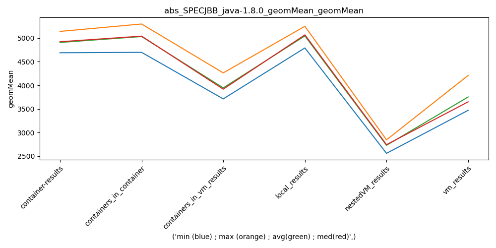
java-11
all runs of one jdk are treated as INDIVIDUAL items
jbb2015.result.metric.max-jOPS
SPECJBB java-11 jbb2015.result.metric.max-jOPS where all runs of one jdk are treated as INDIVIDUAL items
MIN 8483.0 container-results
MIN 8610.0 containers_in_container
MIN 6037.0 containers_in_vm_results
MIN 8612.0 local_results
MIN 4665.0 nestedVM_results
MIN 5635.0 vm_results
MAX 9305.0 container-results
MAX 9311.0 containers_in_container
MAX 7245.0 containers_in_vm_results
MAX 9503.0 local_results
MAX 5313.0 nestedVM_results
MAX 7406.0 vm_results
AVG 8879.133333333333 container-results
AVG 8994.844444444445 containers_in_container
AVG 6650.177777777778 containers_in_vm_results
AVG 9066.297297297297 local_results
AVG 5005.6 nestedVM_results
AVG 6465.666666666667 vm_results
MED 8892.0 container-results
MED 9037.0 containers_in_container
MED 6440.0 containers_in_vm_results
MED 9107.0 local_results
MED 5003.0 nestedVM_results
MED 6198.0 vm_results

jbb2015.result.metric.critical-jOPS
SPECJBB java-11 jbb2015.result.metric.critical-jOPS where all runs of one jdk are treated as INDIVIDUAL items
MIN 1924.0 container-results
MIN 1847.0 containers_in_container
MIN 1510.0 containers_in_vm_results
MIN 1957.0 local_results
MIN 819.0 nestedVM_results
MIN 1130.0 vm_results
MAX 2823.0 container-results
MAX 2819.0 containers_in_container
MAX 1953.0 containers_in_vm_results
MAX 2755.0 local_results
MAX 1056.0 nestedVM_results
MAX 1867.0 vm_results
AVG 2379.1555555555556 container-results
AVG 2360.1555555555556 containers_in_container
AVG 1717.7555555555555 containers_in_vm_results
AVG 2378.5135135135133 local_results
AVG 937.7333333333333 nestedVM_results
AVG 1492.8666666666666 vm_results
MED 2405.0 container-results
MED 2361.0 containers_in_container
MED 1700.0 containers_in_vm_results
MED 2342.0 local_results
MED 929.0 nestedVM_results
MED 1375.0 vm_results
geomMean of all keys (benchmark meassured relativre accuracy)
{'MIN': [4039.9618810082848, 3987.815191304632, 3019.2499068477255, 4105.323860549859, 1954.6444689508114, 2523.4004834746306], 'MAX': [5125.233165427696, 5123.251799394599, 3761.5801201091012, 5116.714277737227, 2368.6553147302798, 3718.4676951669217], 'AVG': [4596.17660654141, 4607.519081557187, 3379.849082904424, 4643.738864229195, 2166.5451699268433, 3106.827681807352], 'MED': [4624.419963627871, 4619.129463437889, 3308.776208811953, 4618.289077136684, 2155.8726771310035, 2919.2892970721487]}
SPECJBB java-11 geomMean where all runs of one jdk are treated as INDIVIDUAL items
MIN 4039.9618810082848 container-results
MIN 3987.815191304632 containers_in_container
MIN 3019.2499068477255 containers_in_vm_results
MIN 4105.323860549859 local_results
MIN 1954.6444689508114 nestedVM_results
MIN 2523.4004834746306 vm_results
MAX 5125.233165427696 container-results
MAX 5123.251799394599 containers_in_container
MAX 3761.5801201091012 containers_in_vm_results
MAX 5116.714277737227 local_results
MAX 2368.6553147302798 nestedVM_results
MAX 3718.4676951669217 vm_results
AVG 4596.17660654141 container-results
AVG 4607.519081557187 containers_in_container
AVG 3379.849082904424 containers_in_vm_results
AVG 4643.738864229195 local_results
AVG 2166.5451699268433 nestedVM_results
AVG 3106.827681807352 vm_results
MED 4624.419963627871 container-results
MED 4619.129463437889 containers_in_container
MED 3308.776208811953 containers_in_vm_results
MED 4618.289077136684 local_results
MED 2155.8726771310035 nestedVM_results
MED 2919.2892970721487 vm_results
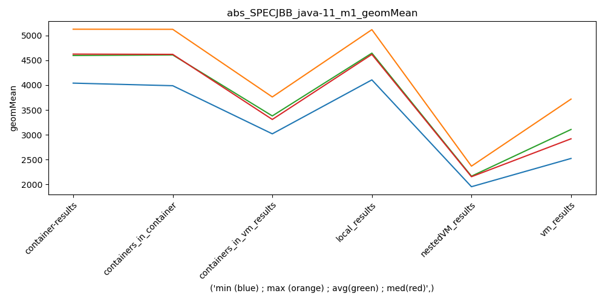
all runs of one jdk were made AVARAGE before processing
jbb2015.result.metric.max-jOPS
SPECJBB java-11 jbb2015.result.metric.max-jOPS where all runs of one jdk were made AVARAGE before processing
MIN 8651.0 container-results
MIN 8875.2 containers_in_container
MIN 6214.4 containers_in_vm_results
MIN 8935.6 local_results
MIN 4814.8 nestedVM_results
MIN 5860.2 vm_results
MAX 9045.0 container-results
MAX 9091.0 containers_in_container
MAX 7100.0 containers_in_vm_results
MAX 9217.2 local_results
MAX 5136.0 nestedVM_results
MAX 7164.2 vm_results
AVG 8879.133333333333 container-results
AVG 8994.844444444445 containers_in_container
AVG 6650.177777777778 containers_in_vm_results
AVG 9062.45 local_results
AVG 5005.6 nestedVM_results
AVG 6465.666666666667 vm_results
MED 8931.8 container-results
MED 9026.0 containers_in_container
MED 6391.4 containers_in_vm_results
MED 9064.6 local_results
MED 5036.0 nestedVM_results
MED 6032.2 vm_results
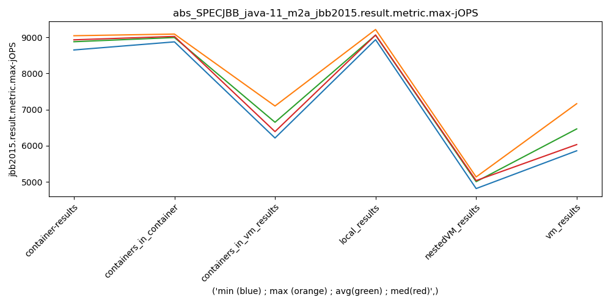
jbb2015.result.metric.critical-jOPS
SPECJBB java-11 jbb2015.result.metric.critical-jOPS where all runs of one jdk were made AVARAGE before processing
MIN 2214.2 container-results
MIN 2166.0 containers_in_container
MIN 1608.2 containers_in_vm_results
MIN 2210.2 local_results
MIN 894.0 nestedVM_results
MIN 1251.0 vm_results
MAX 2552.0 container-results
MAX 2588.8 containers_in_container
MAX 1847.6 containers_in_vm_results
MAX 2519.2 local_results
MAX 992.4 nestedVM_results
MAX 1776.8 vm_results
AVG 2379.155555555555 container-results
AVG 2360.1555555555556 containers_in_container
AVG 1717.7555555555555 containers_in_vm_results
AVG 2388.675 local_results
AVG 937.7333333333333 nestedVM_results
AVG 1492.8666666666668 vm_results
MED 2375.2 container-results
MED 2337.6 containers_in_container
MED 1674.2 containers_in_vm_results
MED 2426.6 local_results
MED 941.0 nestedVM_results
MED 1319.4 vm_results

geomMean of all keys (benchmark meassured relativre accuracy)
{'MIN': [4376.647598333683, 4384.482090281588, 3161.3285308553427, 4444.036804528063, 2074.712317406922, 2707.6022972364312], 'MAX': [4804.460427561039, 4851.265896650069, 3621.872443916268, 4818.710433300594, 2257.6462078899785, 3567.8215426223323], 'AVG': [4596.17660654141, 4607.519081557187, 3379.849082904424, 4652.660287808471, 2166.5451699268433, 3106.827681807352], 'MED': [4605.953903373328, 4593.384111959286, 3271.1591034371895, 4690.006221744274, 2176.8959552537185, 2821.149531662581]}
SPECJBB java-11 geomMean where all runs of one jdk were made AVARAGE before processing
MIN 4376.647598333683 container-results
MIN 4384.482090281588 containers_in_container
MIN 3161.3285308553427 containers_in_vm_results
MIN 4444.036804528063 local_results
MIN 2074.712317406922 nestedVM_results
MIN 2707.6022972364312 vm_results
MAX 4804.460427561039 container-results
MAX 4851.265896650069 containers_in_container
MAX 3621.872443916268 containers_in_vm_results
MAX 4818.710433300594 local_results
MAX 2257.6462078899785 nestedVM_results
MAX 3567.8215426223323 vm_results
AVG 4596.17660654141 container-results
AVG 4607.519081557187 containers_in_container
AVG 3379.849082904424 containers_in_vm_results
AVG 4652.660287808471 local_results
AVG 2166.5451699268433 nestedVM_results
AVG 3106.827681807352 vm_results
MED 4605.953903373328 container-results
MED 4593.384111959286 containers_in_container
MED 3271.1591034371895 containers_in_vm_results
MED 4690.006221744274 local_results
MED 2176.8959552537185 nestedVM_results
MED 2821.149531662581 vm_results

all runs of one jdk were made MEDIAN before processing
jbb2015.result.metric.max-jOPS
SPECJBB java-11 jbb2015.result.metric.max-jOPS where all runs of one jdk were made MEDIAN before processing
MIN 8676.0 container-results
MIN 8759.0 containers_in_container
MIN 6118.0 containers_in_vm_results
MIN 9008.0 local_results
MIN 4778.0 nestedVM_results
MIN 5716.0 vm_results
MAX 9123.0 container-results
MAX 9206.0 containers_in_container
MAX 7084.0 containers_in_vm_results
MAX 9206.0 local_results
MAX 5111.0 nestedVM_results
MAX 7164.0 vm_results
AVG 8895.333333333334 container-results
AVG 8972.777777777777 containers_in_container
AVG 6645.555555555556 containers_in_vm_results
AVG 9124.0 local_results
AVG 5001.333333333333 nestedVM_results
AVG 6439.777777777777 vm_results
MED 8909.0 container-results
MED 9007.0 containers_in_container
MED 6440.0 containers_in_vm_results
MED 9123.0 local_results
MED 5044.0 nestedVM_results
MED 6037.0 vm_results

jbb2015.result.metric.critical-jOPS
SPECJBB java-11 jbb2015.result.metric.critical-jOPS where all runs of one jdk were made MEDIAN before processing
MIN 2179.0 container-results
MIN 2159.0 containers_in_container
MIN 1614.0 containers_in_vm_results
MIN 2275.0 local_results
MIN 889.0 nestedVM_results
MIN 1230.0 vm_results
MAX 2564.0 container-results
MAX 2603.0 containers_in_container
MAX 1827.0 containers_in_vm_results
MAX 2530.0 local_results
MAX 987.0 nestedVM_results
MAX 1801.0 vm_results
AVG 2383.1111111111113 container-results
AVG 2363.1111111111113 containers_in_container
AVG 1714.2222222222222 containers_in_vm_results
AVG 2396.5 local_results
AVG 930.7777777777778 nestedVM_results
AVG 1492.888888888889 vm_results
MED 2374.0 container-results
MED 2349.0 containers_in_container
MED 1661.0 containers_in_vm_results
MED 2351.0 local_results
MED 928.0 nestedVM_results
MED 1333.0 vm_results
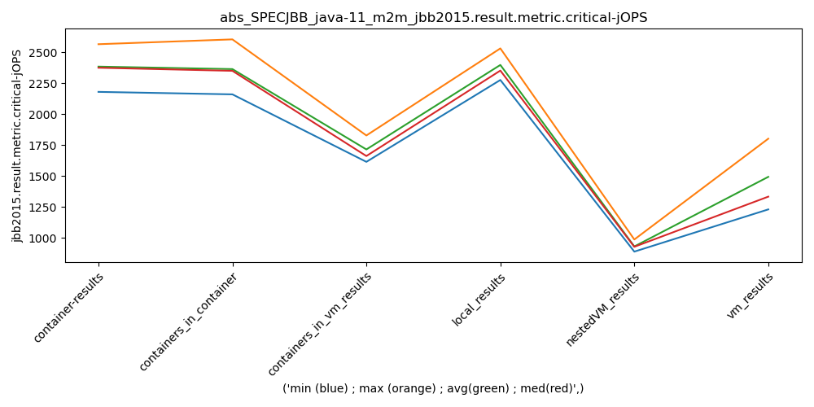
geomMean of all keys (benchmark meassured relativre accuracy)
{'MIN': [4347.988500444774, 4348.64128205581, 3142.3640782060884, 4526.941572408462, 2060.9808344572252, 2651.5429470404583], 'MAX': [4836.46275701571, 4895.22399896062, 3597.564175939048, 4826.093658436396, 2246.0091273189432, 3591.9860801512023], 'AVG': [4604.190233222744, 4604.744386412511, 3375.197625672559, 4676.073780427336, 2157.5750104981116, 3100.624564722086], 'MED': [4598.909218499534, 4599.72205682039, 3270.6023909977193, 4631.217226604686, 2163.523052800686, 2836.7800408209305]}
SPECJBB java-11 geomMean where all runs of one jdk were made MEDIAN before processing
MIN 4347.988500444774 container-results
MIN 4348.64128205581 containers_in_container
MIN 3142.3640782060884 containers_in_vm_results
MIN 4526.941572408462 local_results
MIN 2060.9808344572252 nestedVM_results
MIN 2651.5429470404583 vm_results
MAX 4836.46275701571 container-results
MAX 4895.22399896062 containers_in_container
MAX 3597.564175939048 containers_in_vm_results
MAX 4826.093658436396 local_results
MAX 2246.0091273189432 nestedVM_results
MAX 3591.9860801512023 vm_results
AVG 4604.190233222744 container-results
AVG 4604.744386412511 containers_in_container
AVG 3375.197625672559 containers_in_vm_results
AVG 4676.073780427336 local_results
AVG 2157.5750104981116 nestedVM_results
AVG 3100.624564722086 vm_results
MED 4598.909218499534 container-results
MED 4599.72205682039 containers_in_container
MED 3270.6023909977193 containers_in_vm_results
MED 4631.217226604686 local_results
MED 2163.523052800686 nestedVM_results
MED 2836.7800408209305 vm_results

geomMean of all metrics from geomMean of all keys
{'MIN': [4252.089636477684, 4236.4521231107465, 3107.003420062608, 4354.884620934833, 2029.3947746884528, 2626.374020926803], 'MAX': [4919.965213338277, 4955.161151422931, 3659.6313492838794, 4918.574423829041, 2290.1104214304687, 3625.494581837923], 'AVG': [4598.8462644822885, 4606.593997452395, 3378.2978853399954, 4657.471036529301, 2163.5509806877467, 3104.7585984511884], 'MED': [4609.748487049385, 4604.065527481684, 3283.4640885570566, 4646.399644971092, 2165.413147504886, 2858.750813708581]}
SPECJBB java-11 geomMean geomMean
MIN 4252.089636477684 container-results
MIN 4236.4521231107465 containers_in_container
MIN 3107.003420062608 containers_in_vm_results
MIN 4354.884620934833 local_results
MIN 2029.3947746884528 nestedVM_results
MIN 2626.374020926803 vm_results
MAX 4919.965213338277 container-results
MAX 4955.161151422931 containers_in_container
MAX 3659.6313492838794 containers_in_vm_results
MAX 4918.574423829041 local_results
MAX 2290.1104214304687 nestedVM_results
MAX 3625.494581837923 vm_results
AVG 4598.8462644822885 container-results
AVG 4606.593997452395 containers_in_container
AVG 3378.2978853399954 containers_in_vm_results
AVG 4657.471036529301 local_results
AVG 2163.5509806877467 nestedVM_results
AVG 3104.7585984511884 vm_results
MED 4609.748487049385 container-results
MED 4604.065527481684 containers_in_container
MED 3283.4640885570566 containers_in_vm_results
MED 4646.399644971092 local_results
MED 2165.413147504886 nestedVM_results
MED 2858.750813708581 vm_results
java-17
all runs of one jdk are treated as INDIVIDUAL items
jbb2015.result.metric.max-jOPS
SPECJBB java-17 jbb2015.result.metric.max-jOPS where all runs of one jdk are treated as INDIVIDUAL items
MIN 9354.0 container-results
MIN 9354.0 containers_in_container
MIN 6520.0 containers_in_vm_results
MIN 9585.0 local_results
MIN 5111.0 nestedVM_results
MIN 6681.0 vm_results
MAX 10047.0 container-results
MAX 10162.0 containers_in_container
MAX 7712.0 containers_in_vm_results
MAX 10162.0 local_results
MAX 5851.0 nestedVM_results
MAX 7905.0 vm_results
AVG 9692.577777777778 container-results
AVG 9748.111111111111 containers_in_container
AVG 6978.0888888888885 containers_in_vm_results
AVG 9908.533333333333 local_results
AVG 5484.863636363636 nestedVM_results
AVG 7162.511111111111 vm_results
MED 9700.0 container-results
MED 9700.0 containers_in_container
MED 6778.0 containers_in_vm_results
MED 9931.0 local_results
MED 5514.0 nestedVM_results
MED 6923.0 vm_results
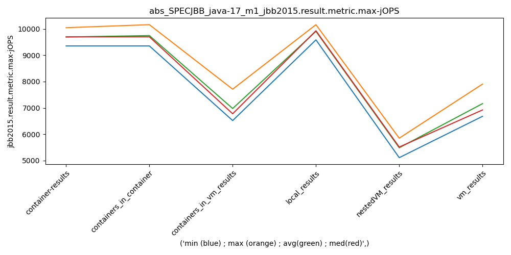
jbb2015.result.metric.critical-jOPS
SPECJBB java-17 jbb2015.result.metric.critical-jOPS where all runs of one jdk are treated as INDIVIDUAL items
MIN 3295.0 container-results
MIN 3289.0 containers_in_container
MIN 2077.0 containers_in_vm_results
MIN 3399.0 local_results
MIN 1256.0 nestedVM_results
MIN 1834.0 vm_results
MAX 3696.0 container-results
MAX 3659.0 containers_in_container
MAX 2423.0 containers_in_vm_results
MAX 3719.0 local_results
MAX 1456.0 nestedVM_results
MAX 2453.0 vm_results
AVG 3455.6666666666665 container-results
AVG 3468.0666666666666 containers_in_container
AVG 2297.6666666666665 containers_in_vm_results
AVG 3584.733333333333 local_results
AVG 1348.7954545454545 nestedVM_results
AVG 2130.0 vm_results
MED 3438.0 container-results
MED 3455.0 containers_in_container
MED 2319.0 containers_in_vm_results
MED 3596.0 local_results
MED 1348.0 nestedVM_results
MED 2023.0 vm_results

geomMean of all keys (benchmark meassured relativre accuracy)
{'MIN': [5551.705143467185, 5546.648177052516, 3679.9510866314513, 5707.838032039802, 2533.656646035528, 3500.4219745624955], 'MAX': [6093.743676919797, 6097.766640336444, 4322.7509759411305, 6147.55870244441, 2918.7421948503775, 4403.517344123899], 'AVG': [5787.427575420771, 5814.387259841523, 4004.1631131906997, 5959.819605025344, 2719.9189586325774, 3905.912014711374], 'MED': [5774.8246726632315, 5789.084556300762, 3964.6162487685992, 5975.941432109254, 2726.329400494372, 3742.3560760569003]}
SPECJBB java-17 geomMean where all runs of one jdk are treated as INDIVIDUAL items
MIN 5551.705143467185 container-results
MIN 5546.648177052516 containers_in_container
MIN 3679.9510866314513 containers_in_vm_results
MIN 5707.838032039802 local_results
MIN 2533.656646035528 nestedVM_results
MIN 3500.4219745624955 vm_results
MAX 6093.743676919797 container-results
MAX 6097.766640336444 containers_in_container
MAX 4322.7509759411305 containers_in_vm_results
MAX 6147.55870244441 local_results
MAX 2918.7421948503775 nestedVM_results
MAX 4403.517344123899 vm_results
AVG 5787.427575420771 container-results
AVG 5814.387259841523 containers_in_container
AVG 4004.1631131906997 containers_in_vm_results
AVG 5959.819605025344 local_results
AVG 2719.9189586325774 nestedVM_results
AVG 3905.912014711374 vm_results
MED 5774.8246726632315 container-results
MED 5789.084556300762 containers_in_container
MED 3964.6162487685992 containers_in_vm_results
MED 5975.941432109254 local_results
MED 2726.329400494372 nestedVM_results
MED 3742.3560760569003 vm_results
all runs of one jdk were made AVARAGE before processing
jbb2015.result.metric.max-jOPS
SPECJBB java-17 jbb2015.result.metric.max-jOPS where all runs of one jdk were made AVARAGE before processing
MIN 9566.8 container-results
MIN 9633.8 containers_in_container
MIN 6562.4 containers_in_vm_results
MIN 9802.2 local_results
MIN 5363.75 nestedVM_results
MIN 6794.0 vm_results
MAX 9923.8 container-results
MAX 9891.6 containers_in_container
MAX 7420.0 containers_in_vm_results
MAX 9986.8 local_results
MAX 5581.6 nestedVM_results
MAX 7613.0 vm_results
AVG 9692.577777777777 container-results
AVG 9748.111111111111 containers_in_container
AVG 6978.0888888888885 containers_in_vm_results
AVG 9908.533333333333 local_results
AVG 5482.172222222222 nestedVM_results
AVG 7162.511111111111 vm_results
MED 9638.0 container-results
MED 9702.2 containers_in_container
MED 6697.0 containers_in_vm_results
MED 9908.0 local_results
MED 5460.8 nestedVM_results
MED 6874.6 vm_results
jbb2015.result.metric.critical-jOPS
SPECJBB java-17 jbb2015.result.metric.critical-jOPS where all runs of one jdk were made AVARAGE before processing
MIN 3347.2 container-results
MIN 3358.2 containers_in_container
MIN 2216.4 containers_in_vm_results
MIN 3532.8 local_results
MIN 1308.0 nestedVM_results
MIN 1910.4 vm_results
MAX 3619.6 container-results
MAX 3577.2 containers_in_container
MAX 2371.2 containers_in_vm_results
MAX 3649.8 local_results
MAX 1400.8 nestedVM_results
MAX 2376.8 vm_results
AVG 3455.6666666666665 container-results
AVG 3468.0666666666666 containers_in_container
AVG 2297.6666666666665 containers_in_vm_results
AVG 3584.733333333333 local_results
AVG 1349.0055555555555 nestedVM_results
AVG 2130.0 vm_results
MED 3440.4 container-results
MED 3464.0 containers_in_container
MED 2307.4 containers_in_vm_results
MED 3583.8 local_results
MED 1346.0 nestedVM_results
MED 1991.2 vm_results

geomMean of all keys (benchmark meassured relativre accuracy)
{'MIN': [5658.79783699683, 5687.901824047247, 3813.7780952750777, 5884.659052145673, 2648.7327158473354, 3602.673673815046], 'MAX': [5993.3451827839845, 5948.464635517303, 4194.556472381794, 6037.368850749472, 2796.194785775841, 4253.772255304696], 'AVG': [5787.42757542077, 5814.387259841523, 4004.1631131906997, 5959.819605025344, 2719.463326520533, 3905.912014711374], 'MED': [5758.348304852703, 5797.27701597914, 3930.9868735471505, 5958.883318206525, 2711.132014491364, 3699.8247958518255]}
SPECJBB java-17 geomMean where all runs of one jdk were made AVARAGE before processing
MIN 5658.79783699683 container-results
MIN 5687.901824047247 containers_in_container
MIN 3813.7780952750777 containers_in_vm_results
MIN 5884.659052145673 local_results
MIN 2648.7327158473354 nestedVM_results
MIN 3602.673673815046 vm_results
MAX 5993.3451827839845 container-results
MAX 5948.464635517303 containers_in_container
MAX 4194.556472381794 containers_in_vm_results
MAX 6037.368850749472 local_results
MAX 2796.194785775841 nestedVM_results
MAX 4253.772255304696 vm_results
AVG 5787.42757542077 container-results
AVG 5814.387259841523 containers_in_container
AVG 4004.1631131906997 containers_in_vm_results
AVG 5959.819605025344 local_results
AVG 2719.463326520533 nestedVM_results
AVG 3905.912014711374 vm_results
MED 5758.348304852703 container-results
MED 5797.27701597914 containers_in_container
MED 3930.9868735471505 containers_in_vm_results
MED 5958.883318206525 local_results
MED 2711.132014491364 nestedVM_results
MED 3699.8247958518255 vm_results
all runs of one jdk were made MEDIAN before processing
jbb2015.result.metric.max-jOPS
SPECJBB java-17 jbb2015.result.metric.max-jOPS where all runs of one jdk were made MEDIAN before processing
MIN 9585.0 container-results
MIN 9550.0 containers_in_container
MIN 6555.0 containers_in_vm_results
MIN 9748.0 local_results
MIN 5380.0 nestedVM_results
MIN 6762.0 vm_results
MAX 9931.0 container-results
MAX 9931.0 containers_in_container
MAX 7486.0 containers_in_vm_results
MAX 10047.0 local_results
MAX 5649.0 nestedVM_results
MAX 7616.0 vm_results
AVG 9706.0 container-results
AVG 9742.111111111111 containers_in_container
AVG 6980.888888888889 containers_in_vm_results
AVG 9910.777777777777 local_results
AVG 5497.0 nestedVM_results
AVG 7163.333333333333 vm_results
MED 9662.0 container-results
MED 9700.0 containers_in_container
MED 6695.0 containers_in_vm_results
MED 9931.0 local_results
MED 5447.0 nestedVM_results
MED 6923.0 vm_results
jbb2015.result.metric.critical-jOPS
SPECJBB java-17 jbb2015.result.metric.critical-jOPS where all runs of one jdk were made MEDIAN before processing
MIN 3308.0 container-results
MIN 3364.0 containers_in_container
MIN 2167.0 containers_in_vm_results
MIN 3486.0 local_results
MIN 1301.0 nestedVM_results
MIN 1917.0 vm_results
MAX 3596.0 container-results
MAX 3581.0 containers_in_container
MAX 2373.0 containers_in_vm_results
MAX 3644.0 local_results
MAX 1425.0 nestedVM_results
MAX 2381.0 vm_results
AVG 3445.222222222222 container-results
AVG 3451.5555555555557 containers_in_container
AVG 2300.6666666666665 containers_in_vm_results
AVG 3577.0 local_results
AVG 1353.111111111111 nestedVM_results
AVG 2126.5555555555557 vm_results
MED 3440.0 container-results
MED 3448.0 containers_in_container
MED 2315.0 containers_in_vm_results
MED 3578.0 local_results
MED 1357.0 nestedVM_results
MED 1982.0 vm_results

geomMean of all keys (benchmark meassured relativre accuracy)
{'MIN': [5630.912892240476, 5667.997882850698, 3768.9103199731353, 5829.367718715298, 2645.6341394833867, 3600.3824796818462], 'MAX': [5975.941432109254, 5963.464680871347, 4214.769032817812, 6050.724584708843, 2837.2213519568754, 4258.367762417896], 'AVG': [5782.6747175410865, 5798.744495871073, 4007.5801140302074, 5954.061816198343, 2727.2791895546334, 3902.976594382331], 'MED': [5765.178227947511, 5783.217097775251, 3936.8674095021283, 5960.966196850977, 2718.7458505715463, 3704.238923179767]}
SPECJBB java-17 geomMean where all runs of one jdk were made MEDIAN before processing
MIN 5630.912892240476 container-results
MIN 5667.997882850698 containers_in_container
MIN 3768.9103199731353 containers_in_vm_results
MIN 5829.367718715298 local_results
MIN 2645.6341394833867 nestedVM_results
MIN 3600.3824796818462 vm_results
MAX 5975.941432109254 container-results
MAX 5963.464680871347 containers_in_container
MAX 4214.769032817812 containers_in_vm_results
MAX 6050.724584708843 local_results
MAX 2837.2213519568754 nestedVM_results
MAX 4258.367762417896 vm_results
AVG 5782.6747175410865 container-results
AVG 5798.744495871073 containers_in_container
AVG 4007.5801140302074 containers_in_vm_results
AVG 5954.061816198343 local_results
AVG 2727.2791895546334 nestedVM_results
AVG 3902.976594382331 vm_results
MED 5765.178227947511 container-results
MED 5783.217097775251 containers_in_container
MED 3936.8674095021283 containers_in_vm_results
MED 5960.966196850977 local_results
MED 2718.7458505715463 nestedVM_results
MED 3704.238923179767 vm_results
geomMean of all metrics from geomMean of all keys
{'MIN': [5613.621498176145, 5633.835086515625, 3753.799653949585, 5806.816907858884, 2608.7866338200392, 3567.50553609136], 'MAX': [6020.787075970567, 6002.8585771317885, 4243.654463956364, 6078.353117364313, 2850.2664392854413, 4304.661806130317], 'AVG': [5785.842855570729, 5809.168322118298, 4005.3017896308443, 5957.899723683657, 2722.218136513436, 3904.9332960477254], 'MED': [5766.1131075454, 5789.856685905924, 3944.129623094249, 5965.258812897496, 2718.728675844266, 3715.424314739116]}
SPECJBB java-17 geomMean geomMean
MIN 5613.621498176145 container-results
MIN 5633.835086515625 containers_in_container
MIN 3753.799653949585 containers_in_vm_results
MIN 5806.816907858884 local_results
MIN 2608.7866338200392 nestedVM_results
MIN 3567.50553609136 vm_results
MAX 6020.787075970567 container-results
MAX 6002.8585771317885 containers_in_container
MAX 4243.654463956364 containers_in_vm_results
MAX 6078.353117364313 local_results
MAX 2850.2664392854413 nestedVM_results
MAX 4304.661806130317 vm_results
AVG 5785.842855570729 container-results
AVG 5809.168322118298 containers_in_container
AVG 4005.3017896308443 containers_in_vm_results
AVG 5957.899723683657 local_results
AVG 2722.218136513436 nestedVM_results
AVG 3904.9332960477254 vm_results
MED 5766.1131075454 container-results
MED 5789.856685905924 containers_in_container
MED 3944.129623094249 containers_in_vm_results
MED 5965.258812897496 local_results
MED 2718.728675844266 nestedVM_results
MED 3715.424314739116 vm_results

java-21
all runs of one jdk are treated as INDIVIDUAL items
jbb2015.result.metric.max-jOPS
SPECJBB java-21 jbb2015.result.metric.max-jOPS where all runs of one jdk are treated as INDIVIDUAL items
MIN 9585.0 container-results
MIN 9354.0 containers_in_container
MIN 7326.0 containers_in_vm_results
MIN 9469.0 local_results
MIN 5178.0 nestedVM_results
MIN 7519.0 vm_results
MAX 10162.0 container-results
MAX 10047.0 containers_in_container
MAX 7905.0 containers_in_vm_results
MAX 10278.0 local_results
MAX 5783.0 nestedVM_results
MAX 7905.0 vm_results
AVG 9802.514285714286 container-results
AVG 9790.314285714287 containers_in_container
AVG 7611.4 containers_in_vm_results
AVG 9970.828571428572 local_results
AVG 5470.2 nestedVM_results
AVG 7734.028571428571 vm_results
MED 9816.0 container-results
MED 9816.0 containers_in_container
MED 7616.0 containers_in_vm_results
MED 10047.0 local_results
MED 5447.0 nestedVM_results
MED 7712.0 vm_results
jbb2015.result.metric.critical-jOPS
SPECJBB java-21 jbb2015.result.metric.critical-jOPS where all runs of one jdk are treated as INDIVIDUAL items
MIN 3781.0 container-results
MIN 3763.0 containers_in_container
MIN 2425.0 containers_in_vm_results
MIN 3840.0 local_results
MIN 1329.0 nestedVM_results
MIN 2504.0 vm_results
MAX 4096.0 container-results
MAX 4039.0 containers_in_container
MAX 2656.0 containers_in_vm_results
MAX 4251.0 local_results
MAX 1583.0 nestedVM_results
MAX 2770.0 vm_results
AVG 3902.057142857143 container-results
AVG 3876.4857142857145 containers_in_container
AVG 2542.4857142857145 containers_in_vm_results
AVG 3987.5142857142855 local_results
AVG 1436.7428571428572 nestedVM_results
AVG 2625.6285714285714 vm_results
MED 3907.0 container-results
MED 3859.0 containers_in_container
MED 2547.0 containers_in_vm_results
MED 3971.0 local_results
MED 1413.0 nestedVM_results
MED 2624.0 vm_results
geomMean of all keys (benchmark meassured relativre accuracy)
{'MIN': [6020.040282257254, 5932.883110259295, 4214.919928065064, 6030.004975122326, 2623.2731462811876, 4339.075477564316], 'MAX': [6451.6317315854285, 6370.230215620155, 4582.104320069547, 6609.975642920328, 3025.6386102771758, 4679.407013714452], 'AVG': [6184.656084741545, 6160.520551620519, 4399.0766946842705, 6305.459647716381, 2803.439098169043, 4506.294085985484], 'MED': [6192.827464091019, 6154.668471981249, 4404.310615749076, 6316.378471877694, 2774.276662483394, 4498.476186443583]}
SPECJBB java-21 geomMean where all runs of one jdk are treated as INDIVIDUAL items
MIN 6020.040282257254 container-results
MIN 5932.883110259295 containers_in_container
MIN 4214.919928065064 containers_in_vm_results
MIN 6030.004975122326 local_results
MIN 2623.2731462811876 nestedVM_results
MIN 4339.075477564316 vm_results
MAX 6451.6317315854285 container-results
MAX 6370.230215620155 containers_in_container
MAX 4582.104320069547 containers_in_vm_results
MAX 6609.975642920328 local_results
MAX 3025.6386102771758 nestedVM_results
MAX 4679.407013714452 vm_results
AVG 6184.656084741545 container-results
AVG 6160.520551620519 containers_in_container
AVG 4399.0766946842705 containers_in_vm_results
AVG 6305.459647716381 local_results
AVG 2803.439098169043 nestedVM_results
AVG 4506.294085985484 vm_results
MED 6192.827464091019 container-results
MED 6154.668471981249 containers_in_container
MED 4404.310615749076 containers_in_vm_results
MED 6316.378471877694 local_results
MED 2774.276662483394 nestedVM_results
MED 4498.476186443583 vm_results
all runs of one jdk were made AVARAGE before processing
jbb2015.result.metric.max-jOPS
SPECJBB java-21 jbb2015.result.metric.max-jOPS where all runs of one jdk were made AVARAGE before processing
MIN 9723.2 container-results
MIN 9654.2 containers_in_container
MIN 7500.6 containers_in_vm_results
MIN 9723.4 local_results
MIN 5353.0 nestedVM_results
MIN 7654.2 vm_results
MAX 9885.2 container-results
MAX 9908.2 containers_in_container
MAX 7750.4 containers_in_vm_results
MAX 10116.0 local_results
MAX 5729.4 nestedVM_results
MAX 7789.0 vm_results
AVG 9802.514285714287 container-results
AVG 9790.314285714285 containers_in_container
AVG 7611.400000000001 containers_in_vm_results
AVG 9970.828571428572 local_results
AVG 5470.2 nestedVM_results
AVG 7734.028571428571 vm_results
MED 9769.6 container-results
MED 9792.6 containers_in_container
MED 7609.0 containers_in_vm_results
MED 10046.6 local_results
MED 5460.4 nestedVM_results
MED 7750.6 vm_results
jbb2015.result.metric.critical-jOPS
SPECJBB java-21 jbb2015.result.metric.critical-jOPS where all runs of one jdk were made AVARAGE before processing
MIN 3830.8 container-results
MIN 3840.6 containers_in_container
MIN 2499.8 containers_in_vm_results
MIN 3931.2 local_results
MIN 1391.4 nestedVM_results
MIN 2589.0 vm_results
MAX 3965.2 container-results
MAX 3954.8 containers_in_container
MAX 2620.4 containers_in_vm_results
MAX 4134.8 local_results
MAX 1517.0 nestedVM_results
MAX 2708.6 vm_results
AVG 3902.057142857143 container-results
AVG 3876.4857142857145 containers_in_container
AVG 2542.4857142857145 containers_in_vm_results
AVG 3987.5142857142855 local_results
AVG 1436.7428571428572 nestedVM_results
AVG 2625.628571428571 vm_results
MED 3899.4 container-results
MED 3850.8 containers_in_container
MED 2530.6 containers_in_vm_results
MED 3963.6 local_results
MED 1422.6 nestedVM_results
MED 2622.2 vm_results
geomMean of all keys (benchmark meassured relativre accuracy)
{'MIN': [6103.084020394935, 6089.16418895073, 4330.127005065787, 6182.607061749922, 2729.1324995316736, 4451.597892891945], 'MAX': [6260.734385038228, 6259.7882839597705, 4506.567225727361, 6467.428917274623, 2948.134969773263, 4593.1781371943325], 'AVG': [6184.656084741546, 6160.520551620518, 4399.0766946842705, 6305.459647716381, 2803.439098169043, 4506.294085985484], 'MED': [6172.161553297192, 6140.793440590556, 4388.090176830918, 6310.364788187763, 2787.1069301338257, 4508.17294699305]}
SPECJBB java-21 geomMean where all runs of one jdk were made AVARAGE before processing
MIN 6103.084020394935 container-results
MIN 6089.16418895073 containers_in_container
MIN 4330.127005065787 containers_in_vm_results
MIN 6182.607061749922 local_results
MIN 2729.1324995316736 nestedVM_results
MIN 4451.597892891945 vm_results
MAX 6260.734385038228 container-results
MAX 6259.7882839597705 containers_in_container
MAX 4506.567225727361 containers_in_vm_results
MAX 6467.428917274623 local_results
MAX 2948.134969773263 nestedVM_results
MAX 4593.1781371943325 vm_results
AVG 6184.656084741546 container-results
AVG 6160.520551620518 containers_in_container
AVG 4399.0766946842705 containers_in_vm_results
AVG 6305.459647716381 local_results
AVG 2803.439098169043 nestedVM_results
AVG 4506.294085985484 vm_results
MED 6172.161553297192 container-results
MED 6140.793440590556 containers_in_container
MED 4388.090176830918 containers_in_vm_results
MED 6310.364788187763 local_results
MED 2787.1069301338257 nestedVM_results
MED 4508.17294699305 vm_results
all runs of one jdk were made MEDIAN before processing
jbb2015.result.metric.max-jOPS
SPECJBB java-21 jbb2015.result.metric.max-jOPS where all runs of one jdk were made MEDIAN before processing
MIN 9700.0 container-results
MIN 9700.0 containers_in_container
MIN 7423.0 containers_in_vm_results
MIN 9700.0 local_results
MIN 5313.0 nestedVM_results
MIN 7712.0 vm_results
MAX 9931.0 container-results
MAX 9931.0 containers_in_container
MAX 7712.0 containers_in_vm_results
MAX 10162.0 local_results
MAX 5716.0 nestedVM_results
MAX 7808.0 vm_results
AVG 9782.714285714286 container-results
AVG 9815.857142857143 containers_in_container
AVG 7565.0 containers_in_vm_results
AVG 9980.714285714286 local_results
AVG 5466.428571428572 nestedVM_results
AVG 7753.142857142857 vm_results
MED 9816.0 container-results
MED 9816.0 containers_in_container
MED 7616.0 containers_in_vm_results
MED 10047.0 local_results
MED 5447.0 nestedVM_results
MED 7712.0 vm_results
jbb2015.result.metric.critical-jOPS
SPECJBB java-21 jbb2015.result.metric.critical-jOPS where all runs of one jdk were made MEDIAN before processing
MIN 3828.0 container-results
MIN 3814.0 containers_in_container
MIN 2488.0 containers_in_vm_results
MIN 3942.0 local_results
MIN 1379.0 nestedVM_results
MIN 2595.0 vm_results
MAX 3990.0 container-results
MAX 3971.0 containers_in_container
MAX 2618.0 containers_in_vm_results
MAX 4107.0 local_results
MAX 1491.0 nestedVM_results
MAX 2713.0 vm_results
AVG 3903.1428571428573 container-results
AVG 3863.714285714286 containers_in_container
AVG 2539.5714285714284 containers_in_vm_results
AVG 3984.8571428571427 local_results
AVG 1423.2857142857142 nestedVM_results
AVG 2625.4285714285716 vm_results
MED 3907.0 container-results
MED 3827.0 containers_in_container
MED 2537.0 containers_in_vm_results
MED 3971.0 local_results
MED 1409.0 nestedVM_results
MED 2611.0 vm_results
geomMean of all keys (benchmark meassured relativre accuracy)
{'MIN': [6093.570381968194, 6082.417282627031, 4297.490430472184, 6183.6397048987255, 2706.7742794699375, 4473.548926747086], 'MAX': [6294.814532613332, 6279.808993910563, 4493.330168149231, 6460.289002823326, 2919.3417066181205, 4602.510619216429], 'AVG': [6179.266249948702, 6158.381887264523, 4383.133337823851, 6306.482427807509, 2789.317065856363, 4511.687353475438], 'MED': [6192.827464091019, 6129.097160267571, 4395.656037498839, 6316.378471877694, 2770.347090167584, 4487.319021420251]}
SPECJBB java-21 geomMean where all runs of one jdk were made MEDIAN before processing
MIN 6093.570381968194 container-results
MIN 6082.417282627031 containers_in_container
MIN 4297.490430472184 containers_in_vm_results
MIN 6183.6397048987255 local_results
MIN 2706.7742794699375 nestedVM_results
MIN 4473.548926747086 vm_results
MAX 6294.814532613332 container-results
MAX 6279.808993910563 containers_in_container
MAX 4493.330168149231 containers_in_vm_results
MAX 6460.289002823326 local_results
MAX 2919.3417066181205 nestedVM_results
MAX 4602.510619216429 vm_results
AVG 6179.266249948702 container-results
AVG 6158.381887264523 containers_in_container
AVG 4383.133337823851 containers_in_vm_results
AVG 6306.482427807509 local_results
AVG 2789.317065856363 nestedVM_results
AVG 4511.687353475438 vm_results
MED 6192.827464091019 container-results
MED 6129.097160267571 containers_in_container
MED 4395.656037498839 containers_in_vm_results
MED 6316.378471877694 local_results
MED 2770.347090167584 nestedVM_results
MED 4487.319021420251 vm_results
geomMean of all metrics from geomMean of all keys
{'MIN': [6072.117859686718, 6034.38797594475, 4280.570234001722, 6131.656693356618, 2686.0044339865613, 4421.012825379954], 'MAX': [6335.184426532348, 6303.093299922213, 4527.165652872558, 6512.201400184552, 2964.033555085893, 4624.871138533502], 'AVG': [6182.8589509844305, 6159.80758099137, 4393.75580913654, 6305.800555981689, 2798.723827617992, 4508.091125089317], 'MED': [6185.931150296414, 6141.510797952247, 4396.01394875854, 6314.373274144933, 2777.234348855337, 4497.981313846815]}
SPECJBB java-21 geomMean geomMean
MIN 6072.117859686718 container-results
MIN 6034.38797594475 containers_in_container
MIN 4280.570234001722 containers_in_vm_results
MIN 6131.656693356618 local_results
MIN 2686.0044339865613 nestedVM_results
MIN 4421.012825379954 vm_results
MAX 6335.184426532348 container-results
MAX 6303.093299922213 containers_in_container
MAX 4527.165652872558 containers_in_vm_results
MAX 6512.201400184552 local_results
MAX 2964.033555085893 nestedVM_results
MAX 4624.871138533502 vm_results
AVG 6182.8589509844305 container-results
AVG 6159.80758099137 containers_in_container
AVG 4393.75580913654 containers_in_vm_results
AVG 6305.800555981689 local_results
AVG 2798.723827617992 nestedVM_results
AVG 4508.091125089317 vm_results
MED 6185.931150296414 container-results
MED 6141.510797952247 containers_in_container
MED 4396.01394875854 containers_in_vm_results
MED 6314.373274144933 local_results
MED 2777.234348855337 nestedVM_results
MED 4497.981313846815 vm_results
geomMean of all benchamrks from geomMean of all metrics and all keys
{'MIN': [925.7296923355409, 924.8918636520865, 713.8327641113801, 942.3710548400048, 515.4418075932725, 678.4602266824712], 'MAX': [992.9417619317421, 998.753577698263, 785.8939055040769, 1004.4600829389242, 559.9159095330629, 788.0466151904742], 'AVG': [958.1444392327537, 963.3849294152659, 748.2836498829224, 975.4757937098027, 537.7627294626972, 728.4636327483059], 'MED': [958.6626374273856, 962.4147126022381, 740.805061067305, 976.3725954979544, 537.428790323858, 705.1871874757313]}
SPECJBB geomMean geomMean geomMean
MIN 925.7296923355409 container-results
MIN 924.8918636520865 containers_in_container
MIN 713.8327641113801 containers_in_vm_results
MIN 942.3710548400048 local_results
MIN 515.4418075932725 nestedVM_results
MIN 678.4602266824712 vm_results
MAX 992.9417619317421 container-results
MAX 998.753577698263 containers_in_container
MAX 785.8939055040769 containers_in_vm_results
MAX 1004.4600829389242 local_results
MAX 559.9159095330629 nestedVM_results
MAX 788.0466151904742 vm_results
AVG 958.1444392327537 container-results
AVG 963.3849294152659 containers_in_container
AVG 748.2836498829224 containers_in_vm_results
AVG 975.4757937098027 local_results
AVG 537.7627294626972 nestedVM_results
AVG 728.4636327483059 vm_results
MED 958.6626374273856 container-results
MED 962.4147126022381 containers_in_container
MED 740.805061067305 containers_in_vm_results
MED 976.3725954979544 local_results
MED 537.428790323858 nestedVM_results
MED 705.1871874757313 vm_results
geomMean of all above (with all, thus wrong))
{'MIN': [6.859051211012335e+17, 6.580488688545381e+17, 1.367316370348178e+17, 6.977825872956895e+17, 2.3505614782260656e+16, 1.611162962378298e+17], 'MAX': [8.58053935787449e+17, 8.138992791058339e+17, 2.2125310275046038e+17, 9.049247499582758e+17, 2.9111337992129052e+16, 3.128118255284082e+17], 'AVG': [7.821482985349027e+17, 7.441909428752154e+17, 1.7329946320234096e+17, 8.038310487274953e+17, 2.634891426841834e+16, 2.3123556300254378e+17], 'MED': [7.918475006721192e+17, 7.472651415274815e+17, 1.6118657706367686e+17, 8.093537082673573e+17, 2.6394604556081176e+16, 2.3649128081665552e+17]}
geomMean(with all thus wrong) geomMean geomMean geomMean
MIN 17.0 container-results
MIN 17.0 containers_in_container
MIN 17.0 containers_in_vm_results
MIN 17.0 local_results
MIN 16.0 nestedVM_results
MIN 17.0 vm_results
MAX 17.0 container-results
MAX 17.0 containers_in_container
MAX 17.0 containers_in_vm_results
MAX 17.0 local_results
MAX 16.0 nestedVM_results
MAX 17.0 vm_results
AVG 17.0 container-results
AVG 17.0 containers_in_container
AVG 17.0 containers_in_vm_results
AVG 17.0 local_results
AVG 16.0 nestedVM_results
AVG 17.0 vm_results
MED 17.0 container-results
MED 17.0 containers_in_container
MED 17.0 containers_in_vm_results
MED 17.0 local_results
MED 16.0 nestedVM_results
MED 17.0 vm_results
geomMean of all above
{'MIN': [6.859051211012335e+17, 6.580488688545381e+17, 1.367316370348178e+17, 6.977825872956895e+17, 2.3505614782260656e+16, 1.611162962378298e+17], 'MAX': [8.58053935787449e+17, 8.138992791058339e+17, 2.2125310275046038e+17, 9.049247499582758e+17, 2.9111337992129052e+16, 3.128118255284082e+17], 'AVG': [7.821482985349027e+17, 7.441909428752154e+17, 1.7329946320234096e+17, 8.038310487274953e+17, 2.634891426841834e+16, 2.3123556300254378e+17], 'MED': [7.918475006721192e+17, 7.472651415274815e+17, 1.6118657706367686e+17, 8.093537082673573e+17, 2.6394604556081176e+16, 2.3649128081665552e+17]}
geomMean geomMean geomMean geomMean
MIN 17.0 container-results
MIN 17.0 containers_in_container
MIN 17.0 containers_in_vm_results
MIN 17.0 local_results
MIN 16.0 nestedVM_results
MIN 17.0 vm_results
MAX 17.0 container-results
MAX 17.0 containers_in_container
MAX 17.0 containers_in_vm_results
MAX 17.0 local_results
MAX 16.0 nestedVM_results
MAX 17.0 vm_results
AVG 17.0 container-results
AVG 17.0 containers_in_container
AVG 17.0 containers_in_vm_results
AVG 17.0 local_results
AVG 16.0 nestedVM_results
AVG 17.0 vm_results
MED 17.0 container-results
MED 17.0 containers_in_container
MED 17.0 containers_in_vm_results
MED 17.0 local_results
MED 16.0 nestedVM_results
MED 17.0 vm_results
{kind=link}
{kind=link}
{kind=link}
{kind=link}
{kind=link}
{kind=link}
{kind=link}
{kind=link}
{kind=link}
{kind=link}
{kind=link}
{kind=link}
{kind=link}
{kind=link}
{kind=link}
{kind=link}
{kind=link}
{kind=link}
{kind=link}
{kind=link}
{kind=link}
{kind=link}
{kind=link}
{kind=link}
{kind=link}
{kind=link}
{kind=link}
{kind=link}
{kind=link}
{kind=link}
{kind=link}
{kind=link}
{kind=link}
{kind=link}
{kind=link}
{kind=link}
{kind=link}
{kind=link}
{kind=link}
{kind=link}
{kind=link}
{kind=link}
{kind=link}
{kind=link}
{kind=link}
{kind=link}
{kind=link}
{kind=link}
{kind=link}
{kind=link}
{kind=link}
{kind=link}
{kind=link}
{kind=link}
{kind=link}
{kind=link}
{kind=link}
{kind=link}
{kind=link}
{kind=link}
{kind=link}
{kind=link}
{kind=link}
{kind=link}
{kind=link}
{kind=link}
{kind=link}
{kind=link}
{kind=link}
{kind=link}
{kind=link}
{kind=link}
{kind=link}
{kind=link}
{kind=link}
{kind=link}
{kind=link}
{kind=link}
{kind=link}
{kind=link}
{kind=link}
{kind=link}
{kind=link}
{kind=link}
{kind=link}
{kind=link}
{kind=link}
{kind=link}
{kind=link}
{kind=link}
{kind=link}
{kind=link}
{kind=link}
{kind=link}
{kind=link}
{kind=link}
{kind=link}
{kind=link}
{kind=link}
{kind=link}
{kind=link}
{kind=link}
{kind=link}
{kind=link}
{kind=link}
{kind=link}
{kind=link}
{kind=link}
{kind=link}
{kind=link}
{kind=link}
{kind=link}
{kind=link}
{kind=link}
{kind=link}
{kind=link}
{kind=link}
{kind=link}
{kind=link}